blue_madonna
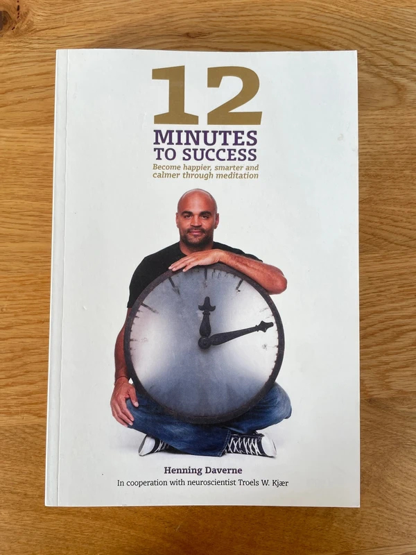 | 12 Minutes to Success - Become happier, smarter and calmer through meditation | Non-fiction | Very Good | DKK 50 | View on Vinted → |
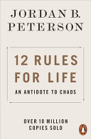 | 12 Rules for Life: An Antidote to Chaos DescriptionThe #1 Sunday Times and International Bestseller from 'the most influential public intellectual in the Western world right now' ( New York Times ) What are the most valuable things that everyone should know? Acclaimed clinical psychologist Jordan Peterson has influenced the modern understanding of personality, and now he has become one of the world's most popular public thinkers, with his lectures on topics from the Bible to romantic relationships to mythology drawing tens of millions of viewers. In an era of unprecedented change and polarizing politics, his frank and refreshing message about the value of individual responsibility and ancient wisdom has resonated around the world. In this book, he provides twelve profound and practical principles for how to live a meaningful life, from setting your house in order before criticising others to comparing yourself to who you were yesterday, not someone else today. Happiness is a pointless goal, he shows us. Instead we must search for meaning, not for its own sake, but as a defence against the suffering that is intrinsic to our existence. Drawing on vivid examples from the author's clinical practice and personal life, cutting edge psychology and philosophy, and lessons from humanity's oldest myths and stories, 12 Rules for Life offers a deeply rewarding antidote to the chaos in our eternal truths applied to our modern problems. | Non-fiction | Good | DKK 40 | View on Vinted → |
1Q84. Bog 1 🇩🇰 DescriptionBog 1 april–juni 1984 Lad Dem ikke narre af det ydre. Med den sætning åbner Haruki Murakami denne første bog af sit romanværk i tre bøger, '1Q84'. Et værk, hvis kerne er en kærlighedshistorie i slægt med de store klassikere; to elskende, som mere eller mindre ubevidst leder efter hinanden. Tengo er en ensom mand med forfatterdrømme, og når han ikke underviser i matematik, skriver han på en roman. Hans skarpsindige og kyniske redaktør, Komatsu, overtaler ham til at omskrive en opsigtsvækkende historie, indsendt til en debutantkonkurrence af en kun syttenårig pige, den smukke, men indesluttede Fukaeri. Tengo bliver uimodståeligt draget af Fukaeris historie, og dermed trækkes han ind i et spil, som han ikke engang vagt aner konsekvensene af. Aomame er massør og kampsportsinstruktør. I romanens første kapitel sidder hun i en taxi, der er blevet fanget i en motorvejskø. Den vidende chauffør peger på en hemmelig trappe, som kan føre hende væk fra motorvejen og videre, for hun skal nå en vigtig aftale. Da Aomame skræver over gitteret til trappen, skifter verden spor, og med tonerne af Michael Jacksons 'Billie Jean' i ørerne klatrer hun nedad, for hun har en opgave, der skal lykkes, en mission, der skal fuldføres. | Fiction | Very Good | DKK 45 | View on Vinted → | |
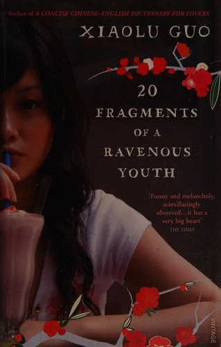 | 20 Fragments of a Ravenous Youth DescriptionSo I was the 6787th person in Beijing wanting to act in the film and TV industry. There were 6786 young and beautiful, or ugly and old people before me trying to get a role. I felt the competition, but compared with 1.6 billion people in China, 6786 was only the population of my village. I felt an urge to conquer this new village.' Life as a film extra in Beijing might seem hard, but Fenfang - the spirited heroine of Xiaolu Guo's new novel - won't be defeated. She has travelled 1800 miles to seek her fortune in the city, and has no desire to return to the never-ending sweet potato fields back home. Determined to live a modern life, Fenfang works as a cleaner in the Young Pioneer's movie theatre, falls in love with unsuitable men and keeps her kitchen cupboard stocked with UFO instant noodles. As Fenfang might say, Heavenly Bastard in the Sky, isn't it about time I got my lucky break? Genres Fiction China Asia Contemporary Literary Fiction Coming Of Age Asian Literature | Fiction | Very Good | DKK 70 | View on Vinted → |
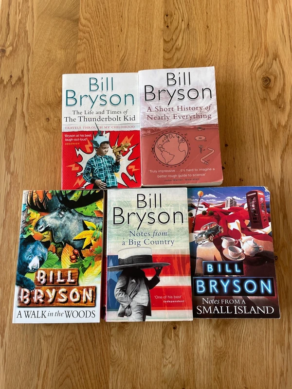 | 5 books by Bill Bryson Description5 books by Bill Bryson 📚 sold as a bundle Books: The Life and Times of the Thunderbolt Kid A Short History of Nearly Everything A Walk in the Woods: Rediscovering America on the Appalachian Trail Notes from a Small Island Notes from a Big Country Bill Bryson was born in Des Moines, Iowa, in 1951. He is the author of eighteen books and holds the record of having the most bestsellers of any author on the Sunday Times bestseller list in the last fifty years. A Short History of Nearly Everything, first published in 2003, spent 106 weeks in the chart, won both the Aventis Prize and the Descartes Prize and is the biggest-selling popular science book of the twenty-first century. Bill Bryson is a former Chancellor of Durham University and is an Honorary Fellow of the Royal Society. He lives in England. | Non-fiction | Good | DKK 100 | View on Vinted → |
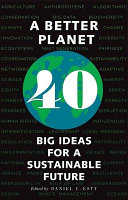 | A Better Planet: Forty Big Ideas for a Sustainable Future DescriptionA practical, bipartisan call to action from the world’s leading thinkers on the environment and sustainability Sustainability has emerged as a global priority in the past decade. The 2015 Paris Agreement on climate change and the adoption of the seventeen Sustainable Development Goals through the United Nations have highlighted the need to address critical challenges such as the buildup of greenhouse gases in the atmosphere, water shortages, and air pollution. But in the United States, partisan divides, regional disputes, and deep disagreements over core principles have made it nearly impossible to chart a course toward a sustainable future. This timely new book, edited by celebrated scholar Daniel C. Esty, offers fresh thinking and forward-looking solutions from environmental thought leaders across the political spectrum. The book’s forty essays cover such subjects as ecology, environmental justice, Big Data, public health, and climate change, all with an emphasis on sustainability. The book focuses on moving toward sustainability through actionable, bipartisan approaches based on rigorous analytical research. Genres Economics Sustainability Environment Nonfiction 416 pages, Hardcover Published October 22, 2019 | Non-fiction | Very Good | DKK 65 | View on Vinted → |
A Biography of Loneliness: The History of an Emotion DescriptionDespite 21st-century fears of an 'epidemic' of loneliness, its history has been sorely neglected. A Biography of Loneliness offers a radically new interpretation of loneliness as an emotional language and experience. Using letters and diaries, philosophical tracts, political discussions, and medical literature from the eighteenth century to the present, historian of the emotions Fay Bound Alberti argues that loneliness is not an ahistorical, universal phenomenon. It is, in fact, a modern emotion: before 1800, its language did not exist. And where loneliness is identified, it is not always bad, but a complex emotional state that differs according to class, gender, ethnicity and experience. Looking at informative case studies such as Sylvia Plath, Queen Victoria, and Virginia Woolf, A Biography of Loneliness charts the emergence of loneliness as a modern and embodied emotional state. Genres Nonfiction History Psychology Philosophy Sociology Research 320 pages, Hardcover First published September 12, 2019 | Non-fiction | Very Good | DKK 60 | View on Vinted → | |
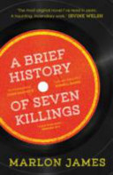 | A Brief History of Seven Killings DescriptionA "thrilling, ambitious . . . intense" ("Los Angeles Times") novel that explores the attempted assassination of Bob Marley in the late 1970s. In "A Brief History of Seven Killings," Marlon James combines masterful storytelling with his unrivaled skill at characterization and his meticulous eye for detail to forge a novel of dazzling ambition and scope. On December 3, 1976, just before the Jamaican general election and two days before Bob Marley was to play the Smile Jamaica Concert to ease political tensions in Kingston, seven unnamed gunmen stormed the singer's house, machine guns blazing. The attack wounded Marley, his wife, and his manager, and injured several others. Little was officially released about the gunmen, but rumors abounded regarding the assassins' fates. "A Brief History of Seven Killings" is James's fictional exploration of that dangerous and unstable time in Jamaica's history and beyond. Deftly spanning decades and continents and peopled with a wide range of characters--assassins, drug dealers, journalists, and even ghosts--James brings to life the people who walked the streets of 1970s Kingston, who dominated the crack houses of 1980s New York, and who reemerged into a radically altered Jamaica of the 1990s. Brilliantly inventive, "A Brief History of Seven Killings" is an "exhilarating" ("The New York Times") epic that's been called "a tour de force" ("The Wall Street Journal"). | Non-fiction | Satisfactory | DKK 25 | View on Vinted → |
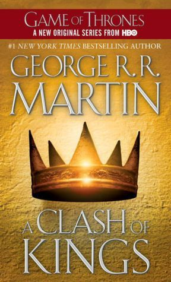 | A Clash of Kings DescriptionIn this eagerly awaited sequel to A Game of Thrones, George R.R. Martin has created a work of unsurpassed vision, power, and imagination. A Clash of Kings transports us to a world of revelry and revenge, wizardry and warfare unlike any you have ever experienced. A comet the colour of blood and flame cuts across the sky. And from the ancient citadel of Dragonstone to the forbidding shores of Winterfell, chaos reigns. Six factions struggle for control of a divided land and the Iron Throne of the Seven Kingdoms, preparing to stake their claims through tempest, turmoil, and war. It is a tale in which brother plots against brother and the dead rise to walk at night. Here a princess masquerades as an orphan boy; a knight of the mind prepares a poison for a treacherous sorceress; and wild men descend from the Mountains of the Moon to ravage the countryside. Against a backdrop of incest and fratricide, alchemy and murder, victory may go to the men and women possessed of the coldest steel...and the coldest hearts. For when kings clash, the whole land trembles. Audacious, inventive, brilliantly imagined, A Clash of Kings is a novel of dazzling beauty and boundless enchantment—a tale of pure excitement you will never forget. Genres Fantasy Fiction Epic Fantasy High Fantasy | Fiction | Very Good | DKK 25 | View on Vinted → |
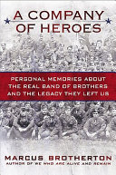 | A Company of Heroes: Personal Memories about the Real Band of Brothers and the Legacy They Left Us DescriptionThe author of We Who Are Alive and Remain presents remembrances from the families of the soldiers of Easy Company A Company of Heroes is an intimate, revealing portrait of the lives of the men who fought for our freedom during some of the darkest days the world has ever known-men who returned home with a newfound wisdom and honor that they passed on to their families and who continue to inspire new generations of Americans. Compiled from the veterans' notes, journals, letters, photographs, and the author's personally conducted interviews with the surviving contributors, this unique volume features the never-before-told stories of the Band of Brothers from more than twenty children and other family members. Genres History World War II Nonfiction Biography Military History Historical War | Non-fiction | Very Good | DKK 65 | View on Vinted → |
A concise history of France DescriptionThis book provides a clear, well-informed and highly illustrated guide to French history from the early Middle Ages to the Mitterrand presidency. It is the most up-to-date and comprehensive study of France available, based on a carefully structured synthesis and written in an entertaining style for the student and traveler. Alongside major themes such as state and society, the impact of war, and the use of political power, Roger Price includes studies of major figures including Louis XIV, the two Napoleons, Clemenceau and De Gaulle, providing a concise yet complete history of the country. With a stamp from: Shakespeare and Company 37 rue de la Bûcherie, 75005 Paris, France Great bookshop! | Non-fiction | Very Good | DKK 60 | View on Vinted → | |
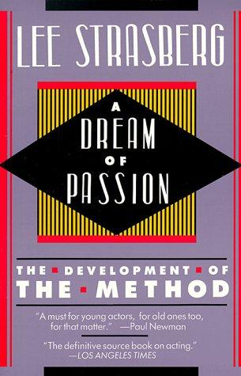 | A Dream of Passion: The Development of the Method Description“The definitive source book on acting.”— Los Angeles Times Marlon Brando, Al Pacino, Paul Newman, Dustin Hoffman, Dennis Hopper, Robert DeNiro, Marilyn Monroe, and Joanne Woodward—these are only a few of the many actors training in “Method” acting by the great and legendary Lee Strasberg. This revolutionary theory of acting—developed by Stanislavski and continued by Strasberg—has been a major influence on the art of acting in our time. During his last decade, Strasberg devoted himself to a work that would explain once and for all what The Method was and how it worked, as well as telling the story of its development and of the people involved with it. The result is a masterpiece of wisdom and guidance for anyone involved with the theater in any way. “A must for young actors—for old ones, too, for that matter.”—Paul Newman “An exploration of the creative process that will reward all who are interested in the nature of inspiration.”— Library Journal “An important cultural document.”— Booklist Genres Theatre Film Nonfiction Art Philosophy 201 pages, Paperback First published January 1, 1987 | Non-fiction | Good | DKK 50 | View on Vinted → |
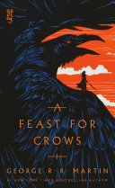 | A Feast for Crows DescriptionTHE BOOK BEHIND THE FOURTH SEASON OF GAME OF THRONES, AN ORIGINAL SERIES NOW ON HBO. Here is the fourth book in the landmark series that has redefined imaginative fiction and become a modern masterpiece in the making. A FEAST FOR CROWS After centuries of bitter strife, the seven powers dividing the land have beaten one another into an uneasy truce. But it’s not long before the survivors, outlaws, renegades, and carrion eaters of the Seven Kingdoms gather. Now, as the human crows assemble over a banquet of ashes, daring new plots and dangerous new alliances are formed while surprising faces—some familiar, others only just appearing—emerge from an ominous twilight of past struggles and chaos to take up the challenges of the terrible times ahead. Nobles and commoners, soldiers and sorcerers, assassins and sages, are coming together to stake their fortunes . . . and their lives. For at a feast for crows, many are the guests—but only a few are the survivors. A GAME OF THRONES • A CLASH OF KINGS • A STORM OF SWORDS • A FEAST FOR CROWS • A DANCE WITH DRAGONS | Fiction | Very Good | DKK 25 | View on Vinted → |
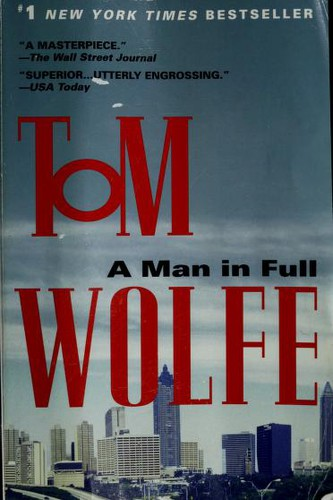 | A Man in Full Description#1 NEW YORK TIMES BESTSELLER • NATIONAL BOOK AWARD FINALIST • “A masterpiece” (The Wall Street Journal) of a novel by the era-defining author of The Bonfire of the Vanities—now a Netflix original limited series from David E. Kelley (Big Little Lies) starring Jeff Daniels, Lucy Liu, and Diane Lane “Wolfe is a peerless observer, a fearless satirist, a genius in full.”—People The setting is Atlanta, Georgia—a racially mixed, late-twentieth-century boomtown full of fresh wealth and wily politicians. The protagonist is Charles Croker, once a college football star, now a late-middle-aged Atlanta conglomerate king whose outsize ego has at last hit up against reality. Charlie has a 29,000-acre quail-shooting plantation, a young and demanding second wife, and a half-empty office complex with a staggering load of debt. Meanwhile, Conrad Hensley, idealistic young father of two, is laid off from his job at the Croker Global Foods warehouse near Oakland, California, and finds himself spiraling into the lower depths of the American legal system. And back in Atlanta, when star Georgia Tech running back Fareek “the Canon” Fanon, a homegrown product of the city’s slums, is accused of date-raping the daughter of a pillar of the white establishment, upscale black lawyer Roger White II is asked to represent Fanon and help keep the city’s delicate racial balance from blowing sky-high. Networks of illegal Asian immigrants crisscrossing the continent, daily life behind bars, shady real estate syndicates—Wolfe shows us contemporary turn-of-the-century America with all the verve, wit, and insight that have made him one of our most admired talked-about novelists. | Fiction | Very Good | DKK 40 | View on Vinted → |
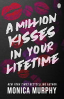 | A Million Kisses in Your Lifetime DescriptionWren Beaumont is a model student. Kind, clever and beautiful, she is loved by everyone at Lancaster Prep. Everyone but brooding campus bad boy Crew Lancaster. Son of the family who own the school, Crew's life seems easy - but with an overbearing father and high expectations, it's anything but. Which is why he has no time for people like Wren. But when their lives unexpectedly collide, Wren discovers there's more to life than good grades - and Crew finally understands what it's like to care about someone other than himself . . . Could they - should they - become the school's most unlikely couple? _________ Steamy, romantic and totally addictive, this is a story that proves that true love really does happen when you least expect it . . . Genres Romance Enemies To Lovers | Fiction | Very Good | DKK 25 | View on Vinted → |
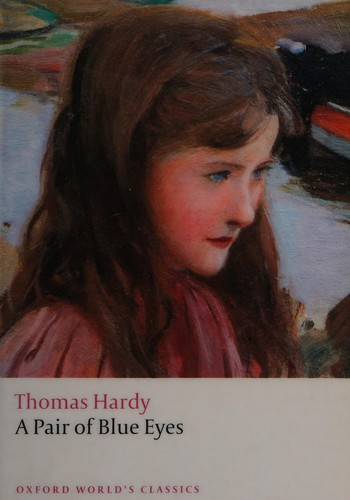 | A pair of blue eyes DescriptionElfride Swancourt is the daughter of the Rector of Endelstow, a remote sea-swept parish in Corwall based on St Juliot, where Hardy began A Pair of Blue Eyes during the beginning of his courtship of his first wife, Emma. Blue-eyed and high-spirited, Elfride has little experience of the world beyond, and becomes entangled with two the boyish architect, Stephen Smith, and the older literary man, Henry Knight. The former friends become rivals, and Elfride faces an agonizing choice. Written at a crucial time in Hardy's life, A Pair of Blue Eyes expresses more directly than any of his novels the events and social forces that made him the writer he was. Elfride's dilemma mirrors the difficult decision Hardy himself had to make with this to pursue the profession of architecture, where he was established, or literature, where he had yet to make his name. This updated edition contains a new introduction, bibliography, and chronology. For over 100 years Oxford World's Classics has made available the broadest spectrum of literature from around the globe. Each affordable volume reflects Oxford's commitment to scholarship, providing the most accurate text plus a wealth of other valuable features, including expert introductions by leading authorities, voluminous notes to clarify the text, up-to-date bibliographies for further study, and much more. Genres Classics Fiction Romance 19th Century Victorian Historical Fiction British Literature | Fiction | Very Good | DKK 40 | View on Vinted → |
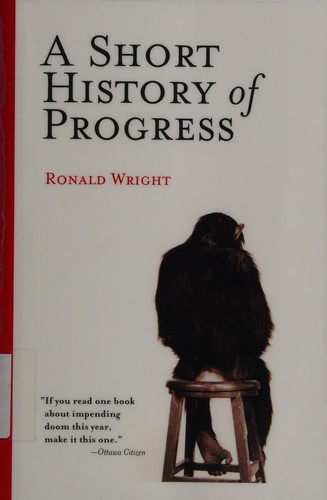 | A short history of progress DescriptionEach time history repeats itself, the cost goes up. The twentieth century—a time of unprecedented progress—has produced a tremendous strain on the very elements that comprise life itself: This raises the key question of the twenty-first century: How much longer can this go on? With wit and erudition, Ronald Wright lays out a-convincing case that history has always provided an answer, whether we care to notice or not. From Neanderthal man to the Sumerians to the Roman Empire, A Short History of Progress dissects the cyclical nature of humanity's development and demise, the 10,000-year old experiment that we've unleashed but have yet to control. It is Wright's contention that only by understanding and ultimately breaking from the patterns of progress and disaster that humanity has repeated around the world since the Stone Age can we avoid the onset of a new Dark Age. Wright illustrates how various cultures throughout history have literally manufactured their own end by producing an overabundance of innovation and stripping bare the very elements that allowed them to initially advance. Wright's book is brilliant; a fascinating rumination on the hubris at the heart of human development and the pitfalls we still may have time to avoid. Genres History Nonfiction Science Anthropology Philosophy Environment Economics | Non-fiction | Very Good | DKK 60 | View on Vinted → |
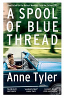 | A Spool of Blue Thread DescriptionTHE NUMBER ONE BESTSELLER SHORTLISTED FOR THE MAN BOOKER PRIZE 2015 SHORTLISTED FOR THE BAILEYS WOMEN'S FICTION PRIZE A RICHARD AND JUDY BOOK CLUB PICK 'It was a beautiful, breezy, yellow-and-green afternoon...' This is the way Abby Whitshank always begins the story of how she and Red fell in love that summer's day in 1959. The whole family on the porch, half-listening as their mother tells the same tale they have heard so many times before. From that porch we spool back through the generations, witnessing the events, secrets and unguarded moments that have come to define the family. From Red's father and mother, newly arrived in Baltimore in the 1920s, to Abby and Red's grandchildren carrying the family legacy boisterously into the twenty-first century - four generations of Whitshanks, their lives unfolding in and around the sprawling, lovingly worn Baltimore house that has always been their home... 'One of my favourite authors' Liane Moriarty 'She spins gold' Elizabeth Buchan 'Anne Tyler has no peer' Anita Shreve 'Anne Tyler is one of my favourite writers and this is a delicious book' Rachel Joyce | Fiction | Very Good | DKK 40 | View on Vinted → |
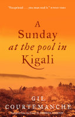 | A Sunday at the Pool in Kigali DescriptionA Sunday at the Pool in Kigali is a moving, passionate love story set amid the turmoil and terror of Rwanda’s genocide. All manner of Kigali residents pass their time by the pool of the Mille-Collines aid workers, Rwandan bourgeoisie, expatriates, UN peacekeepers, prostitutes. Keeping a watchful eye is Bernard Valcourt, a jaded foreign journalist, but his closest attention is devoted to Gentille, a hotel waitress with the slender, elegant build of a Tutsi. As they slip into an intense, improbable affair, the delicately balanced world around them–already devastated by AIDS–erupts in a Hutu-led genocide against the Tutsi people. Valcourt’s efforts to spirit Gentille to safety end in their separation. It will be months before he learns of his lover’s shocking fate. Genres Fiction Africa Historical Fiction Rwanda | Fiction | Good | DKK 20 | View on Vinted → |
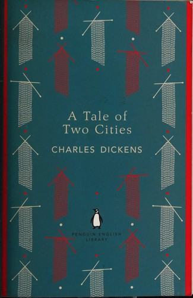 | A Tale of Two Cities Description'Liberty, equality, fraternity, or death; - the last, much the easiest to bestow, O Guillotine!' Described by Dickens as 'the best story I have written', A Tale of Two Cities interweaves thrilling historical drama with heartbreaking personal tragedy. It vividly depicts a revolutionary Paris running red with blood, and a London where the poor starve. In the midst of the chaos two men - an exiled French aristocrat and a dissolute English lawyer - are both redeemed and condemned by their love for the same woman, as the shadow of La Guillotine draws closer... | Fiction | Very Good | DKK 60 | View on Vinted → |
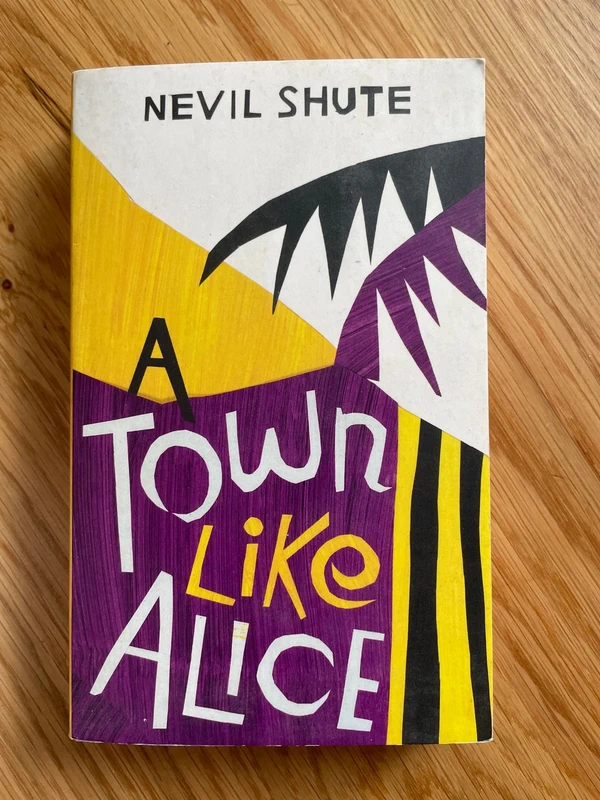 | A Town Like Alice DescriptionNevil Shute's most beloved novel, a tale of love and war, follows its enterprising heroine from the Malayan jungle during World War II to the rugged Australian outback. Jean Paget, a young Englishwoman living in Malaya, is captured by the invading Japanese and forced on a brutal seven-month death march with dozens of other women and children. A few years after the war, Jean is back in England, the nightmare behind her. However, an unexpected inheritance inspires her to return to Malaya to give something back to the villagers who saved her life. Jean's travels leads her to a desolate Australian outpost called Willstown, where she finds a challenge that will draw on all the resourcefulness and spirit that carried her through her war-time ordeals. Genres Fiction Historical Fiction Classics | Fiction | Very Good | DKK 30 | View on Vinted → |
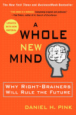 | A Whole New Mind DescriptionNew York Times Bestseller An exciting--and encouraging--exploration of creativity from the author of When: The Scientific Secrets of Perfect Timing The future belongs to a different kind of person with a different kind of mind: artists, inventors, storytellers-creative and holistic "right-brain" thinkers whose abilities mark the fault line between who gets ahead and who doesn't. Drawing on research from around the world, Pink (author of To Sell Is Human: The Surprising Truth About Motivating Others) outlines the six fundamentally human abilities that are absolute essentials for professional success and personal fulfillment--and reveals how to master them. A Whole New Mind takes readers to a daring new place, and a provocative and necessary new way of thinking about a future that's already here. | Non-fiction | Very Good | DKK 60 | View on Vinted → |
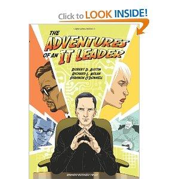 | Adventures of an IT Leader DescriptionBecoming an effective IT manager presents a host of challenges--from anticipating emerging technology to managing relationships with vendors, employees, and other managers. A good IT manager must also be a strong business leader. This book invites you to accompany new CIO Jim Barton to better understand the role of IT in your organization. You'll see Jim struggle through a challenging first year, handling (and fumbling) situations that, although fictional, are based on true events. You can read this book from beginning to end, or treat is as a series of cases. You can also skip around to address your most pressing needs. For example, need to learn about crisis management and security? Read chapters 10-12. You can formulate your own responses to a CIO's obstacles by reading the authors' regular "Reflection" questions. You'll turn to this book many times as you face IT-related issues in your own career. | Non-fiction | Good | DKK 40 | View on Vinted → |
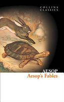 | Aesop's Fables DescriptionIt is thrifty to prepare today for the wants of tomorrow.' Living in Ancient Greece in the 5th Century BC, Aesop was said to be a slave and story-teller. His much-loved, enduring fables are revered the world over and remain popular as moral tales for children. With infamous vignettes, such as the race between the hare and the tortoise, the vain jackdaw, and the wolf in sheep's clothing, the themes of the fables remain as fresh today as when they were first told and give an insight into the Ancient Greek world. | Fiction | Very Good | DKK 60 | View on Vinted → |
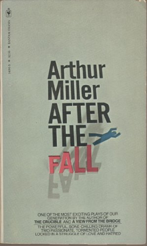 | After the Fall DescriptionAs Howard Taubman outlines the play: "At the outset Quentin emerges, moves forward and seats himself on the edge of the stage and begins to talk, like a man confiding in a friend. In the background are key figures in his life, and they move in and out of his narrative. The narration shades into scenes, little and big. They are revelations and illuminations. They remind Quentin of an awkward young girl whom he made proud of herself. They bring the tortured image of his mother's death and another of his mother's fury with his father, who lost all in trying to save a floundering business. They crisscross through his relations with a number of women the first wife who wanted to be a separate person, the second who drove him into a separateness and a possible third who knew, as a German raised in a furnace of concentration camps, that 'survival can be hard to bear.' These intertwining images bring back the memories of inquisition when men were asked to name names of those who had joined with them in a communism that they mistook for a better future AFTER THE FALL is a pain-wracked drama; it is also Mr. Miller's maturest For to sit in Mr. Miller's theater is to be in an adult world concerned with a search that cuts to the bone." Genres Plays Drama Classics Fiction Theatre American | Fiction | Good | DKK 40 | View on Vinted → |
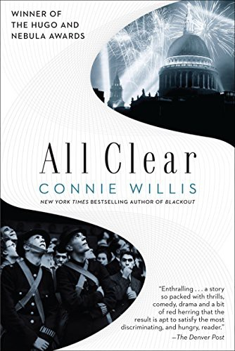 | All Clear Descriptionraveling back in time, from Oxford circa 2060 into the thick of World War II, was a routine excursion for three British historians eager to study firsthand the heroism and horrors of the Dunkirk evacuation and the London Blitz. But getting marooned in war-torn 1940 England has turned Michael Davies, Merope Ward, and Polly Churchill from temporal tourists into besieged citizens struggling to survive Hitler’s devastating onslaught. And now there’s more to worry about than just getting back The impossibility of altering past events has always been a core belief of time-travel theory—but it may be tragically wrong. When discrepancies in the historical record begin cropping up, it suggests that one or all of the future visitors have somehow changed the past—and, ultimately, the outcome of the war. Meanwhile, in 2060 Oxford, the stranded historians’ supervisor, Mr. Dunworthy, frantically confronts the seemingly impossible task of rescuing his students—three missing needles in the haystack of history. The thrilling time-tripping adventure that began with Blackout now hurtles to its stunning resolution in All Clear . Genres Science Fiction Time Travel Historical Fiction Fiction Historical Fantasy | Fiction | Very Good | DKK 50 | View on Vinted → |
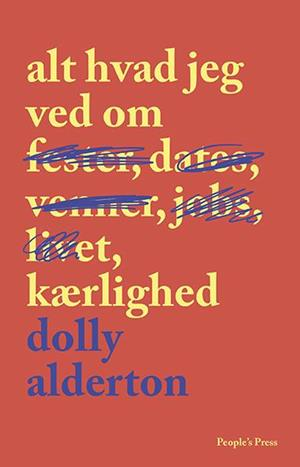 | Alt hvad jeg ved om kærlighed DescriptionAt blive voksen i medgang og modgang – det er noget, journalist og forfatter Dolly Alderton kender til. I denne bog fortæller hun levende og sjovt om at blive forelsket, om ikke at være forelsket nok i sig selv, om kampen for at få sig en karriere, om katastrofale fester med Rod Stewart-tema, om at blive droppet og om at opdage, hvor vigtige venskaber er, når man skal finde vej i tilværelsen. Alt hvad jeg ved om kærlighed er Dolly Aldertons underholdende, indsigtsfulde og hjertevarme bogdebut. Hun væver personlige fortællinger, skarpe observationer, lister, opskrifter og vignetter sammen til en historie om en tid i livet, hvor alt stadig er udefineret og åbent. | Non-fiction | Very Good | DKK 100 | View on Vinted → |
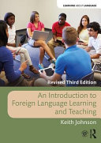 | An Introduction to Foreign Language Learning and Teaching DescriptionAn Introduction to Foreign Language Learning and Teaching provides an engaging, student-friendly guide to the field of foreign language learning and teaching. Aimed at students with no background in the area and taking a task-based approach, this introduces the theoretical and practical aspects of both learning and teaching;provides discussion and workshop activities throughout each chapter of the book, along with further reading and reflection tasks; deals with classroom- and task-based teaching, and covers lesson planning and testing, making the book suitable for use on practical training courses;analyses different learning styles and suggests strategies to improve language acquisition;includes examples from foreign language learning in Russian, French, and German, as well as English;is accompanied by a brand new companion website, which contains additional material, exercises, and weblinks. Written by an experienced teacher and author, An Introduction to Foreign Language Learning and Teaching is essential reading for students beginning their study in the area, as well as teachers in training and those already working in the field. Genres Linguistics Nonfiction | Textbooks & study materials | Good | DKK 125 | View on Vinted → |
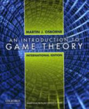 | An Introduction to Game Theory, International Edition DescriptionGame-theoretic reasoning pervades economic theory and is used widely in other social and behavioral sciences. An Introduction to Game Theory, by Martin J. Osborne, presents the main principles of game theory and shows how they can be used to understand economic, social, political, and biological phenomena. The book introduces in an accessible manner the main ideas behind the theory rather than their mathematical expression. All concepts are defined precisely, and logical reasoning is used throughout. The book requires an understanding of basic mathematics but assumes no specific knowledge of economics, political science, or other social or behavioral sciences. Coverage includes the fundamental concepts of strategic games, extensive games with perfect information, and coalitional games; the more advanced subjects of Bayesian games and extensive games with imperfect information; and the topics of repeated games, bargaining theory, evolutionary equilibrium, rationalizability, and maxminimization. The book offers a wide variety of illustrations from the social and behavioral sciences and more than 280 exercises. Each topic features examples that highlight theoretical points and illustrations that demonstrate how the theory may be used. Explaining the key concepts of game theory as simply as possible while maintaining complete precision, An Introduction to Game Theory is ideal for undergraduate and introductory graduate courses in game theory. | Textbooks & study materials | Very Good | DKK 120 | View on Vinted → |
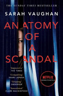 | Anatomy of a Scandal DescriptionAn astonishingly incisive and suspenseful novel about a scandal amongst Britain's privileged elite and the women caught up in its wake. Sophie's husband James is a loving father, a handsome man, a charismatic and successful public figure. And yet he stands accused of a terrible crime. Sophie is convinced he is innocent and desperate to protect her precious family from the lies that threaten to rip them apart. Kate is the lawyer hired to prosecute the case: an experienced professional who knows that the law is all about winning the argument. And yet Kate seeks the truth at all times. She is certain James is guilty and is determined he will pay for his crimes. Who is right about James? Sophie or Kate? And is either of them informed by anything more than instinct and personal experience? Despite her privileged upbringing, Sophie is well aware that her beautiful life is not inviolable. She has known it since she and James were first lovers, at Oxford, and she witnessed how easily pleasure could tip into tragedy. Most people would prefer not to try to understand what passes between a man and a woman when they are alone: alone in bed, alone in an embrace, alone in an elevator... Or alone in the moonlit courtyard of an Oxford college, where a girl once stood before a boy, heart pounding with excitement, then fear. Sophie never understood why her tutorial partner Holly left Oxford so abruptly. What would she think, if she knew the truth? | Fiction | Very Good | DKK 20 | View on Vinted → |
And So I Roar DescriptionA stunning, inspiring new novel from Abi Daré, New York Times bestselling author of The Girl with the Louding Voice When Tia accidentally overhears a whispered conversation between her mother—terminally ill and lying in a hospital bed in Port Harcourt, Nigeria—and her aunt, the repercussions will send her on a desperate quest to uncover a secret her mother has been hiding for nearly two decades. Back home in Lagos a few days later, Adunni, a plucky fourteen-year-old runaway, is lying awake in Tia’s guest room. Having escaped from her rural village in a desperate bid to seek a better future, she’s finally found refuge with Tia, who has helped her enroll in school. It’s always been Adunni’s dream to get an education, and she’s bursting with excitement. Suddenly, there’s a horrible knocking at the front gate. . . . It’s only the beginning of a harrowing ordeal that will see Tia forced to make a terrible choice between protecting Adunni or finally learning the truth behind the secret her mother has hidden from her. And Adunni will learn that her “louding voice,” as she calls it, is more important than ever, as she must advocate to save not only herself but all the young women of her home village, Ikati. If she succeeds, she may transform Ikati into a place where girls are allowed to claim the bright futures they deserve—and shout their stories to the world. | Fiction | Very Good | DKK 75 | View on Vinted → | |
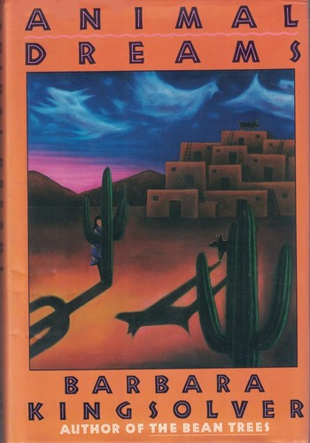 | Animal Dreams Description"Animals dream about the things they do in the day time just like people do. If you want sweet dreams, you've got to live a sweet life." So says Loyd Peregrina, a handsome Apache trainman and latter-day philosopher. But when Codi Noline returns to her hometown, Loyd's advice is painfully out of her reach. Dreamless and at the end of her rope, Codi comes back to Grace, Arizona to confront her past and face her ailing, distant father. What she finds is a town threatened by a silent environmental catastrophe, some startling clues to her own identity, and a man whose view of the world could change the course of her life. Blending flashbacks, dreams, and Native American legends, Animal Dreams is a suspenseful love story and a moving exploration of life's largest commitments. With this work, the acclaimed author of The Bean Trees and Homeland and Other Stories sustains her familiar voice while giving readers her most remarkable book yet. Genres Fiction Contemporary Literary Fiction Book Club Novels Adult Fiction Literature | Fiction | Good | DKK 50 | View on Vinted → |
Applied Ethics (Oxford Readings in Philosophy) DescriptionThis volume collects a wealth of articles covering a range of topics of practical concern in the field of ethics, including active and passive euthanasia, abortion, organ transplants, capital punishment, the consequences of human actions, slavery, overpopulation, the separate spheres of men and women, animal rights, and game theory and the nuclear arms race. The contributors are Thomas Nagel, David Hume, James Rachels, Judith Jarvis Thomson, Michael Tooley, John Harris, John Stuart Mill, Louis Pascal, Jonathan Glover, Derek Parfit, R.M. Hare, Janet Radcliffe Richards, Peter Singer, and Nicholas Measor. Genres Philosophy Nonfiction 270 pages, Paperback | Non-fiction | Very Good | DKK 80 | View on Vinted → | |
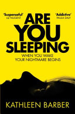 | Are You Sleeping Descriptionerial meets Ruth Ware’s In A Dark, Dark Wood in this inventive and twisty psychological thriller about a mega-hit podcast that reopens a murder case—and threatens to unravel the carefully constructed life of the victim’s daughter. The only thing more dangerous than a lie...is the truth. Josie Buhrman has spent the last ten years trying to escape her family’s reputation and with good reason. After her father's murder thirteen years prior, her mother ran away to join a cult and her twin sister Lanie, once Josie’s closest friend and confidant, betrayed her in an unimaginable way. Now, Josie has finally put down roots in New York, settling into domestic life with her partner Caleb, and that’s where she intends to stay. The only problem is that she has lied to Caleb about every detail of her past—starting with her last name. When investigative reporter Poppy Parnell sets off a media firestorm with a mega-hit podcast that reopens the long-closed case of Josie’s father’s murder, Josie’s world begins to unravel. Meanwhile, the unexpected death of Josie’s long-absent mother forces her to return to her Midwestern hometown where she must confront the demons from her past—and the lies on which she has staked her future. Genres Mystery Thriller Fiction Mystery Thriller | Fiction | Very Good | DKK 50 | View on Vinted → |
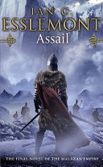 | Assail DescriptionTens of thousands of years of ice is melting, and the land of Assail, long a byword for menace and inaccessibility, is at last yielding its secrets. Tales of gold discovered in the region's north circulate in every waterfront dive and sailor's tavern and now adventurers and fortune-seekers have set sail in search of riches. And all they have to guide them are legends and garbled tales of the dangers that lie in wait - hostile coasts, fields of ice, impassable barriers and strange, terrifying creatures. But all accounts concur that the people of the north meet all trespassers with the sword - and should you make it, beyond are rumoured to lurk Elder monsters out of history's very beginnings. Into this turmoil ventures the mercenary company, the Crimson Guard. Not drawn by contract, but by the promise of answers: answers that Shimmer, second in command, feels should not be sought. Also heading north, as part of an uneasy alliance of Malazan fortune-hunters and Letherii soldiery, comes the bard Fisher kel Tath. With him is a Tiste Andii who was found washed ashore and cannot remember his past and yet commands far more power than he really should. It is also rumoured that a warrior, bearer of a sword that slays gods and who once fought for the Malazans, is also journeying that way. But far to the south, a woman patiently guards the shore. She awaits both allies and enemies. She is Silverfox, newly incarnate Summoner of the undying army of the T'lan Imass, and she will do anything to stop the renewal of an ages-old crusade that could lay waste to the entire continent and beyond. Casting light on mysteries spanning the Malazan empire, and offering a glimpse of the storied and epic history that shaped it, Assail brings the epic story of the Empire of Malaz to a thrilling close. | Fiction | Very Good | DKK 60 | View on Vinted → |
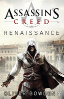 | Assassin's Creed the Renaissance Codex Book 1 DescriptionAssassin's Creed: Renaissance is the thrilling novelisation by Oliver Bowden based on the game series. 'I will seek Vengeance upon those who betrayed my family. I am Ezio Auditore di Firenze. I am an Assassin...' The Year of Our Lord 1476 - the Renaissance: culture and art flourish alongside the bloodiest corruption and violence. Bitter blood-feuds rage between the warring political families of Italy. Following the murder of his father and brothers, Ezio Auditore di Firenze is entrusted with an ancient Codex, the key to a conspiracy that goes back to the centuries-old conflict between the shadowy Templar Knights and the elite Order of Assassins. Ezio must avenge the deaths of his kinsmen and in doing so fulfil his destiny, and live by the laws of the Assassin's Creed. Truth is written in blood Assassin's Creed: Renaissance is based on the phenomenally successful gaming series. Fans of the game will love these stories. Other titles in the series include Assassin's Creed: Forsaken, Assassin's Creed: Brotherhood, Assassin's Creed: The Secret Crusade, and Assassin's Creed: Revelations. Oliver Bowden is the pen-name of an acclaimed novelist. | Fiction | Very Good | DKK 30 | View on Vinted → |
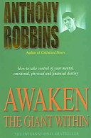 | Awaken the Giant Within DescriptionWake up and take control of your life! From the bestselling author of Inner Strength , Unlimited Power , and MONEY Master the Game, Anthony Robbins, the nation's leader in the science of peak performance, shows you his most effective strategies and techniques for mastering your emotions, your body, your relationships, your finances, and your life. The acknowledged expert in the psychology of change, Anthony Robbins provides a step-by-step program teaching the fundamental lessons of self-mastery that will enable you to discover your true purpose, take control of your life, and harness the forces that shape your destiny. Genres Self Help Nonfiction Personal Development Psychology Business Personal Growth Productivity | Non-fiction | Very Good | DKK 60 | View on Vinted → |
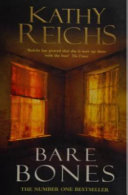 | Bare Bones DescriptionDuring one of the hottest summers on record, Dr Temperance Brennan is haunted by a string of horrifying events. First, the bones of a newborn baby are discovered in a wood stove. The mother is nowhere to be found. Next, a plane flies into a rock face. The dead pilot and passenger are burned beyond recognition, and covered in an unknown substance. And then a store of bones is found in a remote corner of the county. What has happened, and who will be the next victim? The answers lie hidden deep within the bones - but Tempe must find them in time to stop further disaster. | Fiction | Good | DKK 30 | View on Vinted → |
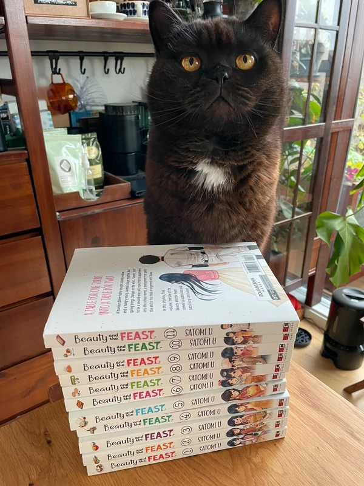 | Beauty and the Feast - bundle 11 volumes DescriptionPerfect condition Complete bundle with all 11 volumes! When her husband passed away, Yakumo Shuko lost her appetite for life, and with it, her love of cooking. But her neighbor Yamato Shohei brings an end to Shuko's solitary existence.... 28-year-old Shuuko Yakumo is aimlessly living day-to-day life since she lost her husband. She's content to live out her days in peace until a 15-year-old high school student named Shohei Yamato moves next door. Curious about her new neighbor, she soon finds that he lives alone and works himself to the bone as the only scholarship student for his school's baseball team. Not only that, but he's been living off nothing but convenience store food. Worried for his health, Yakumo invites Yamato to eat dinner at her place from now on so he can perform his best. But after extending this invitation, she soon finds that the high schooler possesses a monstrous appetite, and she has to get creative to keep up with his dietary needs. All the while, Yamato's ability to pack away food brings back memories of Yakumo's husband. And so begins the story of a lonely widow rediscovering her passion for cooking to feed a very hungry high schooler. As her days begin to revolve around her secret hobby of feeding Shohei, will Shuko rediscover the happiness life has to offer? | Comics, manga & graphic novels | Very Good | DKK 1400 | View on Vinted → |
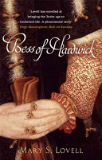 | Bess of Hardwick DescriptionBess of Hardwick was one of the most remarkable women of the Tudor era. Gently-born in reduced circumstances, she was married at 15, wedded at 16 and still a virgin. At 19 she married a man more than twice her age, Sir William Cavendish, a senior auditor in King Henry VIII's Court of Augmentations. Responsible for seizing church properties for the crown during the Dissolution, Cavendish enriched himself in the process. During the reign of King Edward VI, Cavendish was the Treasurer to the boy king and sisters and he and Bess moved in the highest levels of society. They had a London home and built Chatsworth House in Derbyshire. After Cavendish's death her third husband was poisoned by his brother. Bess' 4th marriage to the patrician George, 6th Earl of Shrewsbury, Earl Marshall of England, made Bess one of the most important women at court. Her shrewd business acumen was a byword and she was said to have 'a masculine understanding', in that age when women had little education and few legal rights. The Earl's death made her arguably the wealthiest and therefore - next to the Queen - the most powerful woman in the country. | Fiction | Good | DKK 35 | View on Vinted → |
Between You and Me DescriptionBetween You and Me is a riveting portrayal of female friendship, and the frayed boundary between loyalty and desire. Mari and Elisabeth have been at the centre of each other’s lives for years. Close friends since university, they’re now drifting through their mid-twenties, working casual jobs and living in run-down share houses. When they meet Jack, a charming academic historian twenty years their senior, they’re attracted to the sophisticated, intellectual world in which he seems to move. As the summer gathers heat, Jack is drawn into their lives, and an unconventional relationship – halfway between friendship and love triangle – develops. But soon things grow more complicated, and as secrets and betrayals detonate, the fallout sets the course for the rest of their lives. In Mari and Elisabeth, Joanna Horton has created two unforgettable women, whose choices on the cusp of adulthood will resonate with anyone who has ever had to navigate where friendship, intimacy and love intersect when trying to make a life of one’s own. PRAISE for Between You and Me'A novel that deftly explores the uncomfortable grey areas of power, privilege and control. Between You and Me is a compulsive read about how the choices we make (and those made for us) ripple into the future. At once unsettling and totally captivating.’ – Natasha Sholl, author of Found, Wanting‘I absolutely loved it. The characters felt both deeply familiar and also intriguingly complex and unknowable. An engaging and evocative read that I can't stop thinking about.’ – Eliza Henry-Jones, author of Salt and Skin Genres Fiction Contemporary Romance Literary Fiction Queer Adult | Fiction | Very Good | DKK 90 | View on Vinted → | |
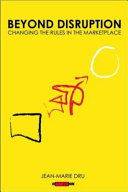 | Beyond Disruption DescriptionThe sequel to the best-selling Adweek book, Disruption, this book shows the wider application of the concept as it affects vision, strategy, creativity and media marketing. Jean Marie-Dru describes disruption as a universal language of change that allows advertisers from all over the world to form a common strategy. In this book, Dru explores the wide-reaching ramifications of disruption: for instance, how disruption can be seen at work in emerging, rebellious or unreceptive markets; how disruption can transform vision into insight; how disruption can affect communication and lead to cross-fertilization of ideas; how disruption relates to design; examples of disruptive companies and campaigns; and how disruption can lead to connectedness. GenresBusinessNonfiction | Non-fiction | Very Good | DKK 50 | View on Vinted → |
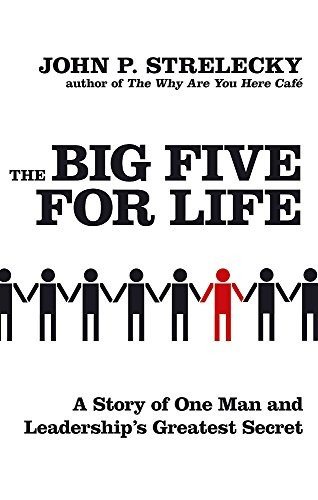 | Big Five for Life Descriptionhis book will inspire you. It will change your life in ways you can't know now, but you'll understand completely once you're done reading it. It will also forever enhance the way you look at your role as a leader. That includes the way you lead at home, at work, in your community...and especially the way you lead you. At every given moment we are all called to be leaders. If for no other purpose than to lead ourselves. After all, someone has to inspire you to get out of bed each day. And that someone, is you. It is told from the perspective of Thomas Derale, a man viewed by the people around him as the greatest leader in the world. At fifty-five years of age he learns he is dying. Yet even in that the act of dying he inspires everyone around him to live. The principles in this book, such as the Big Five for Life and Museum Day Morning, have positively impacted readers around the world. Each in their own unique way as they have applied them to their life, their situation. | Non-fiction | Very Good | DKK 50 | View on Vinted → |
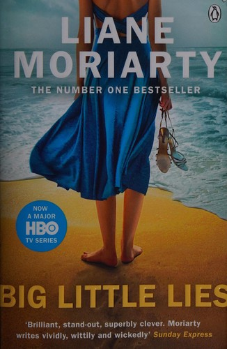 | Big Little lies DescriptionSometimes it’s the little lies that turn out to be the most lethal... A murder . . . a tragic accident . . . or just parents behaving badly? What’s indisputable is that someone is dead. But who did what? Big Little Lies follows three women, each at a crossroads: Madeline is a force to be reckoned with. She’s funny and biting, passionate, she remembers everything and forgives no one. Her ex-husband and his yogi new wife have moved into her beloved beachside community, and their daughter is in the same kindergarten class as Madeline’s youngest (how is this possible?). And to top it all off, Madeline’s teenage daughter seems to be choosing Madeline’s ex-husband over her. (How. Is. This. Possible?). Celeste is the kind of beautiful woman who makes the world stop and stare. While she may seem a bit flustered at times, who wouldn’t be, with those rambunctious twin boys? Now that the boys are starting school, Celeste and her husband look set to become the king and queen of the school parent body. But royalty often comes at a price, and Celeste is grappling with how much more she is willing to pay. New to town, single mom Jane is so young that another mother mistakes her for the nanny. Jane is sad beyond her years and harbors secret doubts about her son. But why? While Madeline and Celeste soon take Jane under their wing, none of them realizes how the arrival of Jane and her inscrutable little boy will affect them all. Big Little Lies is a brilliant take on ex-husbands and second wives, mothers and daughters, schoolyard scandal, and the dangerous little lies we tell ourselves just to survive. | Fiction | Very Good | DKK 25 | View on Vinted → |
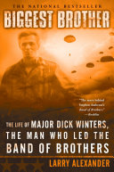 | Biggest Brother DescriptionThe New York Times bestseller that tells the true story of the life of Major Dick Winters, the man who led the Band of Brothers in World War II. Look for the Band of Brothers miniseries, now available to stream on Netflix! In every band of brothers, there is always one who looks out for the others. They were Easy Company, 101st Army Airborne—the World War II fighting unit legendary for their bravery against nearly insurmountable odds and their loyalty to one another in the face of death. Every soldier in this band of brothers looked to one man for leadership, devotion to duty, and the embodiment of courage: Major Dick Winters. This is the riveting story of an ordinary man who became an extraordinary hero. After he enlisted in the army’s arduous new Airborne division, Winters’s natural combat leadership helped him rise through the ranks, but he was never far from his men. Decades later, Stephen E. Ambrose’s Band of Brothers made him famous around the world. Full of never-before-published photographs, interviews, and Winters’s candid insights, Biggest Brother is the fascinating, inspirational story of a man who became a soldier, a leader, and a living testament to the valor of the human spirit—and of America. | Non-fiction | Very Good | DKK 60 | View on Vinted → |
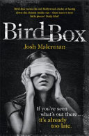 | Bird Box DescriptionJosh Malerman's debut novel BIRD BOX is a terrifying psychological thriller that will haunt you long after reading. Something is out there, something terrifying that must not be seen. One glimpse of it, and a person is driven to deadly violence. No one knows what it is or where it came from. Five years after it began, a handful of scattered survivors remains, including Malorie and her two young children. Living in an abandoned house near the river, she has dreamed of fleeing to a place where they might be safe. Now that the boy and girl are four, it's time to go, but the journey ahead will be terrifying: twenty miles downriver in a rowboat—blindfolded—with nothing to rely on but her wits and the children's trained ears. One wrong choice and they will die. Something is following them all the while, but is it man, animal, or monster? Interweaving past and present, Bird Box is a snapshot of a world unraveled that will have you racing to the final page. | Fiction | Very Good | DKK 34 | View on Vinted → |
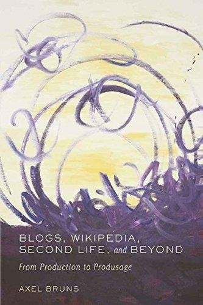 | Blogs, Wikipedia, Second Life, and Beyond: From Production to Produsage DescriptionIn this groundbreaking exploration of our developing participatory online culture, Axel Bruns establishes the core principles which drive the rise of collaborative content creation in environments, from open source through blogs and Wikipedia to Second Life. This book shows that what's emerging here is no longer just a new form of content production, but a new process for the continuous creation and extension of knowledge and art by collaborative communities: produsage. The implications of the gradual shift from production to produsage are profound, and will affect the very core of our culture, economy, society, and democracy. | Non-fiction | Satisfactory | DKK 40 | View on Vinted → |
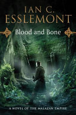 | Blood and Bone DescriptionIan Esslemont thrills again with another gripping entry into the New York Times bestselling Malazan World in Blood and Bone. In the western sky the bright emerald banner of the Visitor descends like a portent of annihilation. On the continent of Jacuruku, the Thaumaturgs have mounted yet another expedition to tame the neighboring wild jungle. Yet this is no normal wilderness. It is called Himatan, and it is said to be half of the spirit realm and half of the earth. And it is said to be ruled by a powerful entity whom some name the Queen of Witches, and some a goddess: the ancient Ardata. Saeng grew up knowing only the rule of the magus Thaumaturgs—but it was the voices out of that land's forgotten past that she listened to. And when her rulers mount an invasion of the neighboring jungle, those voices send her and her brother on a desperate mission. To the south, the desert tribes are united by the arrival of a foreign warleader, a veteran commander in battered ashen mail whom his men call the Grey Ghost. This warleader takes the tribes on a raid like none other, deep into the heart of Thaumaturg lands. Meanwhile word comes to K'azz, and mercenary company the Crimson Guard, of a contract in Jacuruku. And their employer...none other than Ardata herself. | Fiction | Very Good | DKK 65 | View on Vinted → |
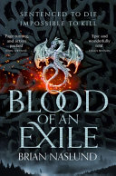 | Blood of an Exile: Dragons of Terra Book 1 DescriptionDragons of Terra #1 Bershad stands apart from the world, the most legendary dragonslayer in history, both revered and reviled. Once, he was Lord Silas Bershad, but after a disastrous failure on the battlefield, he was stripped of his titles and sentenced to one violent, perilous hunt after another. Now he lives only to stalk dragons, slaughter them, collect their precious oil, and head back into the treacherous wilds once more. For years, death was his only chance to escape. But that is about to change. The king who sentenced Bershad to his fate has just given him an unprecedented chance at redemption. Kill a foreign emperor and walk free forever. The journey will take him across dragon-infested mountains, through a seedy criminal underworld, and into a forbidden city guarded by deadly technology. But the links of fate bind us all. Genres Fantasy Dragons Epic Fantasy Adult Fiction High Fantasy | Fiction | Very Good | DKK 50 | View on Vinted → |
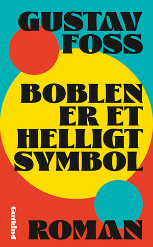 | Boblen er et helligt symbol DescriptionEn mand i trediverne er ved at miste sig selv i et storrumskontor. Og lige under overfladen ulmer barndommen på Langeland, som han prøver at lade være med at tænke på. En dag bliver det hele for meget. I desperation bryder han ind hos en kollega, han har et særligt anstrengt forhold til. Her gør han et overraskende fund. Noget slår klik og kaster ham ud på en hæsblæsende rejse. Boblen er et helligt symbol er en roman båret af humor, længsel og rædsel. Om forfatteren: Gustav Foss f. 1990 har en kandidat fra RUC. Han debuterede med den anmelderroste novellesamling Lån mig dine tænder i 2023. Boblen er et helligt symbol er hans første roman. | Fiction | Very Good | DKK 140 | View on Vinted → |
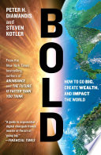 | Bold Description“A visionary roadmap for people who believe they can change the world—and invaluable advice about bringing together the partners and technologies to help them do it.” —President Bill Clinton A radical, how-to guide for using exponential technologies, moonshot thinking, and crowd-powered tools, Bold unfolds in three parts. Part One focuses on the exponential technologies that are disrupting today’s Fortune 500 companies and enabling upstart entrepreneurs to go from “I’ve got an idea” to “I run a billion-dollar company” far faster than ever before. The authors provide exceptional insight into the power of 3D printing, artificial intelligence, robotics, networks and sensors, and synthetic biology. Part Two draws on insights from billionaires such as Larry Page, Elon Musk, Richard Branson, and Jeff Bezos and reveals their entrepreneurial secrets. Finally, Bold closes with a look at the best practices that allow anyone to leverage today’s hyper-connected crowd like never before. Here, the authors teach how to design and use incentive competitions, launch million-dollar crowdfunding campaigns to tap into tens of billions of dollars of capital, and finally how to build communities—armies of exponentially enabled individuals willing and able to help today’s entrepreneurs make their boldest dreams come true. | Non-fiction | Good | DKK 40 | View on Vinted → |
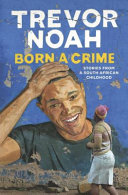 | Born a Crime Descriptionrevor Noah’s unlikely path from apartheid South Africa to the desk of The Daily Show began with a criminal act: his birth. Trevor was born to a white Swiss father and a black Xhosa mother at a time when such a union was punishable by five years in prison. Living proof of his parents’ indiscretion, Trevor was kept mostly indoors for the earliest years of his life, bound by the extreme and often absurd measures his mother took to hide him from a government that could, at any moment, steal him away. Finally liberated by the end of South Africa’s tyrannical white rule, Trevor and his mother set forth on a grand adventure, living openly and freely and embracing the opportunities won by a centuries-long struggle. Born a Crime is the story of a mischievous young boy who grows into a restless young man as he struggles to find himself in a world where he was never supposed to exist. It is also the story of that young man’s relationship with his fearless, rebellious, and fervently religious mother—his teammate, a woman determined to save her son from the cycle of poverty, violence, and abuse that would ultimately threaten her own life. The stories collected here are by turns hilarious, dramatic, and deeply affecting. Whether subsisting on caterpillars for dinner during hard times, being thrown from a moving car during an attempted kidnapping, or just trying to survive the life-and-death pitfalls of dating in high school, Trevor illuminates his curious world with an incisive wit and unflinching honesty. His stories weave together to form a moving and searingly funny portrait of a boy making his way through a damaged world in a dangerous time, armed only with a keen sense of humor and a mother’s unconventional, unconditional love. | Non-fiction | Satisfactory | DKK 30 | View on Vinted → |
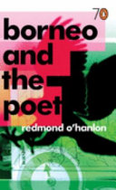 | Borneo and the Poet DescriptionIn May 2005 Penguin will publish 70 unique titles to celebrate the company's 70th birthday. The titles in the Pocket Penguins series are emblematic of the renowned breadth of quality of the Penguin list and will hark back to Penguin founder Allen Lane's vision of good books for all'. accompanied by the poet James Fenton, it was in the best tradition of nineteenth-century exploration. They were armed with backbreaking kit suitable to surviving two months in a steaming jungle of creeping, crawling and biting things; their heads brimmed with training provided by the SAS; and O'Hanlon himself had an encyclopedic knowledge of the region's flora and fauna. And yet they proceeded to have an adventure that neither O'Hanlon, his poet friend nor his guides were quite prepared for | Non-fiction | Very Good | DKK 45 | View on Vinted → |
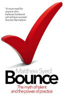 | Bounce DescriptionWhat are the real secrets of sporting success, and what lessons do they offer about life? Why doesn’t Tiger Woods “choke”? Why are the best figure skaters those that have fallen over the most and why has one small street in Reading produced more top table tennis players than the rest of the country put together. Two-time Olympian and sports writer and broadcaster Matthew Syed draws on the latest in neuroscience and psychology to uncover the secrets of our top athletes and introduces us to an extraordinary cast of characters, including the East German athlete who became a man, and her husband – and the three Hungarian sisters who are all chess grandmasters. Bounce is crammed with fascinating stories and statistics. Looking at controversial questions such as whether talent is more important than practice, drugs in sport (and life), the mind-bending Bounce is a must-read for the hardened sports nut or brand new convert. Genres Nonfiction Psychology Self Help Business Science Personal Development Sports | Non-fiction | Good | DKK 50 | View on Vinted → |
Brighter DescriptionIf you think we are doomed, think again: we can meet our environmental challenges and build a brighter future with clean technology. Up until now, human progress and prosperity has come at a terrible cost to the natural world. Everywhere we look we see environmental devastation, and the looming threat of climate change casts our very future into doubt. Many believe our only option is to make massive cutbacks, to downgrade prosperity, to shrink the global economy by half or more. But this would only exchange an ecological catastrophe for a social one. If we truly face a no-win scenario, is it any wonder pessimism is so widespread? Brighter explains that a very different future lies ahead of us. Adam Dorr is an environmental scientist, technology theorist, and Director of Research at the renowned think tank RethinkX. In this groundbreaking book, Dr. Dorr explains that technological disruptions are already underway that will radically transform energy, transportation, food, and labor. The clean new technologies will wipe out older, dirtier technologies, foster unprecedented prosperity, and open the door to mitigating environmental impacts and restoring ecological integrity at a planetary scale - including solving climate change. With clear explanations based on the pioneering work of RethinkX, Brighter offers an antidote to pessimism and false hope by giving us compelling reasons for optimism grounded in data, challenging us to reimagine environmentalism for the 21st Century. "Brighter shows that clean technology disruptions happening today are the key to solving our greatest environmental challenges. This is optimism grounded in science and facts, not wishful thinking - an important and profoundly inspiring book that will change the way you see humanity's future." - TONY SEBA "They say it's always darkest right before dawn, and Adam Dorr's immensely encouraging book Brighter is slam dunk evidence of that in today's world. In field after field, once impossible… | Non-fiction | Good | DKK 50 | View on Vinted → | |
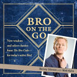 | Bro on the Go DescriptionTHE BRO CODE provides men with all the rules they need to know in order to become a "bro" and behave properly among other bros. THE BRO CODE has never been published before. Few know of its existence, and the code, until now, has been verbally communicated between those in the 'bro'. Containing approximately 150 "unspoken" rules, this code of conduct ranges from the simple (bros before hos) to the complex (the hot-to-crazy ratio, complete with bar graphs and charts). With helpful sidebros THE BRO CODE will help any ordinary guy become the best bro he can be. Let ultimate bro and co-author Barney Stinson and his book, THE BRO CODE share their wisdom, lest you be caught making eye contact in a devil's three-way (two dudes, duh.) Sample Articles from THE BRO CODE: Article 1: Regardless of veracity, a Bro never admits familiarity with a Broadway show or musical. Article 53: A Bro will, whenever possible, provide his Bro with prophylactic protection.Article 57: A Bro may not speculate on the expected Bro / chick ratio of a party or venue without first disclosing the present-time observed ratio. | Fiction | Good | DKK 35 | View on Vinted → |
Building an Inclusive Organization: Leveraging the Power of a Diverse Workforce DescriptionBusiness Book Awards 2020 - An Exceptional Book That Promotes Diversity Category CMI Management Book of the Year 2020 - Society Transformed Category A diverse workforce is a business imperative. Without it, companies are made up of employees who come from the same background and have the same skills and, therefore, the same blind spots. A diverse workforce brings together different strengths, a variety of experiences, a huge breadth of knowledge and a wealth of creative problem-solving techniques. However, in order to leverage the benefits of this diverse workforce, businesses must be inclusive. Inclusion ensures that employees feel supported, are treated fairly and are therefore happier, more engaged and more productive. Building an Inclusive Organization is a practical guide to creating an environment of real inclusion. It explains how to remove unconscious bias from company processes including recruitment and selection, how to make the case for diversity and inclusion to all stakeholders and how to embed inclusion into an organization's culture and overall business strategy. Packed with case studies from organizations including KPMG, Uber, Salesforce, Harvard University and the UK National Health Service (NHS), Building an Inclusive Organization shows how to implement robust processes and policies to foster diversity and inclusion in organizations of any size, and in all sectors, including the creative industry, finance, tech, and academia and foundations. Guidance and advice is also provided on how to use 'nudges' to change behaviours and overcome bias, how to achieve transparency and accountability, and how to measure, review and evaluate inclusion. | Non-fiction | Very Good | DKK 50 | View on Vinted → | |
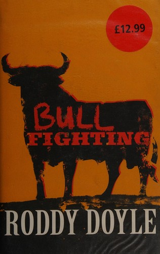 | Bullfighting DescriptionThe men in Bullfighting are each concerned with loss in different ways - of their place in their world, of power, virility, love - of the boom days and the Celtic Tiger. 'His memories, were wearing out,' the narrator of the title story thinks, 'and there was nothing new replacing them.' The stories move from classrooms to graveyards, local pubs to bullrings; featuring an array of men at their working day and at rest, taking stock and reliving past glories. In the first, 'Recuperation', a man sets off for a prescribed walk around his neighbourhood, the sights triggering memories and recollections of his wife, his children, his younger days. In 'Animals', George remembers caring for his children's many pets, his efforts to spare them grief when they die or disappear, looking, in the eyes of his wife, like a hero, like 'your man from ER'. But now his kids are reared and he's unemployed, and he's slowly getting used to that. Brilliantly observed, funny and moving, the stories in Bullfighting present a new vision of contemporary Ireland, of its woes and triumphs, and of the Irish middle-aged male confronting its new realities. It is a masterful new collection from one of the country's greatest writers. Genres Short Stories Fiction Irish Literature Ireland Contemporary Humor | Fiction | Very Good | DKK 50 | View on Vinted → |
Bunny Munros død : roman DescriptionBunny Munro, rejsende i lotion og cremer, er ifølge egen opfattelse en utrolig charmerende fyr som kvinder slet ikke kan stå for. Hans liv udarter imidlertid til en vild rutsjetur fuld at sprut, begær og skyld – en flugt fra jaloux ægtemænd, psykopatiske mordere og hævngerrige spøgelser – og med døden som uundgåelig endestation. Højpotent underholdning om en liderlig antihelt der kommer helt ud af kontrol. En rørende historie om en far hvis dage er talte, og en søn der har hele livet for sig. | Fiction | Very Good | DKK 35 | View on Vinted → | |
Business Model Generation DescriptionBusiness Model Generation is a handbook for visionaries, game changers, and challengers striving to defy outmoded business models and design tomorrow's enterprises. If your organization needs to adapt to harsh new realities, but you don't yet have a strategy that will get you out in front of your competitors, you need Business Model Generation. Co-created by 470 "Business Model Canvas" practitioners from 45 countries, the book features a beautiful, highly visual, 4-color design that takes powerful strategic ideas and tools, and makes them easy to implement in your organization. It explains the most common Business Model patterns, based on concepts from leading business thinkers, and helps you reinterpret them for your own context. You will learn how to systematically understand, design, and implement a game-changing business model--or analyze and renovate an old one. Along the way, you'll understand at a much deeper level your customers, distribution channels, partners, revenue streams, costs, and your core value proposition. Business Model Generation features practical innovation techniques used today by leading consultants and companies worldwide, including 3M, Ericsson, Capgemini, Deloitte, and others. Designed for doers, it is for those ready to abandon outmoded thinking and embrace new models of value creation: for executives, consultants, entrepreneurs, and leaders of all organizations. If you're ready to change the rules, you belong to "the business model generation!" | Non-fiction | Very Good | DKK 50 | View on Vinted → | |
Business Network Transformation DescriptionIn order to defend themselves against commoditization and disruptive innovation, leading companies are now gaining competitive advantage through networked business models and tapping into talent from outside their company. Rather than implementing rigid "built-to-last" processes, organizations are now constructing more fluid "built-to-adapt" networks in which each member focuses on its differentiation and relies increasingly on its partners, suppliers, and customers to provide the rest. With contributions by the biggest names in business network transformation, this book offers cutting edge research and an in-depth exploration of critical topics such as customer value, supply networks, product leadership, global processes, operations, innovation, relationship management, and IT. The book also provides practical guidance for successfully engaging in BNT, and is filled with illustrative case studies from some of the world's largest and most successful companies. It contains the vital information business leaders need to enable their companies to deliver faster innovation to customers at lower cost by sharing investments, assets, and ideas across their business networks. An essential resource for all business leaders, Business Network Transformation shows how to transform any business network to achieve competitive advantage and increase the bottom line. All royalties from this book will be donated to the World Food Programme, the United Nations' frontline agency in the fight against global hunger, which reaches an average of 100 million people in 80 countries every year. www.wfp.org | Non-fiction | Very Good | DKK 50 | View on Vinted → | |
Careless People: A Story of Where I Used to Work DescriptionHardcover Shocking and darkly funny, Careless People gives you a front-row seat to the decisions that are shaping our world and the people who make them. Welcome to Facebook. Sarah Wynn-Williams, a young diplomat from New Zealand, pitched for her dream job. She saw Facebook’s potential and knew it could change the world for the better. But, when she got there and rose to its top ranks, things turned out a little different. From wild schemes cooked up on private jets to risking prison abroad, Careless People exposes both the personal and political fallout when boundless power and a rotten culture take hold. In a gripping and often absurd narrative, Wynn-Williams rubs shoulders with Mark Zuckerberg, Sheryl Sandberg and world leaders, revealing what really goes on among the global elite – and the consequences this has for all of us. Candid and entertaining, this is an intimate memoir set amid powerful forces. As all our lives are upended by technology and those who control it, Careless People will change how you see the world. | Non-fiction | Very Good | DKK 150 | View on Vinted → | |
Carried Away : The Invention of Modern Shopping DescriptionAsserting that a history of shopping was, until recently, a history of women, Rachel Bowlby trains her eye on the evolution of the modern shopper. She uses a compelling blend of history, literary analysis, and cultural criticism to explore the rise of department stores and supermarkets of the United States, France, and Great Britain.Bowlby recalls the fascinating early days of these institutions. In the mid-nineteenth century, when department stores first developed, their fabulous new buildings brought middle-class women into town, where they could indulge in what was then a new a day's shopping. The stores offered luxury, flattering women into believing that they belonged in a beautiful environment. It is here, Bowlby argues, that the idea of the modern woman's passion for fashion and shopping took hold.Developed in the twentieth century, supermarkets took an opposite they offered functionality, standardization, and cheapness. However, Bowlby claims, despite their differences, the two institutions belong together as emblematic of their respective eras' social the department store with the growth of cities, the supermarket with the proliferation of suburbs. With their dazzling lights and displays, both supermarkets and department stores were thought to produce in females an enhanced or trance-like state of mind.For readers who regard shopping as a spectator or participatory sport, and for those who wish to understand our culture and the psychology of women, or those who simply enjoy a witty, literate romp through the aisles, Carried Away is the perfect purchase. | Non-fiction | Good | DKK 50 | View on Vinted → | |
Caught Between A Dream and A Job DescriptionIt’s Time to Hire Yourself! Delatorro McNeal wants to help you move from “just a paycheck” to a life of significance, meaning, and excitement; a life of hope and expectation. Through the interactive questions and activities, motivating quotes, and realistic and doable transition strategies. Caught Between a Dream and a Job will help you discover all that is possible for you as you learn · Define true success for yourself· Frame your work around your life—instead of the other way around· Become the person that you have always wanted to be by setting the extraordinary as your new standard· Systematically move from job living to dream living· Do what you love to do—and get paid to do it Your work was never meant to be just a job. You are a blessed, uniquely special individual with tremendous gifts, talents, abilities, and skills that were designed to solve problems and transform lives in this world. Get started today and discover the life you were made for! | Non-fiction | Very Good | DKK 50 | View on Vinted → | |
Change by design DescriptionThe myth of innovation is that brilliant ideas leap fully formed from the minds of geniuses. The reality is that most innovations come from a process of rigorous examination through which great ideas are identified and developed before being realized as new offerings and capabilities. This book introduces the idea of design thinking‚ the collaborative process by which the designer′s sensibilities and methods are employed to match people′s needs not only with what is technically feasible and a viable business strategy. In short‚ design thinking converts need into demand. It′s a human−centered approach to problem solving that helps people and organizations become more innovative and more creative. Design thinking is not just applicable to so−called creative industries or people who work in the design field. It′s a methodology that has been used by organizations such as Kaiser Permanente to icnrease the quality of patient care by re−examining the ways that their nurses manage shift change‚ or Kraft to rethink supply chain management. This is not a book by designers for designers; this is a book for creative leaders seeking to infuse design thinking into every level of an organization‚ product‚ or service to drive new alternatives for business and society. Genres Design Business Nonfiction Leadership Management Professional Development Entrepreneurship | Non-fiction | Very Good | DKK 55 | View on Vinted → | |
Change by Design: How Design Thinking Transforms Organizations and Inspires Innovation DescriptionThe subject of “design thinking” is the rage at business schools, throughout corporations, and increasingly in the popular press—due in large part to work of IDEO, a leading design firm, and its celebrated CEO, Tim Brown, who uses this book to show how the techniques and strategies of design belong at every level of business. The myth of innovation is that brilliant ideas leap fully formed from the minds of geniuses. The reality is that most innovations come from a process of rigorous examination through which great ideas are identified and developed before being realized as new offerings and capabilities. Change by Design explains design thinking, the collaborative process by which the designer’s sensibilities and methods are employed to match people’s needs, not only with what is technically feasible, but what is viable to the bottom line. Design thinking converts need into demand. It’s a human-centered approach to problem solving that helps people and organizations become more innovative and more creative. Introduced a decade ago, the concept of design thinking remains popular at business schools, throughout corporations, and increasingly in the popular press—due in large part to work of IDEO, the undisputed world leading strategy, innovation, and design firm headed by Tim Brown. As he makes clear in this visionary guide—now updated with addition material, including new case studies, and a new introduction—design thinking is not just applicable to so-called creative industries or people who work in the design field. It’s a methodology that has been used by organizations such as Kaiser Permanente, to increase the quality of patient care by re-examining the ways that their nurses manage shift change, or Kraft, to rethink supply chain management. Change by Design is not a book by designers for designers; it is a book for creative leaders seeking to infuse design thinking into every level of an organization, product, or service to drive new alternatives for business… | Non-fiction | Very Good | DKK 100 | View on Vinted → | |
Chirunning DescriptionA groundbreaking program that teaches you how to run faster and farther with less effort, and prevent and heal injuries, for runners of any age or fitness level. In ChiRunning, Danny and Katherine Dreyer, well-known walking and running coaches, provide powerful insight that transforms running from a high-injury sport to a body-friendly, injury-free fitness phenomenon. ChiRunning employs the deep power reserves in the core muscles, an approach found in disciplines such as yoga, Pilates, and T'ai Chi. ChiRunning enables you to develop a personalized exercise program by blending running with the powerful mind-body principles of T’ai Chi: 1. Get aligned. Develop great posture and reduce your potential for injury while running, and make knee pain and shin splints a thing of the past. 2. Engage your core. Shift the workload from your leg muscles to your core muscles, for efficiency and speed. 3. Add relaxation to your running. Learn to focus your mind and relax your body to increase speed and distance. 4. Make it a Mindful Practice. Maintain high performance and make running a mindful, enjoyable life-long practice. 5. It's easy to learn. Transform your running with the 10-step ChiRunning training program. | Non-fiction | Very Good | DKK 60 | View on Vinted → | |
Click: What We Do Online and Why It Matters DescriptionIn one short decade, the internet has become a critical part of our everyday lives. In this timely new book, internet data analysis expert Bill Tancer makes sense of why this is, and reveals what our internet usage says about us and our future ... because asking people what they do is never as reliable as watching what they do. In Click, Bill Tancer takes us behind the scenes into the massive database of online intelligence to reveal the naked truth about how we use the web, navigate to sites and search for information; he describes in unmatched detail explanations about our lives, our interests, our thoughts, our fears and our dreams. As online directories replace the yellow pages, search engines replace traditional research and news sites replace newsprint, we live in an age in which we've come to rely tremendously on the internet for many purposes. Through our usage, we leave behind an amazing trail of information about ourselves - our "clickstream" - and the direction in which we are headed that Click exposes and explains here for the first time. | Fiction | Good | DKK 30 | View on Vinted → | |
Clockwork Angel DescriptionThe first novel in the Infernal Devices trilogy--a prequel to the "New York Times"-bestselling Mortal Instruments series. The year is 1878. Tessa Gray descends into Victorian London's dark underworld to search for her missing brother, with the mysterious Shadowhunters as her only allies. Magic is dangerous — but love is more dangerous still When sixteen-year-old Tessa Gray crosses the ocean to find her brother, her destination is England, the time is the reign of Queen Victoria, and something terrifying is waiting for her in London's Downworld, where vampires, warlocks and other supernatural folk stalk the gaslit streets. Friendless and hunted, Tessa seeks refuge with the Shadowhunters, a band of warriors dedicated to ridding the world of demons. Drawn ever deeper into their world, she finds herself fascinated by — and torn between — two best friends and quickly realizes that love may be the most dangerous magic of all. Genres Fantasy Young Adult Romance Paranormal Steampunk Historical Fiction Fiction | Kids & young adults | Good | DKK 30 | View on Vinted → | |
Coin Locker Babies DescriptionA surreal coming-of-age tale that establishes Ryu Murakami as one of the most inventive young writers in the world today. Abandoned at birth in adjacent train station lockers, two troubled boys spend their youth in an orphanage and with foster parents on a semi-deserted island before finally setting off for the city to find and destroy the women who first rejected them. Both are drawn to an area of freaks and hustlers called Toxitown. One becomes a bisexual rock singer, star of this exotic demimonde, while the other, a pole vaulter, seeks his revenge in the company of his girlfriend, Anemone, a model who has converted her condominium into a tropical swamp for her pet crocodile. Together and apart, their journey from a hot metal box to a stunning, savage climax is a brutal funhouse ride through the eerie landscape of late-twentieth-century Japan. Genres Fiction Japan Japanese Literature Horror Contemporary Novels Thriller | Fiction | Very Good | DKK 150 | View on Vinted → | |
Cold DescriptionThere are only few human beings who can adapt, survive and thrive in the coldest regions on earth. And below a certain temperature, death is inevitable. Sir Ranulph Fiennes has spent much of his life exploring and working in conditions of extreme cold. The loss of many of his fingers to frostbite is a testament to the horrors man is exposed to at such perilous temperatures. With the many adventures he has led over the past 40 years, testing his limits of endurance to the maximum, he deservedly holds the title of 'the world's greatest explorer'. Despite our technological advances, the Arctic, the Antarctic and the highest mountains on earth, remain some of the most dangerous and unexplored areas of the world. This remarkable book reveals the chequered history of man's attempts to discover and understand these remote areas of the planet, from the early voyages of discovery of Cook, Ross, Weddell, Amundsen, Shackleton and Franklin to Sir Ranulph's own extraordinary feats; from his adventuring apprenticeship on the Greenland Ice Cap, to masterminding over the past five years the first crossing of the Antarctic during winter, where temperatures regularly plummeted to minus 92ºC. Both historically questioning and intensely personal, Cold is a celebration of a life dedicated to researching and exploring some of the most hostile and brutally cold places on earth. | Non-fiction | Good | DKK 40 | View on Vinted → | |
Cold Skin DescriptionShortly after World War I, a troubled man accepts a solitary assignment as a "weather official" on a tiny, remote island on the edges of the Antarctic. When he arrives, the predecessor he is meant to replace is missing and a deeply disturbed stranger is barricaded in a heavily fortified lighthouse. At first adversaries, the two find that their tenuous partnership may be the only way they survive the unspeakably horrific reptilian creatures that ravage the island at night, attacking the lighthouse in their organized effort to find warm-blooded food. Armed with a battery of ammunition and explosives, the weather official and his new ally must confront their increasingly murderous mentality, and, when the possibility of a kind of truce presents itself, decide what kind of island they will inhabit. Equal parts Stephen King, a phantasmagorical Robinson Crusoe, and Lord of the Flies, Cold Skin is literary horror that deals with the basest forms of human behavior imaginable, while exploring why we so vehemently fear the Other. Genres Horror Fiction Fantasy Science Fiction Mystery Thriller Spanish Literature | Fiction | Good | DKK 60 | View on Vinted → | |
Collected Ghost Stories DescriptionM.R. James is probably the finest ghost-story writer England has ever produced. These tales are not only classics of their genre, but are also superb examples of beautifully-paced understatement, convincing background and chilling terror. As well as the preface, there is a fascinating tail-piece by M.R. James, ‘Stories I Have Tried To Write’, which accompanies these thirty tales. Among them are ‘Casting the Runes’, ‘Oh, Whistle and I’ll come to you, My Lad’, ‘The Tractate Middoth’, ‘The Ash Tree’ and ‘Canon Alberic’s Scrapbook’. Genres Horror Short Stories Classics Fiction Gothic Ghost Stories Ghosts | Fiction | Good | DKK 75 | View on Vinted → | |
Compilers DescriptionCompilers: Principles, Techniques and Tools (known to professors, students and developers worldwide as “the Dragon Book"). This book provides the foundation for understanding the theory and pracitce of compilers. Revised and updated, it reflects the current state of compilation. The authors, recognizing that few readers will ever go on to construct a compiler, retain their focus on the broader set of problems faced in software design and software development. Computer scientists, developers, & and aspiring students that want to learn how to build, maintain, and execute a compiler for a major programming language. | Non-fiction | Good | DKK 150 | View on Vinted → | |
Cork Rock: From Rory Gallagher To The Sultans Of Ping DescriptionMark McAvoy explores the history of Cork rock music from the early days of legendary blues-rock guitarist Rory Gallagher in the 1960s through the Finbarr Donnelly-led punk era of the 1980s, to local indie legends The Frank And Walters and the irrepressible Sultans Of Ping. Cork Rock: From Rory Gallagher To The Sultans Of Ping explores the records, venues, personalities and culture that sprang up around rock music in Ireland's second city. Delving deep into the stories behind seminal Cork acts such as Taste, Five Go Down To The Sea? and Microdisney, this book traces the careers of many of the city's most popular and talented musicians. With exclusive photographs and interviews with leading performers, managers, DJs and promoters, Cork Rock: From Rory Gallagher To The Sultans Of Ping is essential reading for all true music fans. Mark McAvoy is a Cork-born journalist and author. He is a graduate of University College Cork and holds an MA in Public Relations from the Dublin Institute of Technology. A life-long music fan, Mark has written for the Evening Echo's 'Downtown' music and entertainment supplement for more than ten years and has contributed to a range of publications including Village, NME and Alternative Ulster. | Non-fiction | Good | DKK 60 | View on Vinted → | |
Crush It!: Why Now Is the Time to Cash In on Your Passion DescriptionDo you have a hobby you wish you could indulge in all day? An obsession that keeps you up at night? Now is the perfect time to take that passion and make a living doing what you love. In Crush It! Why NOW Is the Time to Cash In on Your Passion, Gary Vaynerchuk shows you how to use the power of the Internet to turn your real interests into real businesses. Gary spent years building his family business from a local wine shop into a national industry leader. Then one day he turned on a video camera, and by using the secrets revealed here, transformed his entire life and earning potential by building his personal brand. By the end of this book, readers will have learned how to harness the power of the Internet to make their entrepreneurial dreams come true. Step by step, Crush It! is the ultimate driver’s manual for modern business. 142 pages, Hardcover | Non-fiction | Good | DKK 25 | View on Vinted → | |
Darwin Comes to Town DescriptionWe are marching towards a future in which three-quarters of humans live in cities, more than half of the landmass of the planet is urbanized, and the rest is covered by farms,pasture, and plantations. Increasingly, as we become ever more city-centric, species and ecosystems crafted by millions of years of evolution teeter on the brink of extinction - or have already disappeared. A growing band of 'urban ecologists' is beginning to realize that natural selection is not so easily stopped. They are finding that more and more plants and animals are adopting new ways of living in the seemingly hostile environments of asphalt and steel that we humans have created. Carrion crows in the Japanese city of Sendai, for example, have learned to use passing traffic to crack nuts for them; otters and bobcats, no longer persecuted by humans, are waiting at the New York City gates; superb fairy-wrens in Australia have evolved different mating structures for nesting in strips of vegetation along roads; while distinct populations of London underground mosquitoes have been fashioned by the varied tube line environments. Menno Schilthuizen shows us that evolution can happen far more rapidly than Darwin had dared dream. | Non-fiction | Good | DKK 60 | View on Vinted → | |
Data Driven DescriptionA "how-to" guide to boosting sales through predictive and prescriptive analytics Data Driven is a uniquely practical guide to increasing sales success, using the power of data analytics. Written by one of the world's leading authorities on the topic, this book shows you how to transform the corporate sales function by leveraging big data into better decision-making, more informed strategy, and increased effectiveness throughout the organization. Engaging and informative, this book tells the story of a newly hired sales chief under intense pressure to deliver higher performance from her team, and how data analytics becomes the ultimate driver behind the sales function turnaround. Each chapter features insightful commentary and practical notes on the points the story raises, and one entire chapter is devoted solely to laying out the Prescriptive Action Model step-by-step giving you the actionable guidance you need to put it into action in your own organization. Predictive and prescriptive analytics is poised to change corporate sales, and companies that fail to adapt to the new realities and adopt the new practices will be left behind. This book explains why the Prescriptive Action Model is the key corporate sales weapon of the 21st Century, and how you can implement this dynamic new resource to bring value to your business. Exploit one of the last remaining sources of competitive advantage Re-engineer the sales function to optimize success rates Implement a more effective analytics model to drive efficient change Boost operational effectiveness and decision making with big data There are fewer competitive edges to gain than ever before. The only thing that's left is to execute business with maximum efficiency and make the smartest business decisions possible. Predictive analytics is the essential method behind this new standard, and Data Driven is the practical guide to complete, efficient implementation. | Non-fiction | Very Good | DKK 100 | View on Vinted → | |
Day DescriptionThe New York Times has called her “a world-class fiction writer.” One of Britain’s most iconoclastic and highly acclaimed young writers (“If you are at all interested in contemporary fiction, this is work you must not miss”—Richard Ford)—twice selected as one of Granta’s Best Young British Novelists, winner of the Somerset Maugham Award, the Encore Award and the Saltire Scottish Book of the Year Award—A. L. Kennedy now gives us a brilliant new novel about war for which she is receiving the strongest reviews of her career. Alfie Day, RAF airman and former World War II POW, never expected to survive the war. He may not have even wanted to—choosing to be a tail gunner—exposed, alone and watchful for his skipper and his crew through night after night of bombing missions. Now, five years after the end of the war and more alone than ever, Alfie finds himself drawn to unearth those intense, strangely passionate days by working as an extra on a POW film. What he will discover on the set about himself, his loves and the world around him will make the war itself look simple. Day is a superbly realized, emotionally charged, deeply affecting drama about the violence of modern life, and the intensity and courage to be found in the closeness of death. Blazing with Kennedy’s characteristic virtuosity, wit and narrative invention, Day is funny and moving, wise and sad, a dazzlingly original performance from one of the most gifted writers of our time. Genres Fiction Historical Fiction Scotland War World War II | Fiction | Very Good | DKK 30 | View on Vinted → | |
Days of God: The Revolution in Iran and Its Consequences DescriptionA revelatory, myth-busting insider’s account of the Iranian Revolution of 1979 that details the escalating horror as Ayatollah Khomeini seized power, altering the course of history in the Middle East and the world. James Buchan was studying in Iran in the 1970s when the turmoil that culminated in the revolution began. Fluent in Persian, he draws on a wealth of Iranian records, memoirs, and newspaper reports and brings an extraordinary depth of knowledge and personal experience to the first full account of that tumultuous time. Buchan explores the roots of the revolution in the old regime and the role that American, British, and Russian interference played in creating fissures in the Shah’s base of power. He illuminates how even as the Iranian economy flourished, the Islamic clergy began to capture public loyalty, and argues that Ayatollah Khomeini was not the instigator of the first protests, as received wisdom stresses, and that religious frustration played a more important role. Buchan captures the wildly escalating violence and overheated passions that gripped the country, reaching a fevered pitch when Khomeini returned from exile and launched a reign of terror and mass executions that left no viable opposition to his rule. A dramatic, scene-by-scene account with rich characterizations of the leading players as well as of the ordinary Iranians who were swept into the maelstrom, Days of God is history writing at its vivid best. | Non-fiction | Good | DKK 60 | View on Vinted → | |
Den danske filosofis historie : fra reformationen til den moderne verden DescriptionTil alle tider og inden for alle kulturer har mennesket spekuleret over sin plads i tilværelsens mangfoldighed og årsagerne til de vilkår, dets liv er underkastet. Carl Henrik Koch udfolder her historien om den danske filosofi i bred forstand, da værket også omfatter naturfilosofi – i dag kaldet astronomi, fysik eller fysiologi. Den danske filosofis historie omhandler hele perioden fra reformationstiden i det 15. århundrede til den moderne verden. Værket består af fire dele: 1: Renæssancetanker. Dansk filosofi i reformationstiden og i renæssancen (16. og 17. århundrede), 2: Oplysningstanker. Dansk filosofi i det 18. århundrede, 3: Guldaldertanker. Dansk filosofi i det 19. århundrede og 4: Moderne tanker. Dansk filosofi i det 20. århundrede. Værket indeholder et omfattende noteapparat og register. Værket er en gennemskrevet og forkortet udgave af Carl Henrik Kochs hovedværk; de tre og et halvt bind, der indgår i hans og Sten Ebbesens fembindsværk "Den danske filosofis historie" fra 2002-2004. | Non-fiction | Very Good | DKK 200 | View on Vinted → | |
Det dyrebare : roman 🇩🇰 DescriptionGenudgivelse i ny udgave. Jon Dreyers liv er ved at revne. Hans store litterære projekt skulle egentlig fuldføres for flere år siden. Han kæmper med skriveblokering og er sin kone utro. Alt begyndte, tænker han, da familiens barnepige, den nitten år gamle Mille, forsvandt uden et spor for så at blive fundet død to år senere. Jons kone, Siri Dreyer-Brodal, er en populær kok og restaurantejer, som har sit at kæmpe med. Ikke bare er hun gift med en troløs mand. Hun slås også med, hvordan skal hun forholde sig til sin på en gang stærke og utrøstelige mor, Jenny Brodal, som er begyndt at drikke igen efter 20 års ædruelighed. Og hverken Jon eller Siri aner, hvordan de skal håndtere deres uforudsigelige og uregerlige datter, Alma. Milles forsvinden, og uvisheden om hvad der skete, præger hele familien. Isnende langsomt afdækkes en historie om kærlighed og grådighed, hemmelige liv og smertefulde forbindelser. Det dyrebare er en besættende, kulsort og humoristisk roman om sorg og overlevelse, om en familie som bliver offer for sine egne hemmeligheder og om en brutal forbrydelse. | Fiction | Very Good | DKK 25 | View on Vinted → | |
Det jeg elskede DescriptionTo familier - kunstnere og intellektuelle - er naboer i et hus i SoHo i New York og deler både stor glæde og dyb sorg. Med indblik i såvel den kreative proces som personlige dramaer gives et nuanceret billede af New Yorks kunstnermiljø - fra de eksklusive galleriers glimmer til seksuel perversion og mord. Med Det jeg elskede har Siri Hustvedt skrevet en stor eksistentiel roman. Siri Hustvedts litteratur er smuk, elegant, velovervejet og intellektuel (...) Kunstnerroman, kriminalroman, kærlighedsroman, filosofisk roman, essayroman, skæbnefortælling, thriller. Den begærlige læser kan bare komme an. Bogen har det hele." Klaus Rothstein i Weekendavisen Siri Hustvedts nyeste roman, den tredje i rækken, er rasende begavet, gnistrende intens, sønderrivende smertelig og betagende gådefuld i hele sin overvældende og meget, meget krævende kompleksitet. Den er formidabel, simpelthen!" Henriette Bacher Lind i Jyllandsposten Siri Hustvedt kan skrive de fleste forfattere sønder og sammen (...) Blændende begavet afdækker hun fortællingen om livet og det sårede menneskesind og formidler suverænt sine personers følelser og tanker, så læseren går i knæ. En uafrystelig læseoplevelse." Lone Dueholm i IN | Fiction | Very Good | DKK 30 | View on Vinted → | |
Dinner at the Center of the Earth DescriptionPulitzer finalist Nathan Englander weaves a suspenseful portrait of the Israeli-Palestinian conflict, and dramatizes the immense moral ambiguities haunting both sides. The story pivots on the complex relationship between a secret prisoner and his guard, and begs the who is right, who is wrong - who is the guard, who is truly the prisoner? Genres Fiction Historical Fiction | Fiction | Very Good | DKK 50 | View on Vinted → | |
Disney Cruella: The Manga: Black, White, and Red DescriptionAn adaptation to Disney's all-new live action feature film of a notoriously fashionable villain, the legendary Cruella de Vil. You don’t become a legend by being nice. She wasn’t born Cruella. Gifted with talent, innovation, and ambition, Estella dreamed of becoming a fashion designer, but the world seemed intent on making sure her dreams would never come true. The life of an amateur thief is hardly a glamourous one, but in 1970s London, at the crossroads of fashion, Estella has a vision for herself and her designs, if only she can afford it! Witness Estella’s life on the streets with her best friends and partners in (petty) crime, Horace and Jasper, before the infamous diva Cruella emerges to make sure no one gets in her way! Genres Manga Graphic Novels Young Adult Comics Retellings Fiction Graphic Novels Comics | Comics, manga & graphic novels | Very Good | DKK 110 | View on Vinted → | |
Dogs - a - Porter DescriptionA Prada for your Pekingese ? A Louis Vuitton for your Lhasa Apso ? Maybe a Burberry for your Bichon ? High fashion, name-brand handbags have never been hotter....and can be spied regularly, in London, Paris, Milan and New York, carrying utterly adorable, cute small dogs. This delightful, and beautifully-produced, book celebrates that irresistible combination with photos collected for their charm, chic and urbane humour. It's the perfect, smart, gift for real West-End girls ! | Non-fiction | Very Good | DKK 110 | View on Vinted → | |
Doing interviews DescriptionInterviewing is an invaluable tool for the qualitative researcher. Steinar Kvale provides coverage of both the theoretical background and the practical aspects of the interview process, incorporating discussion of the wide variety of methods in interview based research and the different approaches to reading the data. Consideration is also given to the crucial issue of how to ensure scientific rigour. GenresResearchNonfiction | Non-fiction | Good | DKK 50 | View on Vinted → | |
Don't Stop Me Now DescriptionThere's more to life than cars. Jeremy Clarkson knows this. There is, after all a whole world out there just waiting to be discovered. So, before, he gets on to torque steer and active suspension, he takes time to consider: the madness of Galapagos tortoises; the similarities between Jeremy Paxman and AC/DC's bass guitarist; the problems and perils of being English; God's dumbest creation. Then there are the the cars: whether it's the poxiest little runabout or an exotic, firebreathing supercar, no one does cars like Clarkson. Unmoved by mechanics' claims and unimpressed by press junkets, he approaches anything on four wheels without fear or favour. What emerges from the ashes is rarely pretty. But always very, very funny. | Non-fiction | Very Good | DKK 20 | View on Vinted → | |
Dragons of Autumn Twilight DescriptionDragonlance: Chronicles #1 This Dungeons & Dragons-inspired fantasy adventure is the first installment in the beloved Dragonlance Chronicles, set in the magical world of Krynn. Once merely creatures of legend, the dragons have returned to Krynn. But with their arrival comes the departure of the old gods—and all healing magic. As war threatens to engulf the land, lifelong friends reunite for an adventure that will change their lives and shape their world forever . . . When Tanis, Sturm, Caramon, Raistlin, Flint, and Tasslehoff see a woman use a blue crystal staff to heal a villager, they wonder if it's a sign the gods have not abandoned them after all. Fueled by this glimmer of hope, the Companions band together to uncover the truth behind the gods' absence—though they aren't the only ones with an interest in the staff. The Seekers, a new religious order, wants the artifact for their own ends, believing it will help them replace the gods and overtake the continent of Ansalon. Now, the Companions must assume the unlikely roles of heroes if they hope to prevent the staff from falling into the hands of darkness. Lifelong friends, they went their separate ways. Now they are together again, though each holds secrets from the others in his heart. They speak of a world shadowed with rumors of war. They speak of tales of strange monsters, creatures of myth, creatures of legend. They do not speak of their secrets. Not then. Not until a chance encounter with a beautiful, sorrowful woman, who bears a magical crystal staff, draws the companions deeper into the shadows, forever changing their lives and shaping the fate of the world. No one expected them to be heroes. Least of all, them. | Fiction | Good | DKK 100 | View on Vinted → | |
Dragons of Spring Dawning DescriptionDragonlance: Chronicles #3 Will truth and virtue triumph over the deadly darkness of an all-consuming evil? The war against the dragon minions of Queen Takhisis rages on. Armed with the mysterious, magical Dragon Orbs and the shining, silver Dragonlance, the Companions of the Lance lead their people in a desperate final battle. Knight and barbarian, warrior and mage, dwarf and kender—no one has reckoned how high the price of defeat, or even victory, might be. But now, in the dawn of a new day, the dark secrets that have long shadowed the hearts of the Companions come to light. If they are to truly defeat the five-headed dragon goddess, they must find a way to overcome their own personal conflicts and doubts. From betrayal and treachery to fragility and weakness, the greatest battle now lies within each of them. Dragons of Spring Dawning is the third book in the Dragonlance Chronicles. | Fiction | Very Good | DKK 110 | View on Vinted → | |
Dream Home DescriptionIF YOU HAD NEVER OPENED THE DOOR, YOUR FAMILY WOULD BE SAFE . . . THE UNMISSABLE NEW THRILLER FROM THE SUNDAY TIMES BESTSELLING MASTER OF THE UP-ALL-NIGHT THRILLER Adam and Jess, along with their three children, move into a beautiful new home: a rambling Victorian house in a nice neighbourhood, right at the top of their price range. Then Adam discovers a door hidden behind a fitted wardrobe, concealing a secret room . . . But like the house, Adam has his secrets too. And soon he will find himself setting in motion a series of events that will place his family in terrible danger . . . Genres Thriller Mystery Fiction Crime Psychological Thriller Suspense | Fiction | Very Good | DKK 60 | View on Vinted → | |
Efterskælv: om ægteskab og skilsmisse DescriptionFra Rachel Cusk, der står bag den anmelderroste ‘Faye’-trilogi og “Et livsværk”, kommer “Efterskælv”, der er en fortælling om at miste og skulle finde fodfæste igen. I “Efterskælv” møder vi forfatteren i tiden efter hendes skilsmisse. Hun står midt i en livskrise med sine to døtre, som hun også skal finde ud af at være mor for. Hun skal opfinde sig selv på ny, for alle de forestillinger, hun havde om sig selv og sit liv, er blevet ødelagt sammen med skilsmissen. Hun kastes ud i en helt ny virkelighed, hvor hun står udenfor kernefamiliefællesskabet og det liv, som hendes venner lever. Hun skal samtidig finde en helt ny måde at leve på, trives på og udvikle sig på, og hvad med hendes kærlighedsliv? Vil hun være i stand til at møde en ny efter skilsmissen? “Efterskælv” er en fortælling fra Rachel Cusks eget liv, der i 2012 blev vendt op og ned, da hun gik fra faren til sine to børn. “Efterskælv” ser indad; på parforholdet, selvkærligheden og forældreskabet. Rachel Cusk formidler de store udfordringer og beslutninger, der kan opstå i kølvandet på en skilsmisse, og hvordan det kan påvirke alle aspekter af det liv, man troede varede evigt. | Fiction | Satisfactory | DKK 60 | View on Vinted → | |
Elastik DescriptionElastik er en roman om at være kvinde. Om at være kvinde mellem kvinder, mellem mænd og om at være alene med sin kvindekrop. Alice bryder sig ikke om at være kvinde. Hun føler sig fremmed i sin krop, med sit køn. På samme tid er Elastik også en moderne, høvisk kærlighedshistorie. Om Alices fortiede, men stormfulde forelskelse i den enigmatiske Mathilde. En forelskelse, der ikke findes plads til hverken i Alices forhold til kæresten Simon, til Mathildes mand Alexander eller i Alice selv. Johanne Bille har et nænsomt og nuanceret blik, når hun skriver denne forelskelse frem, men i beskrivelsen af, hvordan de to mænd bliver trofæagtige værktøjer i relationen mellem de to kvinder og i skildringen af det pompøse, grænsesøgende livs skyggesider er hun skånselsløs. Elastik handler om ikke at ville nøjes med at finde sig til rette – i parforholdet, i samfundet og i sig selv. Om at ville kærligheden og fællesskabet, men ikke kunne løsrive sig fra sin egen egoisme og narcissisme. Hvordan kan vi være sammen? Det spørgsmål bliver i Elastik til: hvordan bruger vi hinanden? Elastik er Johanne Billes anden roman. Hendes debutroman Tænk nu hvis udkom i 2015 på Tiderne Skifter | Fiction | Good | DKK 50 | View on Vinted → | |
Elleve minutter Description”For at skrive om seksualitetens hellige dimension måtte jeg forstå, hvordan den var blevet så vanhelliget.” –Paulo Coelho Maria, en ung og smuk kvinde fra en brasiliansk landsby, lader sig, efter at have mødt en schweizisk teaterdirektør, forføre af længslen efter et bedre liv. Hun flytter til Genève, hvor hun drømmer om et liv som rig og berømt, men ender i stedet som prostitueret. Hun forsøger at forstå livet og menneskets sjæl gennem flygtige relationer, indtil en ung maler får hende til at åbne øjnene for en ny form for bevidsthed. I denne selverkendelsens odyssé tvinges Maria til at træffe et afgørende valg: hun kan enten følge den mørke vej til seksuel tilfredsstillelse for dennes egen skyld eller sætte alt på spil for at finde sit eget ´indre lys´, og derved åbne for muligheden af at nå en ophøjet seksuel tilstand - den som er en del af kærligheden.”Hvis jeg ikke tænker på kærligheden, bliver jeg til ingenting”, skriver Maria, hovedpersonen i Elleve minutter, i sin dagbog. Elleve minutter bygger på en sand historie og er fortællingen om Maria, en ung kvinde fra en lille by i Brasilien. Hendes første møde med kærligheden bliver skæbnesvangert, og hun begynder at tro, at hun aldrig vil møde den ægte kærlighed. Da hun senere kommer til Genève, fører hendes drømme om rigdom og succes hende ud i prostitution. Med sin simple baggrund og begrænsede livserfaring har Marie kun lidt at stå imod med i dette hårde møde med virkeligheden. Mens hun drives stadig længere væk fra kærligheden, bliver hun stadig mere fascineret af fænomenet sex. Gennem den smertefulde vej til selvindsigt tvinges Maria til at vælge mellem den dyriske, fysiske lyst og at risikere alt for den lyse side af seksualiteten. Elleve minutter er en modig og gribende roman om kærlighedens og seksualitetens væsen som et instrument til at forstå sig selv. ”Paulo Coelho formår endnu en gang at røre sjælen … en bog om at få krop og sjæl til at gå op i en højere enhed.” –Søndag | Fiction | Very Good | DKK 25 | View on Vinted → | |
En amerikaners lidelser DescriptionEn New York-psykiater gennemgår sin afdøde fars papirer i håb om at lære den mand at kende, som han aldrig rigtig forstod. Det viser sig, at faderen åbenbart har haft dystre hemmeligheder i sit liv, og pludselig begynder ukendte truende personer også at interessere sig for hans papirer. | Fiction | Very Good | DKK 25 | View on Vinted → | |
En ud af hundrede: om unge og skizofreni DescriptionMed denne bog bliver du klogere på, hvad skizofreni egentlig er, og på hvordan du kan genkende tegnene. Bogen er skrevet til dig, der arbejder med sårbare mennesker, eksempelvis som mentor, socialrådgiver eller pædagog. For selvom skizofreni i gennemsnit rammer én ud af hundrede, er tallet højere hos socialt udsatte end hos de mere ressourcestærke. Det øger risikoen for, at symptomerne drukner i komplekse vanskeligheder som hjemløshed og misbrug, ligesom det understreger vigtigheden af, at vi, der arbejder med sårbare mennesker, kender de tidlige tegn. I bogen får du eksempler på gode spørgsmål, du kan stille, ligesom diagnosen oversættes til dagligdags adfærd og letforståelige billeder. På den måde bliver du mere sikker i din rolle, sådan at du hurtigere kan sikre den hjælp, der er så uendelig vigtig. Anne Cathrine Bomann (f. 1983) er uddannet psykolog fra Københavns Universitet i 2011 og siden autoriseret af Psykolognævnet. Hun har erfaring fra både social- og hospitalspsykiatrien og er i skrivende stund ansat i Københavns Kommune, hvor hun arbejder med udredning af komplekse sociale og psykiske vanskeligheder hos sårbare unge. | Non-fiction | Very Good | DKK 80 | View on Vinted → | |
Enchanted Objects DescriptionIn the tradition of Who Owns the Future? and The Second Machine Age, an MIT Media Lab scientist imagines how everyday objects can intuit our needs and improve our lives. We are now standing at the precipice of the next transformative development: the Internet of Things. Soon, connected technology will be embedded in hundreds of everyday objects we already use: our cars, wallets, watches, umbrellas, even our trash cans. These objects will respond to our needs, come to know us, and learn to think on our behalf. David Rose calls these devices—which are just beginning to creep into the marketplace—Enchanted Objects. Some believe the future will look like more of the same—more smartphones, tablets, screens embedded in every conceivable surface. Rose has a different vision: technology that atomizes, combining itself with the objects that make up the very fabric of daily living. Such technology will be woven into the background of our environment, enhancing human relationships and channeling desires for omniscience, long life, and creative expression. The enchanted objects of fairy tales and science fiction will enter real life. Groundbreaking, timely, and provocative, Enchanted Objects is a blueprint for a better future, where efficient solutions come hand in hand with technology that delights our senses. It is essential reading for designers, technologists, entrepreneurs, business leaders, and anyone who wishes to understand the future and stay relevant in the Internet of Things. | Non-fiction | Very Good | DKK 40 | View on Vinted → | |
Encyclopedia of Social and Cultural Anthropology DescriptionThis is the only encyclopedia of social and cultural anthropology to cover fully the many important areas of overlap between anthropology and related disciplines. This work also covers key terms, ideas and people, thus eliminating the need to refer to other books for specific definitions or biographies. Special features include: * over 230 substantial entries on every major idea, individual and sub-discipline of social and cultural anthropology * over 100 international contributors * a glossary of more than 600 key terms and ideas. | Textbooks & study materials | Good | DKK 75 | View on Vinted → | |
Endelig ikke-ryger! DescriptionFøler du, at det er på tide at kvitte smøgerne én gang for alle og i stedet gå ned ad den røgfrie vej, så er "Endelig ikke-ryger" uden tvivl bogen for dig. Allen Carr skal nemlig nok hjælpe dig på vej uden at gøre brug af hverken skræmmekampagner eller nikotintyggegummi. Allen Carr er en erfaren mand i forhold til selvhjælpsbøger og med over 11 millioner solgte eksemplarer verden over, har bogen hjulpet en masse mennesker. "Endelig ikke-ryger" gennemgår trin for trin baggrunden for rygning og hertil, hvordan du holder op med at ryge. | Non-fiction | Very Good | DKK 31 | View on Vinted → | |
Engleby DescriptionSebastian Faulks’s new novel is a bolt from the contemporary, demotic, angry, heart-wrenching, and funny, in the deepest shade of black. Mike Engleby says things that others dare not even think. A man devoid of scruple or self-pity, he rises without trace in Thatcher’s England and scorches through the blandscape of New Labour. In the course of his brief, incandescent career, he and the reader encounter many famous people — actors, writers, politicians, household names — but by far the most memorable is Engleby himself. Sebastian Faulks’s new novel can be read as a lament for a generation and the country it failed. It is also a meditation on the limits of science, the curse of human consciousness and on the lyrics of 1970s’ rock music. And beneath this highly disturbing surface lies an unfolding mystery of gripping narrative power. For when one of Mike’s contemporaries unaccountably disappears, the reader has to is even the shameless Engleby capable of telling the whole truth? | Fiction | Very Good | DKK 20 | View on Vinted → | |
Ethnography DescriptionThoroughly updated and substantially rewritten, the second edition of this popular textbook is now even more relevant and useful for students and researchers. In this accessible introduction to the methods of ethnographic fieldwork, Hammersley and Atkinson reconsider the status of ethnography and seek to place it quite explicitly in a general methodological context.Ethnographyprovides a systematic and coherent account of ethnographic principles and practices. From an outline of the principle of reflexivity the authors go on to discuss and exemplify the main features of ehtnographic work, such as the selection and sampling of cases, the problems of access, observation and interviewing, recording and filing data, and the process of data analysis. There is also consideration of the ethical issues surrounding ethnographic research. Throughout, the discussion draws on a wide range of illustrative material from classic and more recent studies in Britain and the US. | Non-fiction | Good | DKK 65 | View on Vinted → | |
Europe and a Wider World DescriptionOriginally published in 1949, and as a third revised edition in 1966, this is a fascinating, lucid and comprehensive survey of the complicated succession of colonial empires in east and west. The book begins with an analysis of the scientific knowledge and technical limitations of trade, exploration and discovery in the age of the Renaissance. It describes in turn the Portuguese and Spanish discoveries, the organization of their empires for trade and government, the attempts of the Northern Europeans to penetrate through America or find markets and sources of supply in it, and the struggle of the Dutch with their rivals in the East and of the English with their rivals in the West. TABLE OF CONTENTS Introduction: The Bounds of Christendom, 1415 The Tools of the Explorers ‘Christians and Spices’ The New World The Silver Empire Fishermen, Explorers and Slavers The Struggle for Eastern Trade The English Plantations Rival Empires in America The Old Colonial System Trade and Dominion in the East Slavery and the War for Trade | Non-fiction | Good | DKK 65 | View on Vinted → | |
Everything I Never Told You DescriptionAmazon.com's #1 Book of the Year 2014 Lydia is the favourite child of Marilyn and James Lee; a girl who inherited her mother's bright blue eyes and her father's jet-black hair. Her parents are determined that Lydia will fulfill the dreams they were unable to pursue - in Marilyn's case that her daughter become a doctor rather than a homemaker, in James's case that Lydia be popular at school, a girl with a busy social life and the centre of every party. But Lydia is under pressures that have nothing to do with growing up in 1970s small town Ohio. Her father is an American born of first-generation Chinese immigrants, and his ethnicity, and hers, make them conspicuous in any setting. When Lydia's body is found in the local lake, James is consumed by guilt and sets out on a reckless path that may destroy his marriage. Marilyn, devastated and vengeful, is determined to make someone accountable, no matter what the cost. Lydia's older brother, Nathan, is convinced that local bad boy Jack is somehow involved. But it's the youngest in the family - Hannah - who observes far more than anyone realises and who may be the only one who knows what really happened. Everything I Never Told You is a gripping page-turner, about secrets, love, longing, lies and race. | Fiction | Very Good | DKK 35 | View on Vinted → | |
Everything Is Not Enough *Signed* DescriptionThe brilliant second novel from the acclaimed author of In Every Mirror She's Black follows three women as they try to navigate life, love, prejudice and privilege in Stockholm. Yasmiin cannot comprehend what the policeman is saying to her. Her friend Muna in a coma? Attempted suicide? Discovering she's listed as next of kin, Yasmiin looks to Muna's past to try and understand her actions, uncovering fresh mysteries at every turn. All the while, her own life seems to be running off course. Kemi seems to have it all: a high-powered job, a beautiful flat, a loving boyfriend. So why doesn't she feel more settled? Unsure whether its homesickness, heartsickness or sick-and-tired-of-the-same-old-sickness, she embarks on a destructive path to try and change things up. Brittany-Rae doesn't remember the woman she was before she met her husband Jonny. She knows she was an ambitious, confident go-getter, but now she's faded into Jonny's domineering shadow. And as she unearths disturbing secrets about her husband, she's focused on only one thing: her daughter, Maya, and ensuring she is as far away from Jonny as possible. The three women's lifes begin to overlap in the most unexpected of circumstances. Is it possible that the answer to their problems - though it seems impossible - lie in one another's hands? Praise for In Every Mirror She's Black: 'A sharply written story with messy, deeply moving characters.' Taylor Jenkins Reid 'There's energy in the writing from the first page. Åkerström doesn't draw you into the story, she pulls you in with force.' The Times 'I was captivated by the writing from page one... Powerful.' Lizzie Damilola Blackburn | Fiction | Very Good | DKK 75 | View on Vinted → | |
Executive E. Q. DescriptionExecutives, managers, and professionals all across America are praising Executive EQ and are putting the precepts of this book into action for raising emotional intelligence in their leadership and at all levels of their organizations. | Non-fiction | Very Good | DKK 50 | View on Vinted → | |
Exploring Language and Linguistics DescriptionExploring Language and Linguistics considers the key concepts of linguistics and the application of these concepts to real-world settings. The first eight chapters cover the standard topics of introduction to linguistics courses, while subsequent chapters introduce students to applied topics such as media discourse, literary linguistics and psycholinguistics. Each chapter has been written by a subject expert and experienced teacher, ensuring that the text is both up-to-date and clearly presented. Numerous learning features provide extensive student exercises allow students to review their understanding of key topics; summaries encourage students to reflect on the main points of each chapter; figures, photos, tables and charts clarify complex topics; and annotated suggestions for further reading point students to resources for self-study. A companion website, with 170 self-test questions, suggested group exercises, audio files and links to additional web resources, completes the learning package. | Textbooks & study materials | Very Good | DKK 80 | View on Vinted → | |
Fact and Fiction in Psychology Pelican book DescriptionHans Eysenck was one of the most important and influential psychologists of the 20th century, being at the time of his retirement the most-cited social scientist in the World. He was especially known for his view that of psychology should be subject to the same criteria as any other science (e.g. it should produce falsifiable predictions); and for his refusal to subordinate scientific truth to political considerations. Interestingly, in the light of what was to come later, the author was already being described (in the Editorial Foreword to the present book) as “controversial”. Among the chapters that made this book famous is one entitled Little Hans or Little Albert? containing perhaps the most comprehensive and damning review of Freudian theory and practice yet published in a popular work. It cites (inter alia) the studies of Wolpe & Rachman, which use Freud’s own data to show that his claims were completely inconsistent with the facts. This is followed by New Ways of Curing Neurosis, documenting the successes of Behaviour Therapy (of which Eysenck was a pioneer in the UK) and contrasting its results with those of psychoanalysis. Therapy or Brainwashing then confronts head-on the criticisms being made of the methods described in the previous chapter. Of particular interest, in view the way both mores and the law have changed since the time of writing, are two pages (194-195) devoted to the morality of so-called ‘treatment’ of homosexuality, which was of course illegal in Britain at that time. (Lesbianism, however, was legal — reportedly because Queen Victoria refused to believe it existed.) Other chapters describe a psychological laboratory, contrasting it with the analyst’s couch of the popular perception; a model for the physiological mechanism behind introversion and extraversion. | Non-fiction | Good | DKK 65 | View on Vinted → | |
Fire and Fury DescriptionWith extraordinary access to the Trump White House, Michael Wolff tells the inside story of the most controversial presidency of our time. The first nine months of Donald Trump's term were stormy, outrageous — and absolutely mesmerising. Now, thanks to his deep access to the West Wing, bestselling author Michael Wolff tells the riveting story of how Trump launched a tenure as volatile and fiery as the man himself. In this explosive book, Wolff provides a wealth of new details about the chaos in the Oval Office. Among the revelations: — What President Trump's staff really thinks of him — What inspired Trump to claim he was wire-tapped by President Obama — Why FBI director James Comey was really fired — Why chief strategist Steve Bannon and Trump's son-in-law Jared Kushner couldn't be in the same room — Who is really directing the Trump administration's strategy in the wake of Bannon's firing — What the secret to communicating with Trump is — What the Trump administration has in common with the movie The Producers Never before has a presidency so divided the American people. Brilliantly reported and astoundingly fresh, Michael Wolff's Fire and Fury shows us how and why Donald Trump has become the king of discord and disunion. | Non-fiction | Very Good | DKK 25 | View on Vinted → | |
First Fall Fort DescriptionLike a frail body with organs in slow decay, sick states struggle on in a tragedy that to untrained eyes is anything but a malady. To the trained eye, the tragedy of a deliberate self-imposed death can be surmised from every heartbeat and every breath. The eyes of Markus and those he walked with were well-trained Eyes that had seen enough to know that in a failing body some organs must fail first, so that other, more vital organs may survive to maintain life. Trained minds that knew which organs to first give up to the enemy, which later, and which never. When they finally did come, the blacksuits came in from the four directions of the wind. They landed late into the night under the cover of darkness as a hundred different nations in Malta slept, work, travel, traffic, rent, leisure, debts and raging rat races on their minds. At the time of their coming, no one knew who they were or what their mission was. Yet those who saw them saw they all wore black. 311 pages, Paperback Published December 24, 2024 | Fiction | Very Good | DKK 50 | View on Vinted → | |
Fish Can't See Water DescriptionHow national culture impacts organizational culture—and business success Using extensive case studies of successful global corporations, this book explores the impact of national culture on the corporate strategy and its execution, and through this ultimately business success—or failure. It does not argue that different cultures lead to different business results, but that all cultures impact organizations in ways both positive and negative, depending on the business cycle, the particular business, and the particular strategies being pursued. Depending on all of these factors, cultural dynamics can either enable or derail performance. But recognizing those cultural factors is difficult for business leaders; like everyone else, they too can be blind to the culture of which they are a part. The book offers managers and leaders eight recommendations for recognizing those cultural factors that negatively impact performance, as well as those that can be harnessed to encourage superior performance. With real case studies from companies in Asia, Europe, and the United States, this book offers a truly global approach to organizational culture. Offers a fresh approach to the effects of national culture on organizational culture that is applicable to any country in any region Based on case studies of such companies as Toyota, Samsung, General Motors, Nokia, Walmart, Kone and British Leyland It describes the origins and nature of the most common corporate crisis and how culture impacts the response to such a crisis Ideal for managers, business leaders, and board members, as well as business school students A welcome response to the flat-Earth fad that argues we're all alike, this book offers a nuanced and practical view of cultural differentiators and how they can enable or derail business performance. | Non-fiction | Very Good | DKK 50 | View on Vinted → | |
Flashlight DescriptionA novel tracing a father’s disappearance across time, nations, and memory, from the author of Trust Exercise. One summer night, Louisa and her father take a walk on the breakwater. Her father is carrying a flashlight. He cannot swim. Later, Louisa is found on the beach, soaked to the skin, barely alive. Her father is gone. She is ten years old. Louisa is an only child of parents who have severed themselves from the past. Her father, Serk, is Korean, but was born and raised in Japan; he lost touch with his family when they bought into the promises of postwar Pyongyang and relocated to North Korea. Her American mother, Anne, is estranged from her Midwestern family after a reckless adventure in her youth. And then there is Tobias, Anne’s illegitimate son, whose reappearance in their lives will have astonishing consequences. But now it is just Anne and Louisa, Louisa and Anne, adrift and facing the challenges of ordinary life in the wake of great loss. United, separated, and also repelled by their mutual grief, they attempt to move on. But they cannot escape the echoes of that night. What really happened to Louisa’s father? Shifting perspectives across time and character and turning back again and again to that night by the sea, Flashlight chases the shock waves of one family’s catastrophe, even as they are swept up in the invisible currents of history. A monumental new novel from the National Book Award winner Susan Choi, Flashlight spans decades and continents in a spellbinding, heartgripping investigation of family, loss, memory, and the ways in which we are shaped by what we cannot see. Genres Fiction Historical Fiction Literary Fiction Mystery Japan SHORTLISTED FOR THE BOOKER PRIZE 2025 WATERSTONES FICTION BOOK OF THE MONTH LONGLISTED FOR THE WOMEN'S PRIZE FOR FICTION 2026 | Fiction | Good | DKK 80 | View on Vinted → | |
Flow DescriptionI "Flow" præsenterer Mihaly Csikszentmihalyi en dybdegående undersøgelse af, hvordan vi opnår følelsen af fuldstændig engagement og indsats i vores aktiviteter. Bogen udfolder den psykologi, der muliggør en optimal oplevelse, når vi udfordrer os selv i veldefinerede rammer og forenes med opgaven. Gennem en række indsigtsfulde overvejelser og eksempler belyser Csikszentmihalyi, hvordan et møde mellem vores færdigheder og opgavens krav kan skabe en tilstand af dyb tilfredshed og mening. "Flow" inspirerer til en bedre forståelse af, hvordan vi kan fastholde fokus og opnå et liv i balance mellem udfordring og evne. | Non-fiction | Very Good | DKK 75 | View on Vinted → | |
Flugten fra Camp 14 : én mands utrolige rejse fra Nordkorea til friheden i Vesten 🇩🇰 DescriptionEt gruopvækkende indblik i de ydmygende og brutale forhold, hundredetusindvis af fanger lever underi Nordkoreas koncentrationslejre. Bogen har chokeret anmeldere verden over - med god ret! Shin Dong-hyuks (f. 1982) er opvokset i Nordkoreas mest berygtede koncentrationslejr som barn af to politiske fanger. Han har aldrig mødt kærlighed og omsorg i et liv med tæsk, tortur og daglig kamp om mad, og hvor man uden at tøve angiver venner og familie i den Den Kære Leders navn. Det lykkes Shin som den hidtil eneste i Nordkoreas historie at flygte fra lejren efter måneders indespærring og tortur. Gennem et ødelagt og hungersnødsplaget Nordkorea kommer han til Kina og videre til Sydkorea og til sidst til USA, hvor han for første gang i sit liv oplever frihed, omsorg og kærlighed. | Non-fiction | Very Good | DKK 25 | View on Vinted → | |
Follow the Butterfly DescriptionTHE HIT INTERNATIONAL BESTSELLER A female serial killer and her therapist play “a brilliant game of cat and mouse” in this twisty psychological thriller for fans of Ruth Ware and Alex Michaelides (The Times) It all started with a telephone call. It was the first time I heard Ida’s voice, just a faint whisper, as though she were calling from beyond the grave. Renowned therapist Clarissa Virtanen is not afraid to look at the darkest side of humanity. Haunted by the death of a young patient, she will do whatever it takes to save the most vulnerable. But when Ida – angry, damaged and seemingly suicidal – walks into her office, Clarissa may have met her match. For Ida has secrets. Murderous secrets, which mark her like a bloodstain. Secrets which drive her to kill. And kill again. Somehow, Clarissa must find the key to unlock her past. So she makes a bargain with Ida - six months to try and stop her taking her own life. But what if she has entered a game more deadly, and more evil, than she could ever imagine? Don’t miss this dark and twisty psychological thriller featuring a face-off between 2 women that's overlain with a sense of poignancy about damaged lives, the power of the imagination to trick–and protect–us, and the passage of time. | Fiction | Very Good | DKK 60 | View on Vinted → | |
Forbandede ungdom DescriptionOriginaltitel: The catcher in the rye Selvom det er over halvtreds år siden, at ”Forbandede ungdom” udkom, er den stadig bemærkelsesværdig aktuel. Romanens billede af en ung dreng på tærsklen mellem barn og voksen er både rystende og underholdende læsning. De fleste 16-årige kan vel godt blive enige om, at teenageårene er én lang eksistentialistisk krise. For Holden Caulfield bliver det bare for uoverskueligt at forholde sig til omverdenen og det at blive voksen – for hvad pokker er meningen med det hele? Holden befinder sig på en ikke nærmere defineret institution og genfortæller historien om dagene op til sin indlæggelse. En tilsyneladende normal dreng, fra en rar familie og med interesserede omgivelser, og alligevel går det galt. Alting ses igennem hovedpersonens øjne, og som læser er man så selv nødt til at forsøge at tilføre fortællingen lidt mening de steder, hvor Holdens logik ikke helt slår til. ”Forbandede ungdom” er en noget alvorligere og mere klaustrofobisk fortælling end sin danske pendant Leif Panduros ”Rend mig i traditionerne”, men den har samme forførende surrealistiske univers. | Fiction | Satisfactory | DKK 50 | View on Vinted → | |
Forstyrret: en nekrolog over internettet DescriptionEn personlig fortælling om internettets storhed og fald – om at blive forført og siden forrådt af en teknologi, der er sivet ind i alle sprækker af vores liv. Mikkel Boris, en ret så gennemsnitlig internetbruger og millenial, har med denne bog sat sig for at undersøge, hvorfor internettet ikke er så fedt, som det plejede at være. Han erindrer en fjern fortid, der gik med at spille Mujaffa i skolens edb-lokaler, chatte med piger fra parallelklassen på MSN og slå sine venner ihjel på netcaféens natarrangementer. Som teenager åbenbarede internettet sig for ham som et omnipotent redskab, der satte ham i forbindelse med mennesker over hele kloden og gav ham adgang til alverdens kultur. Men pludselig begyndte internettet at forstyrre ham. Langsomt mistede han evnen til at fordybe sig. Og i dag sidder han tilbage, med zoom-fatigue og seneskedehindebetændelse og spilder sin tid på nogle platforme, der udnytter deres monopol til at stopfodre os med kommercielt junk, designet til at fastholde vores opmærksomhed og tjene penge til en gruppe aktionærer et sted i Californien. Forfatteren vover derfor den provokerende påstand, at internettet har mistet sin kulturelle relevans – det er dødt. Dem, der stadig lytter til bøger, får her glæde af et rasende rant om distraherende notifikationer, tabt koncentrationsevne og det selvhad, der følger, når man scroller uden egentlig at have lyst. Den formulerer en genkendelig fornemmelse af digital udmattelse med et mavesurt svirp. 208 pages, Paperback Published May 22, 2025 | Non-fiction | Very Good | DKK 70 | View on Vinted → | |
Fuglenes gråd 🇩🇰 DescriptionEn fortælling om en mand der elsker for meget og om hans skytsånd der kæmper for hans sjæl Bogen "Fuglene" er skrevet af den nigerianske forfatter Chigozie Obioma, og den handler om den unge fjerkræsavler Chinonso, der bliver forelsket i kvinden Ndali. Chinonso møder Ndali, da hun er ved at springe ud fra en bro. Han stopper hende fra at springe og er efterfølgende fast besluttet på at være sammen med hende. Problemet er bare, at Ndali kommer fra en rig familie, der ser Chinonso som fattig og ukultiveret. Han drager derfor til et universitet i Cypern, men vejen til et bedre liv er sværere end forventet. Chigozie Obiomas "Fuglene" er en rørende historie om kærlighed og indviklede menneskeskæbner. | Fiction | Very Good | DKK 60 | View on Vinted → | |
Future Tense DescriptionA psychologist confronts our pervasive misunderstanding of anxiety and presents a powerful new framework for reimagining and reclaiming the confounding emotion as the advantage it evolved to be. We taught people that anxiety is dangerous and damaging, and that the solution to its pain is to eradicate it like we do any disease—prevent it, avoid it, and stamp it out at all costs. Yet cutting-edge therapies, hundreds of self-help books, and a panoply of medications have failed to keep debilitating anxiety at bay. A third of us will struggle with anxiety disorders in our lifetime and rates in children and adults continue to skyrocket. That’s because the anxiety-as-disease story is false—and it’s harming us. In this radical reinterpretation, Dr. Tracy Dennis-Tiwary argues that anxiety is an evolved advantage that protects us and strengthens our creative and productive powers. Although it’s related to stress and fear, it’s uniquely valuable—allowing us to imagine the uncertain future and compelling us to make that future better. That’s why anxiety is inextricably linked to hope. By distilling the latest research in psychology and neuroscience, including her own, combining it with real-world stories and personal narrative, Dennis-Tiwary shows how we can acknowledge the discomfort of anxiety and see it as a tool, rather than something to be feared and reviled. Detailing the terrible cost of our misunderstanding of anxiety, while celebrating the lives of people who harness it to their advantage, she argues that we can—and must—learn to be anxious in the right way. Future Tense blazes the way for a paradigm shift in how we relate to and understand anxiety in our day-to-day lives—a fresh set of beliefs and insights that allow us to explore and leverage even very distressing anxiety rather than to be overwhelmed by it. | Non-fiction | Very Good | DKK 75 | View on Vinted → | |
Før du sover : roman 🇩🇰 DescriptionUnge Karin Bloms fortælling om sig selv og sin store, mærkelige familie; hun lever i sin egen verden, hvor fantasi og virkelighed næsten umærkeligt glider over i hinanden, mens alle omkring hende alligevel ubønhørligt bevæger sig mod ensomheden Karins søster Julie skal giftes med den smukke Aleksander, og de store og lidt mærkelige familier møder hinanden. Anna, Karin og Julies mor, der er selvoptaget og i stand til at forføre en hvilken som helst mand, den fraværende og distræte fader, der har det bedst i biografens mørke og tanten, der kalder sin søn for onkel. Det meste af handlingen foregår i 90'ernes Oslo, mens et stort afsnit handler om Blom-familiemedlemmerne, der drog til New York som norske indvandrere i 30'erne. En roman om det moderne ægteskab med barn, karriere, utroskab, smerte og angst. | Fiction | Good | DKK 20 | View on Vinted → | |
Genetics of the Evolutionary Process Descriptionn this volume, the product of decades of study and research, the world's foremost geneticist surveys the major developments in what is emerging as the most important single area of scientific inquiry in the twentieth century: biological theory of evolution in particular. Noting that the theory of evolution in biology is more than a century old, Dr. Dobzhansky points out that it is nevertheless only in recent times that our knowledge of its physical basis as well as our understanding of its dynamics has progressed greatly. Yet, he notes, new problems have replaced the older ones at the forefront of scientific inquiry, problems which require entirely new approaches. It is to these manifold and exciting new questions that the author brings a lifetime of experience. Throughout, his goal is to create not a summary of all the available literature, nor a professional book written only for the scientific community, but rather a presentation of basic ideas, accompanied by the indispensable references which would enable interested readers to pursue the matter further. The book has been purposely kept short to enable it to be read as a whole, and above all, it has been written in a manner which will hold the attention as well as inform both the general reader and the professionally concerned scientist. Genres Evolution Science 505 pages, Paperback First published January 1, 1970 | Non-fiction | Good | DKK 65 | View on Vinted → | |
Give Me Liberty!: An American History (Seagull Fifth Edition) DescriptionGive Me Liberty! is the #1 book in the U.S. history survey course because it works in the classroom. A single-author text by a leader in the field, Give Me Liberty! delivers an authoritative, accessible, concise, and integrated American history. Updated with powerful new scholarship on borderlands and the West, the Fifth Edition brings new interactive History Skills Tutorials and Norton InQuizitive for History, the award-winning adaptive quizzing tool. The best-selling Seagull Edition is also available in full color for the first time. | Non-fiction | Good | DKK 60 | View on Vinted → | |
Great Writers and the Cats Who Owned Them DescriptionThroughout history, cats and writers have bonded together in a magical combination of comfort, companionship and inspiration. The famous authors featured here range from Samuel Johnson, whose cat Hodge dined on oysters, and Edward Lear, whose charismatic cat Foss was missing half his tail, to Margaret Mitchell, L.M. Montgomery and Dorothy L. Sayers, who rescued her kitten Blitz from a bombsite. Each chapter delves into the relationship between authors and the felines who condescended to share their homes and desks, revealing intriguing aspects of our much-loved writers’ lives and celebrating the ways in which cats – pure-bred and moggy, large and small, graceful and eccentric – enriched the world of literature. Including fun additional features on cats in bookshops, libraries and hotels, and illustrated with charming line drawings, this is a perfect gift for cat-lovers everywhere. Genres Nonfiction CatsB ooks About Books Animals History 280 pages, Hardcover First published October 15, 2025 | Non-fiction | Good | DKK 120 | View on Vinted → | |
Green on Blue DescriptionThe thrilling, heartbreaking story of a young Afghan boy coming of age in a country at war. Aziz and his older brother Ali live in a village amid the pine forests and endless mountains of eastern Afghanistan. Their family is poor, but inside their mud-walled home, the family has stability, love, and routine. But when a convoy of armed men suddenly arrives in the village, their parents disappear and their world is shattered. In order to ensure his and his brother's survival Aziz must join the Special Lashkar - a US-funded militia always hungry for Afghan recruits - and so he departs for the untamed border. No longer a boy, but not yet a man, Aziz struggles to understand his place in a conflict both savage and entirely contrived. Will he embrace the brutality of war or leave it behind, and risk placing his brother - and a young woman he comes to love - in jeopardy Green on Blue is a gripping, morally complex debut novel, and an astonishing feat of empathy and imagination about boys caught in a deadly conflict. Genres Fiction War Historical Fiction Military Fiction Literary Fiction Middle East | Fiction | Very Good | DKK 50 | View on Vinted → | |
Grit to Great DescriptionIt is not native intelligence or natural talent that makes people excel, it's old-fashioned hard work, sweat equity, and determination. In Grit to Great, Linda Kaplan Thaler and Robin Koval tackle a topic that is close to their hearts, one that they feel is the real secret to their own success in their careers--and in the careers of so many people they know and have met. And that is the incredible power of grit, perseverance, perspiration, determination, and sheer stick-to-it-tiveness. We are all dazzled by the notion that there are some people who get ahead, who reach the corner office because they are simply gifted, or well-connected, or both. But research shows that we far overvalue talent and intellectual ability in our culture. The fact is, so many people get ahead--even the gifted ones--because they worked incredibly hard, put in the thousands of hours of practice and extra sweat equity, and made their own luck. And Linda and Robin should know--they are two girls from the Bronx who had no special advantages or privileges and rose up through their own hard work and relentless drive to succeed to the top of their highly competitive profession. In a book illustrated with a cornucopia of stories and the latest research on success, the authors reveal the strategies that helped them, and countless others, succeed at the highest levels in their careers and professions, and in their personal lives. They talk about the guts--the courage--necessary to take on tough challenges and not give up at the first sign of difficulty. They discuss the essential quality of resiliency. Everyone suffers setbacks in their careers and in life. The key, however, is to pick yourself up and bounce back. Drawing on the latest research in positive psychology, they discuss why optimists do better in school, work, and on the playing field--and how to reset that optimistic set point. They talk about industriousness, the notion that Malcolm Gladwell popularized with the 10,000-hour rule in his… | Non-fiction | Very Good | DKK 60 | View on Vinted → | |
Growing Up: Sex in the Sixties Description'An excellent book' David Aaronovitch, The Times Was the 1960s really that great time of liberation, joyful experimentation and celebration of youth? Growing Up takes an unflinching look at the dark underbelly of the sexual revolution. No era in recent history has been both more celebrated and vilified than the 1960s. For some it was a time when music, fashion and drugs enabled young people to express their individuality and freedom, their hopes and dreams of a different, perhaps better, world. For others, the decade marked the advent of the permissive society, with its undermining of authority, family values and common decency. At the heart of this continuing controversy is sex. For this wide-ranging and eye-opening survey of the sexual landscape of the 1960s Peter Doggett has assembled a dozen little-known stories that reveal how the sexual revolution transformed people's lives. Growing Up provides an honest, often disturbing portrait of a constant battle between two the urge to free the body from guilt and restraint; and the desire to control, cannibalise and exploit that liberation for profit or pleasure. It is a battle that divides opinion to this day. Genres History Nonfiction 386 pages, Hardcover Published November 4, 2021 | Fiction | Very Good | DKK 120 | View on Vinted → | |
Gulliver's Travels DescriptionA wickedly clever satire uses comic inversions to offer telling insights into the nature of man and society. Nominated as one of America’s best-loved novels by PBS’s The Great American Read. Gulliver's Travels describes the four voyages of Lemuel Gulliver, a ship's surgeon. In Lilliput he discovers a world in miniature; towering over the people and their city, he is able to view their society from the viewpoint of a god. However, in Brobdingnag, a land of giants, tiny Gulliver himself comes under observation, exhibited as a curiosity at markets and fairs. In Laputa, a flying island, he encounters a society of speculators and projectors who have lost all grip on everyday reality; while they plan and calculate, their country lies in ruins. Gulliver's final voyage takes him to the land of the Houyhnhnms, gentle horses whom he quickly comes to admire - in contrast to the Yahoos, filthy bestial creatures who bear a disturbing resemblance to humans. This text, based on the first edition of 1726, reproduces all the original illustrations and includes an introduction by Robert Demaria, Jr, which discusses the ways Gulliver's Travels has been interpreted since its first publication. Jonathan Swift (1667-1745) was born in Dublin. For more than seventy years, Penguin has been the leading publisher of classic literature in the English-speaking world. With more than 1,700 titles, Penguin Classics represents a global bookshelf of the best works throughout history and across genres and disciplines. Readers trust the series to provide authoritative texts enhanced by introductions and notes by distinguished scholars and contemporary authors, as well as up-to-date translations by award-winning translators. | Fiction | Very Good | DKK 30 | View on Vinted → | |
H Is for Hawk DescriptionAs a child, Helen Macdonald was determined to become a falconer, learning the arcane terminology and reading all the classic books. Years later, when her father died and she was struck deeply by grief, she became obsessed with the idea of training her own goshawk. She bought Mabel for £800 on a Scottish quayside and took her home to Cambridge, ready to embark on the long, strange business of trying to train this wildest of animals. H is for Hawk is an unflinchingly honest account of Macdonald's struggle with grief during the difficult process of the hawk's taming and her own untaming. This is a book about memory, nature and nation, and how it might be possible to reconcile death with life and love. Genres Nonfiction Memoir Nature Biography Animals Book Club 300 pages, Paperback First published July 31, 2014 | Fiction | Very Good | DKK 50 | View on Vinted → | |
Handbook of psychotherapy and behavior change DescriptionA major work on the subject, is widely recognized as the standard reference and text. Authoritative and comprehensive, it covers the field in a scholarly, evaluative, and eclectic manner. This edition includes significant new material on behavioural medicine and health psychology. A standard reference throughout the world, this edited volume is compiled by experts in each topic area covered. This revised edition is an impartial, eclectic and scholarly review of research concerned with psychotherapy. Featuring implications for both research and practice, it incorporates the latest developments and data, reflecting important changes in the field. Includes a major new spectrum of research on culturally diverse populations. Genres Psychology Paperback First published January 1, 1971 | Textbooks & study materials | Good | DKK 100 | View on Vinted → | |
Hani and Ishu's Guide to Fake Dating DescriptionEveryone likes Hani Kahn—she’s easy going and one of the most popular girls at school. But when she comes out to her friends as bisexual, they invalidate her identity, saying she can’t be bi if she’s only dated guys. Panicked, Hani blurts out that she’s in a relationship…with a girl her friends absolutely hate—Ishita Dey. Ishita is the complete opposite of Hani. She’s an academic overachiever who hopes that becoming head girl will set her on the right track for college. But Ishita agrees to help Hani, if Hani will help her become more popular so that she stands a chance of being elected head girl. Despite their mutually beneficial pact, they start developing real feelings for each other. But relationships are complicated, and some people will do anything to stop two Bengali girls from achieving happily ever after. Genres Romance LGBT Queer Young Adult Lesbian Contemporary Fiction | Fiction | Very Good | DKK 25 | View on Vinted → | |
Heart bones 🇩🇰 DescriptionUng kærlighed med udfordringer i rørende Colleen Hoover-roman. Et uforudset dødsfald tvinger Beyah til at bo med sin far i Texas hen over sommeren, selvom hun knapt nok kender ham. Beyahs plan er at holde lav profil og lade sommeren gå af sig selv, men hendes nye nabo Samson vender op og ned på det hele. På overfladen har Samson og Beyah intet til fælles. Hun kommer fra fattigdom og misrøgt, han kommer fra en familie med rigdom og privilegier. Men én ting har de til fælles: de tiltrækkes af triste ting. Hvilket betyder, at de tiltrækker hinanden. Deres forbindelse er næsten øjeblikkelig og fuldstændig unægtelig, men Beyah og Samson bliver enige om en ukompliceret sommerflirt. Hvad Beyah ikke ved, er at tunge skyer er på vej ind, og at hendes hjerte snart kommer ud i stormvejr. | Fiction | Very Good | DKK 25 | View on Vinted → | |
Here Comes Everybody: The Power of Organizing Without Organizations DescriptionA revelatory examination of how the wildfirelike spread of new forms of social interaction enabled by technology is changing the way humans form groups and exist within them, with profound long-term economic and social effects-for good and for ill A handful of kite hobbyists scattered around the world find each other online and collaborate on the most radical improvement in kite design in decades. A midwestern professor of Middle Eastern history starts a blog after 9/11 that becomes essential reading for journalists covering the Iraq war. Activists use the Internet and e-mail to bring offensive comments made by Trent Lott and Don Imus to a wide public and hound them from their positions. A few people find that a world-class online encyclopedia created entirely by volunteers and open for editing by anyone, a wiki, is not an impractical idea. Jihadi groups trade inspiration and instruction and showcase terrorist atrocities to the world, entirely online. A wide group of unrelated people swarms to a Web site about the theft of a cell phone and ultimately goads the New York City police to take action, leading to the culprit's arrest. With accelerating velocity, our age's new technologies of social networking are evolving, and evolving us, into new groups doing new things in new ways, and old and new groups alike doing the old things better and more easily. You don't have to have a MySpace page to know that the times they are a changin'. Hierarchical structures that exist to manage the work of groups are seeing their raisons d’être swiftly eroded by the rising technological tide. Business models are being destroyed, transformed, born at dizzying speeds, and the larger social impact is profound. | Non-fiction | Very Good | DKK 50 | View on Vinted → | |
Here on Earth (Oprah's Book Club) DescriptionA seductive and mesmerizing story of obsessive love from the New York Times bestselling author of The Rules of Magic. After nineteen years in California, March Murray returns to the small Massachusetts town where she grew up. For all this time, March has been avoiding her own troubled history, but when she encounters Hollis—the boy she loved so desperately, the man who has never forgotten her—the past collides with the present as their reckless love is reignited. This dark romantic tale asks whether it is possible to survive a love that consumes you completely. The answers March Murray discovers are both heartbreaking and wise, as complex as they are devastating—for in heaven and in our dreams, love is simple and glorious. But it is something altogether different here on earth... Genres Fiction Romance Magical Realism Oprah Book Club Contemporary | Fiction | Very Good | DKK 50 | View on Vinted → | |
His Dark Materials DescriptionNorthern Lights, The Subtle Knife, and The Amber Spyglass are available together in one volume perfect for any fan or newcomer to this modern fantasy classic series. These thrilling adventures tell the story of Lyra and Will—two ordinary children on a perilous journey through shimmering haunted otherworlds. They will meet witches and armored bears, fallen angels and soul-eating specters. And in the end, the fate of both the living—and the dead—will rely on them. Phillip Pullman’s spellbinding His Dark Materials trilogy has captivated readers for over twenty years and won acclaim at every turn. It will have you questioning everything you know about your world and wondering what really lies just out of reach. Genres Fantasy Fiction Young Adult Childrens Science Fiction Fantasy Science Fiction Classics | Fiction | Very Good | DKK 90 | View on Vinted → | |
Honky Tonk Samurai DescriptionThe beloved odd PI pair Hap Collins and Leonard Pine help a grandmother find her missing granddaughter. The story starts simply enough when Hap, a former '60s activist and self-proclaimed white trash rebel, and Leonard, a tough, black, gay Vietnam vet and Republican with an addiction to Dr. Pepper, are working a freelance surveillance job in East Texas. The uneventful stakeout is coming to an end when the pair witness a man abusing his dog. Leonard takes matters into his own fists, and now the bruised dog abuser wants to press charges. One week later, a woman named Lilly Buckner drops by their new PI office with a proposition: find her missing granddaughter, or she'll turn in a video of Leonard beating the dog abuser. The pair agrees to take on the cold case and soon discover that the used car dealership where her granddaughter worked is actually a front for a prostitution ring. The mystery of her disappearance only deepens from there. Filled with Lansdale's trademark whip-smart dialogue, relentless pacing, and unorthodox characters, Honky Tonk Samurai is a rambunctious thrill ride by one hell of a writer. Genres Mystery Crime Fiction Thriller Noir Humor Mystery Thriller | Fiction | Very Good | DKK 50 | View on Vinted → | |
Horror Cinema DescriptionGet ready to quake in fear with this revised and expanded edition of our history of horror cinema. This chilling volume packs 640 pages full with the finest slashers, ghosts, zombies, cannibals, and more, curating the very creepiest screen creations from the flickering spooks of the 1920s to the special-effect terrors of the 21st century. Across 10 illustrated chapters, the compendium gets under the skin of some of horror’s favorite figures and themes, whether the vampire, the haunted house, the female killer, or the werewolf. Each classic device is explored in aesthetic and historical terms, probing horror’s manipulation of archetypal human fears as much as socially and culturally specific anxieties. A subsequent Top 50 movies section brings readers up close and trembling with 50 horror showpieces, from black-and-white classics like Dr Jekyll and Mr Hyde and Godzilla to Rosemary’s Baby, The Wicker Man, The Shining, The Blair Witch Project, and much, much more. Throughout, the book’s featured images include movie posters, set designs, film stills, and on-set shots. About the series Bibliotheca Universalis ― Compact cultural companions celebrating the eclectic TASCHEN universe! Genres Horror Nonfiction Film Art History Media Tie In Reference | Non-fiction | Very Good | DKK 145 | View on Vinted → | |
How to Make Money in Stocks: A Winning System in Good Times and Bad DescriptionAnyone can learn to invest wisely with this bestselling investment system! Through every type of market, William J. O'Neil's national bestseller, How to Make Money in Stocks, has shown over 2 million investors the secrets to building wealth. O'Neil's powerful CAN SLIM(R) Investing System--a proven 7-step process for minimizing risk and maximizing gains--has influenced generations of investors. Based on a major study of market winners from 1880 to 2009, this expanded edition gives you: Proven techniques for finding winning stocks before they make big price gains Tips on picking the best stocks, mutual funds, and ETFs to maximize your gains 100 new charts to help you spot today's most profitable trends PLUS strategies to help you avoid the 21 most common investor mistakes! "I dedicated the 2004 Stock Trader's Almanac to Bill O'Neil: 'His foresight, innovation, and disciplined approach to stock market investing will influence investors and traders for generations to come.'" --Yale Hirsch, publisher and editor, Stock Trader's Almanac and author of Let's Change the World Inc. "Investor's Business Daily has provided a quarter-century of great financial journalism and investing strategies." --David Callaway, editor-in-chief, MarketWatch "How to Make Money in Stocks is a classic. Any investor serious about making money in the market ought to read it." --Larry Kudlow, host, CNBC's The Kudlow Report Genres Finance Business Nonfiction Money Economics Personal Finance | Non-fiction | Very Good | DKK 120 | View on Vinted → | |
Hvor flodkrebsene synger DescriptionKya Clark er den vilde pige, ”marskpigen”. Hun vokser op i 1950’erne i en hytte ude i sumpskoven ved North Carolinas kyst. Hendes mor og fire ældre søskende forlader en efter en hjemmet, så hun til sidst er alene med sin voldelige far. En dag forsvinder han også. Herefter er hendes liv en ensom kamp for overlevelse i en verden, der kun har foragt tilovers for sumpens fattige folk. En enkelt skoledag i den nærliggende landsby er alt, hvad det bliver til for Kya, som møder barfodet og pjaltet op og straks bliver genstand for de andre børns hån og mobning. Men Kya er ikke, som de tror. Hun er følsom og intelligent og har overlevet i årevis alene ude i den sumpede marsk, som hun betragter som sit hjem. Hendes forhold til naturen er både videbegærligt og nysgerrigt og samtidig selve omdrejningspunktet og forankringen i hendes tilværelse. Men der kommer en tid, hvor Kya længes efter at elske og blive elsket. Da to unge fyre bliver grebet af hendes vilde skønhed, åbner Kya sig for et nyt kapitel i livet – indtil det utænkelige sker: Den lokale skørtejæger bliver fundet død uden for byen – og straks mistænker de lokale Kya for at være involveret i dødsfaldet. Hvor flodkrebsene synger er en hjerteskærende opvækstroman, en fortælling om et muligt mord og en stærk kærlighedshistorie. | Fiction | Good | DKK 35 | View on Vinted → | |
I Have Fun Everywhere I Go: Savage Tales of Pot, P0rn, Punk Rock, Pro Wrestling, Talking Apes, Evil Bosses, Dirty Blues, American Heroes, and the Most Notorious Magazines in the World DescriptionI Have Fun Everywhere I Go is a rollicking, high-octane, always irreverent journey through the seamy side of the publishing industry. Mike Edison’s résumé spans twenty years and a slew of notorious titles, including Screw , High Times , Penthouse , and Hustler . An Ivy League dropout who’s never looked back, Edison embarked on a career that’s landed him in the producer’s chair for one of the worst B movies of all time; on tour with the likes of the Jon Spencer Blues Explosion, GG Allin, and the Ramones; undercover at a religious cult; on a bender with Evel Knievel; feuding with Hulk Hogan; smoking dope with Ozzy Osborne; and authoring some twenty novels you wouldn’t want your mother to catch you reading—let alone writing. As the publisher of High Times , he battled almost daily with a rainbow brigade of unrepentant hippies plagued with short-term memory loss, and owners who treated their employees more like the tenants of a halfway house for potheads than a team of professional editors and writers, all while leading the magazine to record heights in sales and advertising. I Have Fun Everywhere I Go combines the fear and loathing of Hunter Thompson’s journalistic thrill rides with the acerbic insider voice of Toby Young. It’s an eye-opening, gleeful view of life on the edge—and the outlaws and oddballs encountered there. Genres Memoir Biography Nonfiction Music Sexuality | Non-fiction | Very Good | DKK 50 | View on Vinted → | |
I Patagonien DescriptionBogen der nydefinerede rejselitteraturen! Med efterskrift af Leonora Christina Skov. BRUCE CHATWINs rejse begynder i barndommen. Et lille stykke skind fra en brontosaur i Patagonien fylder drengens fantasi i en sådan grad at han som voksen tager ud for at finde det sagnomspundne dyr. Drevet af en rastløs trang til eventyr og liv gennemkrydser Chatwin i 1974-75 landet ved verdens ende. Han møder efterkommere af udvandrere fulde af hjemve og drømme om det Europa de aldrig har set, amerikanske banditter og en skotte der fabler om at gå med kilt og spille sækkepibe; mennesker der lever i en slags eksil og som genopstår i bogens grandiose historier og tvetydigt glimtende personportrætter. En fascinerende bog der blander rejsebeskrivelse, historiefortælling, myter og fri fantasi. | Non-fiction | Very Good | DKK 35 | View on Vinted → | |
I Want You to Be Happy DescriptionA tender, witty, and sharp debut novel about the passions and peculiarities of modern love, by “an extraordinarily gifted writer” (Sally Rooney). AN OBSERVER BEST DEBUT NOVELIST OF 2026 Chuck and Joey meet in a bar. He’s in his mid-thirties; she’s twelve years younger. He long ago abandoned his ambition of being a novelist and works as a copywriter at a big ad agency. "Lead copywriter," he corrects himself. Joey is living paycheck to paycheck on her barista wages and privately dreams of making it as a poet. They go back to Chuck’s luxury flat—a world away from Joey’s cramped house-share, the crumbs in her bed. Soon, Joey is imagining a future between them and Chuck is moving on from a mistake in his recent past. Amazing, how meeting a new person can make you feel so new. Funny, excruciating, and true, Jem Calder's I Want You to Be Happy is a sharp-eyed tale of two people searching for meaning and connection in modern times, missing the mark maybe, but still trying. Genres Fiction Contemporary Romance Literary Fiction kBook Club Novels 'Perfect perfect perfect novel. I have thought of literally NOTHING else since I started it.' Jack Edwards 'I loved it.' David Nicholls 'I was totally invested.' Saba Sams 'I loved how funny and quietly brutal this is about the way we tried to connect with each other.' Josh Silver 'Will appeal to Cleopatra And Frankenstein fans, and the setting and themes is reminiscent of Evenings And Weekends.' Stylist | Fiction | Very Good | DKK 85 | View on Vinted → | |
I'll Be Gone in the Dark: One Woman's Obsessive Search for the Golden State Killer DescriptionA masterful true crime account of the Golden State Killer - the elusive serial rapist turned murderer who terrorised California for over a decade - from Michelle McNamara, the gifted journalist who died tragically while investigating the case. ‘You’ll be silent forever, and I'll be gone in the dark.’ For more than ten years, a mysterious and violent predator committed fifty sexual assaults in Northern California before moving south, where he perpetrated ten sadistic murders. Then he disappeared, eluding capture by multiple police forces and some of the best detectives in the area. Three decades later, Michelle McNamara, a true crime journalist who created the popular website TrueCrimeDiary.com, was determined to find the violent psychopath she called the Golden State Killer. Michelle pored over police reports, interviewed victims, and embedded herself in the online communities that were as obsessed with the case as she was. I’ll Be Gone in the Dark - the masterpiece McNamara was writing at the time of her sudden death - offers an atmospheric snapshot of a moment in American history and a chilling account of a criminal mastermind and the wreckage he left behind. It is also a portrait of a woman’s obsession and her unflagging pursuit of the truth. Framed by an introduction by Gillian Flynn and an afterword by her husband, Patton Oswalt, the book was completed by Michelle’s lead researcher and a close colleague. Utterly original and compelling, it is destined to become a true crime classic - and may at last unmask the Golden State Killer. Genres Nonfiction True Crime Crime Mystery Book Club Memoir | Fiction | Very Good | DKK 50 | View on Vinted → | |
I'm Afraid Debbie From Marketing Has Left for the Day - How to Use Behavioural Design to Create Change in the Real World DescriptionWith more than 50,000 copies sold in Denmark, this book has been on the bestseller list since its publication in 2017. Barack Obama used a secret competitive advantage to win two elections. Companies such as Google, Amazon and Novo Nordisk use the same insight to stir up innovation, increase compliance, improve the work environment and sell more products. And successful management groups in the C20 index have started using it as their preferred strategy. But what kind of insight are we talking about here? The answer is – behavioural design. Because people in the real world don’t actually behave like the people we build all our usual strategies for. We are opposing human biology and psychology when we insist that good arguments, burning platforms, classic change management, pamphlets, campaigns, and joint meetings are the way to go. Obama, Google and all the rest have instead opted to use an evidence-based approach to change behaviour, and when you’ve read I’m Afraid Debbie From Marketing Has Left for the Day, you can adopt this approach as well. In his book, Morten Münster has converted 40 years of research in human behaviour into an easily accessible method composed of four steps – a helping hand to all managers and employees who are thirsting for alternatives to conventional means. | Non-fiction | Very Good | DKK 100 | View on Vinted → | |
If Women Rose Rooted Description'Rising high up on the heather-covered moorlands, seeping through our bogs, flowing down our streams and into our rivers and out onto the sandy strands of the rock-strewn Atlantic seaboard, are the old Celtic myths and stories … waiting to be reclaimed and re-visioned for the modern world.' Aged 30, Sharon Blackie found herself weeping in the car park of the multinational corporation where she worked, wondering if this was what a nervous breakdown felt like. Somewhere along the line, she realised, she had lost herself - and so began her long journey back to authenticity, rootedness in place and belonging. In this extraordinary book of myth, memoir and modern-day mentors (from fashion designers to lawyers), Blackie faces the wasteland of Western culture, the repression of women, and the devastation of our planet. She boldly names the challenge: to reimagine women's place in the world, and to rise up, firmly rooted in our own native landscapes and the powerful Celtic stories and wisdom which sprang from them. A haunting heroine's journey for every woman who finds inspiration and solace in the natural world. Genres Nonfiction Feminism Spirituality Womens Nature Memoir Mythology | Non-fiction | Very Good | DKK 70 | View on Vinted → | |
Imagining the Balkans Description'Imagining the Balkans' examines how an innocent geographic appellation was transformed into a powerful and widespread pejorative designation. In a new afterword, Maria Todorova discusses the reaction to her dubbing of the term Balkanism and recent events in the Balkans. "If the Balkans hadn't existed, they would have been invented" was the verdict of Count Hermann Keyserling in his famous 1928 publication, Europe . Over ten years ago, Maria Todorova traced the relationship between the reality and the invention. Based on a rich selection of travelogues, diplomatic accounts, academic surveys, journalism, and belles-lettres in many languages, Imagining the Balkans explored the ontology of the Balkans from the sixteenth century to the present day, uncovering the ways in which an insidious intellectual tradition was constructed, became mythologized, and is still being transmitted as discourse. Maria Todorova, who was raised in the Balkans, is in a unique position to bring both scholarship and sympathy to her subject, and in a new afterword she reflects on recent developments in the study of the Balkans and political developments on the ground since the publication of Imagining the Balkans . The afterword explores the controversy over Todorova's coining of the term Balkanism. With this work, Todorova offers a timely, updated, accessible study of how an innocent geographic appellation was transformed into one of the most powerful and widespread pejorative designations in modern history. Genres History Nonfiction Politics Anthropology Sociology | Non-fiction | Good | DKK 65 | View on Vinted → | |
Impact: Reshaping Capitalism to Drive Real Change DescriptionThroughout the world, capitalism and democracy are being challenged with great force. The world must change, but we cannot change it by throwing money at old ideas that no longer work. We need a new path to a new world where inequality is shrinking, where natural resources are regenerated, and people can benefit from shared prosperity. This is the world being created by the Impact Revolution. Preeminent international investor, entrepreneur, philanthropist, and social finance innovator, Sir Ronald Cohen, has dedicated two decades to leading the Impact Revolution to achieve real social and environmental change. As one of the founders of venture capital, which ushered in the Tech Revolution, he builds on his years of personal experience to deliver a compelling account of how impact investing is reshaping capitalism. Whether you're an aspiring young entrepreneur, an established business person, an investor, a philanthropist, or somebody in government - or are interested, as a consumer or employee, in companies doing good and doing well at the same time - this book is a sure fire way to find out how you can play a role in changing the world. Genres Economics Nonfiction Business Finance Sustainability 245 pages, Hardcover Published October 31, 2020 | Non-fiction | Good | DKK 50 | View on Vinted → | |
Impossible Dead DescriptionMalcolm Fox and his team are back, investigating whether fellow cops covered up for Detective Paul Carter. Carter has been found guilty of misconduct, but what should be a simple job is soon complicated by a brutal murder and a weapon that should not even exist. A trail of revelations leads Fox back to 1985, a year of desperate unrest when letter-bombs and poisonous spores were sent to government offices, and kidnappings and murders were plotted. But while the body count rises the clock starts ticking, and a dramatic turn of events sees Fox in mortal danger. | Fiction | Very Good | DKK 30 | View on Vinted → | |
Impossible Odds: The Kidnapping of Jessica Buchanan and Her Dramatic Rescue by SEAL Team Six DescriptionA harrowing and heartwrenching memoir of humanitarian aid worker Jessica Buchanan’s kidnapping by Somali land pirates, her three months in captivity, her rescue by the Navy SEALs, and her husband’s extraordinary efforts to help bring her home.In 2006, twenty-seven-year-old Jessica Buchanan arrived in Nairobi, Kenya, with a teaching degree and long-held dreams of helping to educate African children. By 2009, she had met and married the man of her dreams, a native Swede named Erik Landemalm, who worked to coordinate humanitarian aid with local authorities in Africa. With dreams of starting a family, they moved from Nairobi to Somalia, and their future couldn’t have been brighter… But on October 25, 2011, Jessica and a male colleague were kidnapped at gunpoint and held for ransom by an organized band of Somali land pirates. For the next three months, Jessica was terrorized by more than two dozen gangsters. She was held outdoors in filthy conditions and kept on a starvation diet while her health steadily deteriorated. Negotiations for ransom dragged on, and as the ordeal stretched into its third month, the captors grew increasingly impatient. Every terrifying moment Jessica spent suffering in captivity was matched by that of her adoring husband working behind the scenes to deal with her captors. Finally, on January 25, 2012, President Barack Obama ordered a rescue operation by a team of twenty-four Navy SEALs. The team killed all nine kidnappers, with no harm to the hostages, who were quickly airlifted out on a military rescue helicopter. In riveting detail, Impossible Odds details Jessica and Erik’s mutual journey during those torturous months. Together they relate the events prior to the kidnapping, the drama of Jessica’s fight to stay alive, and Erik’s efforts to bolster and support the hunt for her while he acted as liaison between their two families, the FBI, professional hostage negotiators, and the United States government. | Non-fiction | Very Good | DKK 40 | View on Vinted → | |
In Ascension DescriptionAn astonishing novel about a young microbiologist investigating an unfathomable deep vent in the ocean floor, leading her on a journey that will encompass the full trajectory of the cosmos and the passage of a single human life. Leigh grew up in Rotterdam, drawn to the waterfront as an escape from her unhappy home life and volatile father. Enchanted by the undersea world of her childhood, she excels in marine biology, travelling the globe to study ancient organisms. When a trench is discovered in the Atlantic ocean, Leigh joins the exploration team, hoping to find evidence of the earth's first life forms – what she instead finds calls into question everything we know about our own beginnings. Her discovery leads Leigh to the Mojave desert and an ambitious new space agency. Drawn deeper into the agency's work, she learns that the Atlantic trench is only one of several related phenomena from across the world, each piece linking up to suggest a pattern beyond human understanding. Leigh knows that to continue working with the agency will mean leaving behind her declining mother and her younger sister, and faces an impossible choice: to remain with her family, or to embark on a journey across the breadth of the cosmos. Exploring the natural world with the wonder and reverence we usually reserve for the stars, In Ascension is a compassionate, deeply inquisitive epic that reaches outward to confront the greatest questions of existence, looks inward to illuminate the smallest details of the human heart, and shows how – no matter how far away we might be and how much we have lost hope – we will always attempt to return to the people and places we call home. Genres Science FictionF iction Literary Fiction | Fiction | Good | DKK 50 | View on Vinted → | |
Indecision DescriptionDwight B. Wilmerding is only twenty-eight, but he’s having a midlife crisis. He lives a dissolute existence in a tiny apartment with three (sometimes four) slacker roommates, holds a mind-numbing job at the pharmaceutical giant Pfizer, and has a chronic inability to make up his mind. Encouraged by one of his roommates to try an experimental drug meant to banish indecision, Dwight jumps at the chance (not without some vacillation about the hazards of jumping) and swallows the first fateful pill. And when all at once he is “pfired” by Pfizer and invited to a rendezvous in exotic Ecuador with the girl of his long-ago prep-school dreams, he finds himself on the brink of a new life. The trouble–well, one of the troubles–is that Dwight can’t decide if the pills are working. Deep in the jungles of the Amazon, in the foreign country of a changed outlook, his would-be romantic escape becomes a hilarious journey into unbidden responsibility and unwelcome knowledge–and an unexpected raison d’être. | Fiction | Very Good | DKK 25 | View on Vinted → | |
Infinity DescriptionAt fourteen, Nick Gautier thinks he knows everything about the world around him. Streetwise, tough, and savvy, his quick sarcasm is the stuff of legends. . .until the night when his best friends try to kill him. Saved by a mysterious warrior who has more fighting skills than Chuck Norris, the teenaged Nick is sucked into the realm of the Dark-Hunters: immortal vampire slayers who risk everything to save humanity. Nick quickly learns that the human world is only a veil for a much larger and more dangerous one: a world where the captain of the football team is a werewolf and the girl he has a crush on goes out at night to stake the undead. But before he can even learn the rules of this new world, his fellow students are turning into flesh-eating zombies--and he's next on the menu. As if starting high school isn't hard enough. . .now Nick has to hide his new friends from his mom, his chain saw from the principal, and keep the zombies and the demon Simi from eating his brains, all without getting grounded or suspended. How in the world is he supposed to do that? | Fiction | Good | DKK 50 | View on Vinted → | |
Instant icon DescriptionDer findes en række interessante produkter, der har indtaget vores hverdag og bevidsthed i den grad, at de har fået ikonstatus: iPod’en, Rubiks terning, Folkevognen, Concorden ... Hvad er det, der gør at disse produkter skiller sig ud? Og kan andre lære at skabe ligeså succesfulde produkter? Ja, mener designer Jens Martin Skibsted og journalist og historiker Sune Aagaard."Instant Icons er produkter, hvor en masse faktorer spiller optimalt sammen på det rette tidspunkt", siger Jens Martin Skibsted, der er kendt for at have designet Biomega-cyklen. "De skal både appellere til det, mennesket kender, være radikalt innovativt og samtidig skære ind til benet af, hvad det enkelte produkt skal kunne". I bogen giver Skibsted og Aagaard inspiration og opskrifter til selv at skabe Instant Icons fremover.Deres kontroversielle råd til fremtidens designere, producenter og produktudviklere er, at de skal holde op med at lave "produkter der sælger", men i stedet lade sig inspirere af Instant Icons og tænke i andre parametre. Behøver jeg gøre som alle de andre i branchen? Ja, hvis du vil blive ved med at konkurrere om at lave stadigt billigere produkter som alle andre. Men nej, hvis du vil skabe Instant Icons, der sætter dagsordenen.Bogen er bl.a. baseret på en lang række interviews med verdenskendte designere, innovatører og marketingfolk, som udtaler sig om deres faglige tilgang til Instant Icons. | Non-fiction | Very Good | DKK 60 | View on Vinted → | |
Insurgent DescriptionDivergent #2 The thrilling second book in the internationally bestselling Divergent series that inspired a series of major motion pictures starring Shailene Woodley. This special 10th anniversary edition features exclusive content from Veronica Roth and a beautiful reimagined cover art from award-winning illustrator Victo Ngai. As war surges in the factions of dystopian Chicago all around her, Tris attempts to save those she loves - and herself - while grappling with haunting questions of grief and forgiveness, identity and loyalty, politics and love. In times of war sides must be chosen, secrets will emerge, and choices will become ever more irrevocable. Radical new discoveries and shifting relationships mean that Tris must fully embrace her Divergence - even though she cannot know what might be lost in doing so. Bestselling author Veronica Roth's second book continues the dystopian thrill ride that began in Divergent trilogy. Genres Young Adult Dystopia Fantasy Fiction Science Fiction Romance Adventure | Kids & young adults | Good | DKK 40 | View on Vinted → | |
Intermezzo DescriptionAn exquisitely moving story about grief, love, and family, from the global phenomenon Sally Rooney. Aside from the fact that they are brothers, Peter and Ivan Koubek seem to have little in common. Peter is a Dublin lawyer in his thirties—successful, competent, and apparently unassailable. But in the wake of their father’s death, he’s medicating himself to sleep and struggling to manage his relationships with two very different women—his enduring first love, Sylvia, and Naomi, a college student for whom life is one long joke. Ivan is a twenty-two-year-old competitive chess player. He has always seen himself as socially awkward, a loner, the antithesis of his glib elder brother. Now, in the early weeks of his bereavement, Ivan meets Margaret, an older woman emerging from her own turbulent past, and their lives become rapidly and intensely intertwined. For two grieving brothers and the people they love, this is a new interlude—a period of desire, despair, and possibility; a chance to find out how much one life might hold inside itself without breaking. Genres Fiction Contemporary Literary Fiction Book Club Romance Ireland Format 448 pages, Paperback Published September 24, 2024 by Faber & Faber | Fiction | Very Good | DKK 65 | View on Vinted → | |
Introvert : stå ved dig selv : (nej, du hehøver ikke gå til fest og gemme dig på badeværelset) DescriptionDenne bog er til alle de introverte, der ikke længere gider høre på, at det er bedre at være udadvendt. Bogen er den ultimative guide til, hvordan man trives som introvert i en verden, der forventer, at vi er "på" hele tiden. I familien, blandt venner og på arbejdspladsen. Bogen er en hyldest til introverte, fuld af forfatterens bedste råd til, hvordan man som introvert lærer at stå ved sig selv og dermed få et bedre liv. Pressen skriver:»Anna Skyggebjerg er en af de forfatterinder, der har gjort størst indtryk på mig. Ikke fordi hun har skrevet store romaner, men fordi hun både som forfatterinde og blogger er i stand til at se det store i det små. Nu er hun ude med Introvert - Stå ved dig selv - en personlig kærlig og vedkommende bog om sig selv, som introvert.«- Julia Lahme, Femina» De fleste mennesker er nok både introverte og ekstroverte - indadvendt og udadvendt - hvis de selv skal sige det. Men tager man et par spadestik dybere, åbenbarer sig en anden sandhed. Her kommer hendes bog ind fra højre som lidt af en gave, for hvordan kan og skal man egentlig navigere, og hvad har vi selv lyst til.«- Holger Ruppert, Lokalavisen Frederiksberg | Non-fiction | Very Good | DKK 70 | View on Vinted → | |
Iron Sunrise - Hardcover DescriptionWhen the planet of New Moscow was brutally destroyed, its few survivors launched a counter-attack against the most likely the neighbouring system of trade rival New Dresden. But New Dresden wasn't responsible, and as the deadly missiles approach their target, Rachel Mansour, agent for the interests of Old Earth, is assigned to find out who was. The one person who does know is a disaffected teenager who calls herself Wednesday Shadowmist. But Wednesday has no idea where she might be hiding this significant information. Time is limited and if Rachel can't resolve this mystery it will mean annihilation of an entire world. Genres Science Fiction Fiction Space Opera Cyberpunk Singularity Space | Fiction | Very Good | DKK 60 | View on Vinted → | |
It Devours! DescriptionWelcome to Night Vale #2 From the authors of the New York Times bestselling novel Welcome to Night Vale and the creators of the #1 international podcast of the same name, comes a mystery exploring the intersections of faith and science, the growing relationship between two young people who want desperately to trust each other, and the terrifying, toothy power of the Smiling God. Nilanjana Sikdar is an outsider to the town of Night Vale. Working for Carlos, the town’s top scientist, she relies on fact and logic as her guiding principles. But all of that is put into question when Carlos gives her a special assignment investigating a mysterious rumbling in the desert wasteland outside of town. This investigation leads her to the Joyous Congregation of the Smiling God, and to Darryl, one of its most committed members. Caught between her beliefs in the ultimate power of science and her growing attraction to Darryl, she begins to suspect the Congregation is planning a ritual that could threaten the lives of everyone in town. Nilanjana and Darryl must search for common ground between their very different world views as they are faced with the Congregation’s darkest and most terrible secret. Genres Fantasy Horror Fiction Science Fiction Humor | Fiction | Very Good | DKK 60 | View on Vinted → | |
It Ends with Us DescriptionDon't miss IT STARTS WITH US, the sequel to IT ENDS WITH US. Coming October 2022! Pre-order your copy now. 'A brave and heartbreaking novel that digs its claws into you and doesn't let go, long after you've finished it' Anna Todd, author of the After series 'A glorious and touching read, a forever keeper' USA Today 'Will break your heart while filling you with hope' Sarah Pekkanen, Perfect Neighbors SOMETIMES THE ONE WHO LOVES YOU IS THE ONE WHO HURTS YOU THE MOST. Lily hasn't always had it easy, but that's never stopped her from working hard for the life she wants. She's come a long way from the small town in Maine where she grew up - she graduated from college, moved to Boston, and started her own business. So when she feels a spark with a gorgeous neurosurgeon named Ryle Kincaid, everything in Lily's life suddenly seems almost too good to be true. Ryle is assertive, stubborn, maybe even a little arrogant. He's also sensitive, brilliant, and has a total soft spot for Lily, but Ryle's complete aversion to relationships is disturbing. Even as Lily finds herself becoming the exception to his "no dating" rule, she can't help but wonder what made him that way in the first place. As questions about her new relationship overwhelm her, so do thoughts of Atlas Corrigan - her first love and a link to the past she left behind. He was her kindred spirit, her protector. When Atlas suddenly reappears, everything Lily has built with Ryle is threatened. With this bold and deeply personal novel, It Ends With Us is a heart-wrenching story and an unforgettable tale of love that comes at the ultimate price. | Fiction | Very Good | DKK 30 | View on Vinted → | |
It Starts with Us DescriptionIt Ends with Us #2 Before It Ends with Us, it started with Atlas. Colleen Hoover tells fan favorite Atlas’s side of the story and shares what comes next in this long-anticipated sequel to the “glorious and touching” (USA TODAY) #1 New York Times bestseller It Ends with Us. Lily and her ex-husband, Ryle, have just settled into a civil coparenting rhythm when she suddenly bumps into her first love, Atlas, again. After nearly two years separated, she is elated that for once, time is on their side, and she immediately says yes when Atlas asks her on a date. But her excitement is quickly hampered by the knowledge that, though they are no longer married, Ryle is still very much a part of her life—and Atlas Corrigan is the one man he will hate being in his ex-wife and daughter’s life. Switching between the perspectives of Lily and Atlas, It Starts with Us picks up right where the epilogue for the “gripping, pulse-pounding” (Sarah Pekkanen, author of Perfect Neighbors) bestselling phenomenon It Ends with Us left off. Revealing more about Atlas’s past and following Lily as she embraces a second chance at true love while navigating a jealous ex-husband, it proves that “no one delivers an emotional read like Colleen Hoover” (Anna Todd, New York Times bestselling author). | Fiction | Very Good | DKK 30 | View on Vinted → | |
Jane Austen: the Six Novels DescriptionFirst published in 1965, this reissued work by Wendy Craik provides a thorough and extensive study of Jane Austen's six complete Northanger Abbey , Sense and Sensibility , Pride and Prejudice , Mansfield Park , Emma and Persuasion . This is a truly groundbreaking study of Austen which, in addition to a close analysis of the novels themselves, also goes on investigate the principles by which Jane Austen selected and arranged her material. | Non-fiction | Good | DKK 60 | View on Vinted → | |
Junk DNA DescriptionFor decades after identifying the structure of DNA, scientists focused only on genes, the regions of the genome that contain codes for the production of proteins. Other regions that make up 98% of the human genome were dismissed as "junk," sequences that serve no purpose. Yet recently researchers have discovered variations and modulations in this junk DNA that underwrite a number of intractable diseases. This knowledge has led to innovative research and treatment approaches that may finally control these conditions. Junk DNA can play vital and unanticipated roles in the control of gene expression, from fine-tuning individual genes to switching off entire chromosomes. Its function has forced scientists to revisit the very meaning of the word "gene" and has engendered a bitter battle over whether or not this genomic "nonsense" is the source of human biological complexity. Drawing on her experience with leading investigators in Europe and North America, Nessa Carey provides a clear and compelling introduction to junk DNA and its critical involvement in phenomena as diverse as genetic diseases, viral infections, sex determination in mammals, disease treatments, and evolution. We are only now unlocking the secrets of junk DNA, and Carey's book is an indispensable resource for navigating the codes and controversies of this fast-growing and hotly disputed field. | Non-fiction | Satisfactory | DKK 45 | View on Vinted → | |
Jytte fra Marketing er desværre gået for i dag : sådan bruger du adfærdsdesign til at skabe forandringer i den virkelige verden 🇩🇰 DescriptionMennesker i den virkelige verden opfører sig sjældent som de mennesker, vi bygger strategier til. De gør ikke, som vi har planlagt, de skal gøre. Faktisk modarbejder vi menneskets biologi og psykologi, når vi insisterer på, at gode argumenter, brændende platforme, klassisk change management, pjecer, kampagner og fællesmøder er vejen frem. I "Jytte fra Marketing er desværre gået for i dag" omsætter Morten Münster de seneste 40 års forskning i menneskers adfærd til en lettilgængelig metode i fire trin - og giver en håndsrækning til alle ledere og medarbejdere, der leder efter alternativer til de gængse virkemidler. "Jytte fra Marketing er desværre gået for i dag" giver dig en evidensbaseret tilgang til at ændre adfærd, der vil hjælpe dig til at skabe forandringer i den virkelige verden. | Non-fiction | Very Good | DKK 110 | View on Vinted → | |
Kafka på stranden 🇩🇰 DescriptionI nutidens Japan forenes to skæbner tilfældigt: den unge Kafka Tamura, en intellektuel, der føler sig hjemme i et bibliotek og den gamle Nakata, en analfabet, der elsker naturen og kan tale med katte. Ved mødet genopstår deres historier på magisk vis Haruki Murakami er en velkendt japansk forfatter og oversætter. I “Kafka på stranden” møder vi den unge Kafka Tamura og den gamle Nakata. Skæbnen ønsker, at de skal møde hinanden og deres møde og sammenbragte skæbne gør “Kafka på stranden” til en magisk roman om kærligheden, livet og døden. “Kafka på stranden” er skrevet i et smukt sprog. Bogen er Haruki Murakami andet mesterværk. Spændingsniveauet er højt og bogen er dragende. I takt med at du bladrer dig igennem bogen, bliver du opmærksom på den uhyggelige undertoner, som du kun akkurat kan fornemme. | Fiction | Good | DKK 45 | View on Vinted → | |
Kaos : en ny videnskabs tilbliven 🇩🇰 DescriptionOm kaotiske fænomener og deres teoretiske baggrund med omtale af bl.a. fraktaler, strømhvirvler, isblomster, vejret og søvnløshed | Non-fiction | Good | DKK 35 | View on Vinted → | |
Kill Everyone: Advanced Strategies for No-limit Hold 'em Poker Tournaments and Sit-n-Go's DescriptionKill Everyone is one of the most widely acclaimed poker books ever published. While dozens of new titles are released each year, few have garnered the praise of Kill Everyone. With the expanded new edition, poker players have an even more useful resource for improving their game | Non-fiction | Very Good | DKK 55 | View on Vinted → | |
Kærlig hilsen, Tove Description”Kærlig hilsen, Tove” er en brevsamling fra 1969 til 1975 af Tove Ditlevsens korrespondance med Mogens Knudsen, den daværende direktør på Gyldendal. Brevene står, på nær åbenlyse slåfejl og to-tre udeladte sætninger efter ønske fra hendes arvinger, uredigeret. Tove Ditlevsen skiftede i 1969 forlag til Gyldendal, hvor hendes redaktør blev hendes store fortrolige. Med ham drøftede hun problemer med alt fra påtrængende fan og irriterende veninder til problemer med alkohol og konflikt med læger. Det var også i disse år gennemgik hun skilsmissen fra Victor Andreasen. ”Kærlig hilsen, Tove” er et fyldestgørende eksempel på, hvordan et forhold mellem forfatter og redaktør kan se ud, og samtidig er det et enestående indblik i et skrøbeligt menneske, der også er en af Danmarks største forfattere nogensinde. | Non-fiction | Very Good | DKK 75 | View on Vinted → | |
Lake Success DescriptionBarry Cohen, master of the universe, has just had a very public meltdown involving a dinner party, an insider trading investigation and a $30,000 bottle of Japanese whisky. So he flees New York City, leaving behind his beautiful young wife and son, but remembering to bring his six favourite designer watches. Zig-zagging south through Trump's America on a Greyhound Bus pilgrimmage he is singularly unprepared for, Barry heads to Texas - to find his old college girlfriend and, with her, a second chance at life... Lake Success marries the trademark Shteyngart wit with a deep emotional resonance, capturing the vivid eccentricity and contradictions of America right now, while speaking to the universal human experience of love, belonging, and the pursuit of happiness. | Fiction | Very Good | DKK 30 | View on Vinted → | |
Last of the Mohicans DescriptionFast-paced and suspenseful, The Last of the Mohicans follows an intrepid group of frontiersmen and Native Americans as they navigate the rugged terrain of both the landscape and their racial differences. Together they strive to deliver Colonel Munro’s two daughters to safety at Fort William Henry during the French and Indian War. Widely considered the first “Great American Novel,” James Fenimore Cooper’s classic encapsulates the violence and beauty, tragedy and heroism at the heart of the American frontier, set against the stunning backdrop of the northern New York wilderness. | Fiction | Good | DKK 50 | View on Vinted → | |
Left Is Not Woke DescriptionIf you're woke, you're left. If you're left, you're woke. We blur the terms, assuming that if you're one you must be the other. That, Susan Neiman argues, is a dangerous mistake. The intellectual roots and resources of wokeism conflict with ideas that have guided the left for more than 200 years: a commitment to universalism, a firm distinction between justice and power, and a belief in the possibility of progress. Without these ideas, Neiman argues, they will continue to undermine their own goals and drift, inexorably and unintentionally, towards the right. In the long run, they risk becoming what they despise. One of the world's leading philosophical voices, Neiman makes this case by tracing the malign influence of two titans of twentieth-century thought, Michel Foucault and Carl Schmitt, whose work undermined ideas of justice and progress and portrayed social life as an eternal struggle of us against them. A generation schooled with these voices in their heads, raised in a broader culture shaped by the ruthless ideas of neoliberalism and evolutionary psychology, has set about changing the world. It's time they thought again. Genres Politics Philosophy Nonfiction Sociology History Society Essays 154 pages, Hardcover First published March 20, 2023 | Non-fiction | Very Good | DKK 120 | View on Vinted → | |
LGBTI Trade Union Work: Experiences and Perspectives DescriptionMichiel Odijk is a retired generalist who likes to dive into the details - with a broad interest into politics, the role of trade unions in preventing and combating discrimination (especially if it comes to discrimination based on sexual orientation or gender identity) and politics. He used to work on physical planning, water management and environmental issues, recreational policies, archaeology/cultural history and monuments, languages. He is passionate about writing and editing and has been doing this since he started a school paper at primary school. Although trained in biology, he loves working with languages and uses this passion to help new-comers to the Netherlands to strengthen their position by using the proper words and phrases in specific circumstances. His book on LGBT(I) trade union work has been published in English and Spanish (1st and 2nd edition) and has seen an updated 3rd edition (in English) in 2020 when cooperating with the Danish trade union organisation FIU Ligestilling. | Non-fiction | Good | DKK 40 | View on Vinted → | |
Life & Times of Michael K DescriptionCoetzee here tells the story of a handicapped young man who has worked as a municipal gardener in Cape Town. His mother is dying, and she wishes to return to her birthplace out in the veldt. Without the required transit passes, mother and son set out on a journey that will end in death for her and in a new but temporary life on an abandoned farm for him. His respite in isolation and peace does not last long, however; grotesque reality soon returns to trouble this quiet new world. Against the solitude of this private drama, Coetzee paints an eloquent and pained picture of his homeland and of the bureaucrats, doctors, army deserters, and camp guards who reveal the stress and qualms of their existence and who uneasily sense that there is no conclusion to their troubles and no future for their lives. | Fiction | Good | DKK 35 | View on Vinted → | |
Life 3.0: Being Human in the Age of Artificial Intelligence Description'This is the most important conversation of our time, and Tegmark's thought-provoking book will help you join it' Stephen Hawking THE INTERNATIONAL BESTSELLER. DAILY TELEGRAPH AND THE TIMES BOOKS OF THE YEAR SELECTED AS ONE OF BARACK OBAMA'S FAVOURITE BOOKS OF 2018 AI is the future - but what will that future look like? Will superhuman intelligence be our slave, or become our god? Taking us to the heart of the latest thinking about AI, Max Tegmark, the MIT professor whose work has helped mainstream research on how to keep AI beneficial, separates myths from reality, utopias from dystopias, to explore the next phase of our existence. How can we grow our prosperity through automation, without leaving people lacking income or purpose? How can we ensure that future AI systems do what we want without crashing, malfunctioning or getting hacked? Should we fear an arms race in lethal autonomous weapons? Will AI help life flourish as never before, or will machines eventually outsmart us at all tasks, and even, perhaps, replace us altogether? 'This is a rich and visionary book and everyone should read it' The Times Genres Science Nonfiction Artificial Intelligence Technology Philosophy Computer Science | Non-fiction | Good | DKK 45 | View on Vinted → | |
Linear Algebra: Concepts and Methods DescriptionAny student studying linear algebra will welcome this textbook, which provides a thorough, yet concise, treatment of key topics in university linear algebra courses. The authors, who have extensive teaching experience, provide hundreds of examples and exercises with a complete list of solutions, to enable students to practise and master the standard methods. Crucially, the authors also give clear explanations of how the methods really work, so that readers can gain a sound understanding of the underlying theory. End-of-chapter sections summarise the material to help students consolidate their learning as they progress through the book. At every stage the authors take care to ensure that the discussion is no more complicated or abstract than it needs to be and focuses only on the fundamental topics. Instructors can draw on the many examples and exercises to supplement their own assignments. Genres Mathematics | Textbooks & study materials | Very Good | DKK 85 | View on Vinted → | |
Literary Theory: A Very Short Introduction DescriptionVery Short Introductions #004 What is literary theory? Is there a relationship between literature and culture? These are some of questions addressed by Jonathan Culler in this new edition of his highly popular Very Short Introduction . Culler, an extremely lucid commentator and much admired in the field of literary theory, uses easy-to-grasp examples as he outlines the ideas behind schools of criticism that can otherwise be quite daunting, such as deconstruction, semiotics, and postcolonial theory. He explains "theory" not by describing warring "schools" but by sketching key "moves" that theory has encouraged, and by speaking directly about the implications of theory for thinking about literature, human identity, and the power of language. In this Second Edition, Culler includes much new material, including a discussion of the "death of theory," a look at topics such as trauma theory, ecocriticism, and the link between the theory of narrative and cognitive science, plus a new chapter on "Ethics and Aesthetics." The book also includes updated bibliographies. Shedding light on everything from literature and social identity, to poetry, poetics, and rhetoric, Literary Theory is a welcome guide for all lovers of literature. About the Series: Combining authority with wit, accessibility, and style, Very Short Introductions offer an introduction to some of life's most interesting topics. Written by experts for the newcomer, they demonstrate the finest contemporary thinking about the central problems and issues in hundreds of key topics, from philosophy to Freud, quantum theory to Islam. Genres Nonfiction Literary Criticism Philosophy Theory Literature Criticism Academic | Non-fiction | Very Good | DKK 40 | View on Vinted → | |
Little Brother DescriptionMarcus, a.k.a "w1n5t0n," is only seventeen years old, but he figures he already knows how the system works–and how to work the system. Smart, fast, and wise to the ways of the networked world, he has no trouble outwitting his high school's intrusive but clumsy surveillance systems. But his whole world changes when he and his friends find themselves caught in the aftermath of a major terrorist attack on San Francisco. In the wrong place at the wrong time, Marcus and his crew are apprehended by the Department of Homeland Security and whisked away to a secret prison where they're mercilessly interrogated for days. When the DHS finally releases them, Marcus discovers that his city has become a police state where every citizen is treated like a potential terrorist. He knows that no one will believe his story, which leaves him only one option: to take down the DHS himself. Genres Young Adult Science Fiction Fiction Dystopia Cyberpunk | Fiction | Good | DKK 50 | View on Vinted → | |
Little People in the City DescriptionHe's like Banksy -- but not as big...They're Not Pets, Susan,' says a stern father who has just shot a bumblebee, its wings sparkling in the evening sunlight; a lone office worker, less than an inch high, looks out over the river in his lunch break, 'Dreaming of Packing it all In'; and a tiny couple share a 'Last Kiss' against the soft neon lights of the city at midnight. Mixing sharp humour with a delicious edge of melancholy, Little People in the City brings together the collected photographs of Slinkachu, a street-artist who for several years has been leaving little hand-painted people in the bustling city to fend for themselves, waiting to be discovered. . . 'Oddly enough, even when you know they are just hand-painted figurines, you can't help but feel that their plights convey something of our own fears about being lost and vulnerable in a big, bad city.' The Times | Non-fiction | Very Good | DKK 60 | View on Vinted → | |
Living for Change: An Autobiography DescriptionNo one can tell in advance what form a movement will take. Grace Lee Boggs’s fascinating autobiography traces the story of a woman who transcended class and racial boundaries to pursue her passionate belief in a better society. Now with a new foreword by Robin D. G. Kelley, Living for Change is a sweeping account of a legendary human rights activist whose network included Malcolm X and C. L. R. James. From the end of the 1930s, through the Cold War, the Civil Rights era, and the rise of the Black Panthers to later efforts to rebuild crumbling urban communities, Living for Change is an exhilarating look at a remarkable woman who dedicated her life to social justice. Genres Memoir Nonfiction History Politics Biography Autobiography Asian American | Non-fiction | Very Good | DKK 60 | View on Vinted → | |
Living Sea of Waking Dreams Description'Striking...brilliantly done' The Times An ember storm of a novel, this is Booker Prize-winning novelist Richard Flanagan at his most moving-and astonishing-best. Anna's aged mother is dying - if her three children would just allow it. Forced by their pity to stay alive, she increasingly escapes through her hospital window into visions of horror and delight. When Anna's finger vanishes and a few months later her knee disappears, Anna too feels the pull of the window. She begins to see that all around her others are similarly vanishing, but no one else notices. All Anna can do is keep her mother alive. But the window keeps opening wider, taking Anna and the reader ever deeper into a strangely beautiful novel about hope, love and orange-bellied parrots. The ultimate novel to understand our world today. 'One of our greatest living novelists' Washington Post | Fiction | Very Good | DKK 50 | View on Vinted → | |
Love Forms DescriptionLonglisted for the Booker Prize 2025 A heart-stirring novel about a mother's love, in all its forms, as a woman searches for the daughter she gave up for adoption when she was a teenager growing up in the Caribbean, from the prize-winning author of Golden Child. For much of her life, Dawn has felt as if something had been missing. Now, at the age of fifty-eight, with a divorce behind her and her two grown-up sons busy with their own lives, she should be trying to settle into a new future for herself. But she keeps returning to the past and to the secret she’s kept all these years. At just sixteen, Dawn found herself pregnant, and—as was common in Trinidad back then—her parents sent her away to have the baby and give her up for adoption. More than forty years later, Dawn yearns to reconnect with her lost daughter. But tracking down her child is not as easy as she had thought. It’s an emotional journey that leads Dawn to retrace her steps back home and to question not only that fateful decision she’d made as a teenager but every turn in the road of her life since. Love Forms is a powerfully moving story of a woman in search of herself—a novel that rings with heartfelt empathy through the passages of a mother’s life, depicting the enduring bonds of love, family, and home. Genres Fiction Literary Fiction Contemporary Family Historical Fiction Adoption Format 298 pages, Hardcover Published June 19, 2025 by Faber & Faber | Fiction | Very Good | DKK 80 | View on Vinted → | |
Loveability Description"Love is your destiny. It is the purpose of your life. It is the key to your happiness and to the evolution of the world." Loveability is a meditation on love. It addresses the most important thing you will ever learn. All the happiness, health and abundance you experience in life comes from your ability to love and be loved. This ability is innate, not acquired. Robert Holden is the creator of a unique programme on love called Loveability, which he teaches worldwide. Using this three-day public programme, he has helped thousands of people to transform their experience of love. 'Love is the real work of your life,' says Robert. 'As you release the blocks to love you flourish even more in your relationships, work, and life.' In Loveability, Robert weaves a beautiful mix of timeless principles and helpful practices about the nature of true love. With great intimacy and warmth, he shares stories, conversations, meditations and poetry that have inspired him in his personal inquiry on love. Key themes include: * Your destiny is not just to find love; it is to be the most loving person you can be. * Self-love is how you are meant to feel about yourself. It is the key to loving others. * When you think something is missing in a relationship, it is probably you. * Forgiveness helps you to see that love has never hurt you; it is only your misperceptions of love that hurt. * The greatest influence you can have in any situation is to be the presence of love. | Non-fiction | Very Good | DKK 50 | View on Vinted → | |
Lula Dean's Little Library of Banned Books Intl/E Description"Lula Dean's Little Library of Banned Books is shaping up to be this summer's Big Read. Kirsten Miller has that rare ability to take a serious subject and make it very, very funny. I enjoyed this novel and you will too."--James Patterson The provocative and hilarious summer read that will have book lovers cheering and everyone talking! Kirsten Miller, author of The Change, brings us a bracing, wildly entertaining satire about a small Southern town, a pitched battle over banned books, and a little lending library that changes everything. Beverly Underwood and her arch enemy, Lula Dean, live in the tiny town of Troy, Georgia, where they were born and raised. Now Beverly is on the school board, and Lula has become a local celebrity by embarking on mission to rid the public libraries of all inappropriate books--none of which she's actually read. To replace the "pornographic" books she's challenged at the local public library, Lula starts her own lending library in front of her home: a cute wooden hutch with glass doors and neat rows of the worthy literature that she's sure the town's readers need. What Lula doesn't know is that a local troublemaker has stolen her wholesome books, removed their dust jackets, and restocked Lula's library with banned books: literary classics, gay romances, Black history, witchy spell books, Judy Blume novels, and more. One by one, neighbors who borrow books from Lula Dean's library find their lives changed in unexpected ways. Finally, one of Lula Dean's enemies discovers the library and decides to turn the tables on her, just as Lula and Beverly are running against each other to replace the town's disgraced mayor. That's when all the townspeople who've been borrowing from Lula's library begin to reveal themselves. That's when the showdown that's been brewing between Beverly and Lula will roil the whole town...and change it forever. | Fiction | Very Good | DKK 100 | View on Vinted → | |
Lykkeligere: find glæde i hverdagen DescriptionTusinder af studerende har i psykologundervisningen på Harvard University i USA lært, at man kan blive lykkeligere. Denne viden er med Lykkeligere nu også tilgængelig for alle os andre. Med udgangspunkt i den nye forskningsgren 'positiv psykologi' hjælper forfatteren dig med at forstå, hvad lykke er, og hvordan du kan lære at finde mere glæde i hverdagen. Der kræves både eftertanke og praktisk handling. Bogen bygger på videnskabelig forskning, men budskabet præsenteres på en personlig og let-tilgængelig måde. | Non-fiction | Very Good | DKK 50 | View on Vinted → | |
Løgnhalsen fra Umbrien DescriptionRoman om herboristen, ligrøveren og kvaksalveren Giuseppe Emanuele Pagamino, der i 1348 kommer til det pestramte Firenze for at se, hvad der er at erhverve af kostbarheder dér. I et hus fyldt med lig finder han drengen Arturo, som sammen med æslet Bonifacius bliver Giuseppes tro følgesvend. Sammen kommer de ud for mange (u)sandsynlige hændelser i Giuseppes jagt på en fingernegl fra et djævlebarn - den eneste ingrediens han mangler for at kunne færdigbrygge sin udødelighedsdrik "En hyldest til det begær, der driver mennesket gennem verden ... Det er en fryd at bevæge sig gennem denne gennemarbejdede og fortættede roman." Jens Andersen, Berlingske Tidende "En fabelagtig roman ... Undervejs må man som læser skiftevis gnide øjnene, snappe efter vejret og gnægge af fryd." Peter Dürrfeld, Information "Man tryllebindes ... En rigtig Bjarne Reuter, veloplagt, drillende, over stok og sten." Lars Tjalve, Kristeligt Dagblad | Fiction | Very Good | DKK 20 | View on Vinted → | |
Machine, Platform, Crowd DescriptionFrom the authors of the best-selling The Second Machine Age, a leader’s guide to success in a rapidly changing economy. We live in strange times. A machine plays the strategy game Go better than any human; upstarts like Apple and Google destroy industry stalwarts such as Nokia; ideas from the crowd are repeatedly more innovative than corporate research labs. MIT’s Andrew McAfee and Erik Brynjolfsson know what it takes to master this digital-powered shift: we must rethink the integration of minds and machines, of products and platforms, and of the core and the crowd. In all three cases, the balance now favors the second element of the pair, with massive implications for how we run our companies and live our lives. In the tradition of agenda-setting classics like Clay Christensen’s The Innovator’s Dilemma, McAfee and Brynjolfsson deliver both a penetrating analysis of a new world and a toolkit for thriving in it. For startups and established businesses, or for anyone interested in what the future holds, Machine, Platform, Crowd is essential reading. | Non-fiction | Very Good | DKK 65 | View on Vinted → | |
Mad Woman: Binge Eating. Menopause. OCD: How To Survive a World That Thinks You're The Problem DescriptionWhat if our notion of what makes us happy is the very thing that's making us so sad? Ten years on from first writing about her own experiences of mental illness, Bryony Gordon still receives messages about the effect it has on people. Now perimenopausal and well into the next stage of her life, parenting an almost-adolescent, just what has that help - and that connection with other unwell people - taught Bryony about herself, and the society we live in? What has she learned, and why have her views on mental health changed so radically? After coming out the other side of the biggest trauma of our living memory - a global pandemic - existing in a state of perma-crisis has now become our new normal. From burnout and binge eating, to living with fluctuating hormones and the endless battle to stay sober, Bryony begins to question whether she got mental illness wrong in the first place. Is it simply a chemical imbalance, or rather a normal response from your brain telling you that something isn't right? Mad Woman explores the most difficult of all the lessons she's learned over the last decade - that our notion of what makes a happy life is the very thing that's making us so sad. | Non-fiction | Very Good | DKK 60 | View on Vinted → | |
Making Love to Marilyn DescriptionThe late-night BBC radio series "Making Love to Marilyn", on which this anthology is based, drew a tremendously enthusiastic response when it was first broadcast. The five programmes of poetry that charted all the nuances of love from the first seduction to the end of the affair clearly struck a great chord with listeners.As the poignant course of love works its way through the book in five different sections all named after songs or films associated with Marilyn Monroe, the tone of the poems ranges from the frankly sensuous and erotic to the bitter and contemplative - as well as the humorous, since love, after all, has its funny side.Proving that love poetry, if not love itself, is eternal, there are poems here by Shakespeare, Sappho and Emily Dickinson as well as Carol Ann Duffy, Hugo Williams and John Berryman. Together in this delightful anthology, they provide a great deal of poetic pleasure, at the same time provoking reflection on the most profound of human emotions. 192 pages, Paperback Published February 26, 1998 | Fiction | Very Good | DKK 50 | View on Vinted → | |
Mal Goes to War DescriptionThe humans are fighting again. Go figure. As a free A.I., Mal finds the war between the modded and augmented Federals and the puritanical Humanists about as interesting as a battle between rival anthills. He’s not above scouting the battlefield for salvage, though, and when the Humanists abruptly cut off access to infospace he finds himself trapped in the body of a cyborg mercenary, and responsible for the safety of the modded girl she died protecting. A dark comedy wrapped in a techno thriller’s skin, Mal Goes to War provides a satirical take on war, artificial intelligence, and what it really means to be human. Genres Science Fiction Fiction Humor Cyberpunk Dystopia Artificial Intelligence | Fiction | Very Good | DKK 60 | View on Vinted → | |
Managing Projects Large and Small DescriptionManaging Projects Large and Small: The Fundamental Skills for Delivering on Cost and On Time When it comes to project management, success lies in the details. This book walks managers through every step of project oversight from start to finish. Thanks to the book's comprehensive information on everything from planning and budgeting to team building and after-project reviews, managers will master the discipline and skills they need to achieve stellar results without wasting time and money. The Harvard Business Essentials series is for managers at all levels but is especially relevant for new managers. It offers on-the-spot guidance, coaching, and tools on the most relevant topics in business. Each book includes the critical information that managers need on a given topic-from budgeting to hiring to communication to strategy-and offers interactive tools and worksheets that translate advice into action. Providing ready answers to day-to-day issues, these guides make sound, trusted mentoring advice available whenever managers need it. Other Books in the HBE Series: Managing Change and Transition Hiring and Keeping the Best People Finance for Managers Business Communications Innovation Negotiation | Non-fiction | Good | DKK 50 | View on Vinted → | |
Maskiner der tænker DescriptionSelvom det føles nyt, kan videnskaben om kunstig intelligens spores tilbage til 1956. I bogens første del gennemgår Strümke historien om kunstig intelligens – en historie fuld af mærkelige anekdoter og sjove historier. Udviklingen i de senere år betyder, at StrChatbotten ChatGPT er på kort tid blevet et populært redskab verden over. Teknologien har taget et kvantespring. Men hvad sker der, når brugen af kunstig intelligens sniger sig ind i alle aspekter af vores liv, privat og på jobbet? Hvilke muligheder og hvilke konsekvenser har det? I Maskiner der tænker forklarer Norges førende AI-forsker, hvordan kunstig intelligens fungerer, hvordan mennesker udvikler kunstig intelligens, og hvordan muligheder og potentielle farer opstår ved maskiner, som i tiltagende grad kan tænke selv. Bogen er en indføring i tidens måske mest omdiskuterede teknologi. Forfatteren forklarer de centrale begreber med det formål, at læserne skal forstå, hvordan kunstig intelligens fremover kan præge vores hverdag. Strümke og en række andre forskere mener, at vi denne gang faktisk står på tærsklen til et gennembrud. Der er tegn på, at maskiner bliver klogere end mennesker, og at de snart kan løse problemer, vi i dag ikke aner, hvordan vi skal løse. Genres Nonfiction Artificial Intelligence Science Technology Computer Science Business | Non-fiction | Very Good | DKK 65 | View on Vinted → | |
Mason and Dixon DescriptionCharles Mason (1728 -1786) and Jeremiah Dixon (1733-1779) were the British Surveyors best remembered for running the boundary between Pennsylvania and Maryland that we know today as the Mason-Dixon Line. Here is their story as re-imagined by Thomas Pynchon, in an updated eighteenth-century novel featuring Native Americans and frontier folk, ripped bodices, naval warfare, conspiracies erotic and political and major caffeine abuse. We follow the mismatch'd pair - one rollicking, the other depressive; one Gothic, the other pre-Romantic - from their first journey together to the Cape of Good Hope, to pre-Revoluntionary America and back, through the stange yet redemptive turns of fortune in their later lives, on a grand tour of the Enlightenment's dark hemisphere, as they observe and participate in the many opportunities for insanity presented them by the Age of Reason. Genres Fiction Historical Fiction Literature Novels American Classics Literary Fiction | Fiction | Very Good | DKK 40 | View on Vinted → | |
Mig 🇩🇰 DescriptionI sin første og eneste autoriserede selvbiografi løfter musikikonet Elton John sløret for sandheden om sit helt usædvanlige liv. Mig er en ærlig, bevægende og vanvittigt underholdende historie om en af de mest succesfulde og langtidsholdbare singer/songwriters nogensinde. Elton John, der oprindeligt er døbt Reginald Dwight, var en lille genert dreng, der voksede op i en London-forstad og drømte om at blive popstjerne. Og det blev han. Allerede som 23-årig var han på sin første koncertturné i USA, hvor han i tætsiddende sølv-hotpants mødte et lamslået publikum. Elton John var ankommet, og musikverdenen skulle aldrig blive den samme igen. Elton Johns liv har været fuldt af drama.Fra de første tidlige afslag fra pladeselskaber på sange skrevet i samarbejde med den senere mangeårige sangskriverpartner Bernie Taupin til et liv som superstar på toppen af de internationale hitlister, et liv, der spandt fuldstændigt ud af kontrol. Fra et halvhjertet forsøg på at drukne sig selv i sin swimmingpool i Los Angeles til diskodans med the Queen, fra venskaberne med John Lennon, Freddie Mercury og George Michael til arbejdet med at stifte sin egen AIDS Foundation. I mange af årene i kombination med et seriøst stofmisbrug. Det er også stærk læsning, når Elton skriver om at blive clean og ændre sit liv, om at finde kærligheden med David Furnish og om at blive far. Varmt, ydmygt og åbent fortæller han om sin musik, sine forhold, sine passioner og sine fejltagelser. Dette er en historie, der vil sidde længe i læseren, efter at bogen er slut – fortalt af en levende musiklegende. | Non-fiction | Very Good | DKK 25 | View on Vinted → | |
Migration DescriptionCreepy and atmospheric, evocative of Stephen King's classic Pet Sematary, The Migration is a story of sisterhood, transformation, and the limitations of love, from a thrilling new voice in Canadian fiction.When I was younger I didn't know a thing about death. I thought it meant stillness, a body gone limp. A marionette with its strings cut. Death was like a long vacation a going away. Storms and flooding are worsening around the world, and a mysterious immune disorder has begun to afflict the young. Sophie Perella is about to begin her senior year of high school in Toronto when her little sister, Kira, is diagnosed. Their parents' marriage falters under the strain, and Sophie's mother takes the girls to Oxford, England, to live with their Aunt Irene. An Oxford University professor and historical epidemiologist obsessed with relics of the Black Death, Irene works with a centre that specializes in treating people with the illness. She is a friend to Sophie, and offers a window into a strange and ancient history of human plague and recovery. Sophie just wants to understand what s happening now; but as mortality rates climb, and reports emerge of bodily tremors in the deceased, it becomes clear there is nothing normal about this condition and that the dead aren't staying dead. When Kira succumbs, Sophie faces an unimaginable let go of the sister she knows, or take action to embrace something terrifying and new. Tender and chilling, unsettling and hopeful, The Migration is a story of a young woman s dawning awareness of mortality and the power of the human heart to thrive in cataclysmic circumstances. Genres Horror Science Fiction Fiction Fantasy Dystopia Young Adult Canada | Fiction | Very Good | DKK 60 | View on Vinted → | |
Misofoni DescriptionDana Vowinckels debutroman, den medrivende familiesaga, Misofoni, giver et fascinerende indblik i moderne jødisk identitet og kulturel splittelse. En gribende fortælling om pubertet, traditioner og familiekonflikter, der spænder over tre kontinenter. Margaritas mor forlod hende og faren, da Margarita var lille. Nu er Margarita ved at være voksen, og familierådet har besluttet, at hun skal rejse til Israel for at lære sin mor bedre at kende. Mor og datter begiver sig ud på en rejse gennem Det Hellige Land, som åbner for nye og gamle sår, men da nyheden om bedstemorens pludselige sygdom samler familien om hospitalssengen, må Margarita træffe nogle svære valg. Misofoni handler om store og små løgne, øjeblikke med lykke og skuffelser, om hengivenhed og smerte. Romanen er en rørende familiehistorie spændt ud imellem jødisk tradition og moderne tysk kultur. | Fiction | Good | DKK 78 | View on Vinted → | |
Mit venskab med Jesus Kristus : roman 🇩🇰 DescriptionNikolaj og Søs lades alene tilbage, da deres forældre dør i en trafikulykke. Deres forhold udvikler sig til at blive usundt symbiotisk og ondt. Nikolaj bliver voldelig og sygeligt afhængig af Søs. Og da han tæver sin kæreste Silje til ukendelighed, tager Søs i desperation sit eget liv. Kort efter bliver Nikolaj opsøgt af en skægget herre, der vil have ham til at lave sit liv om … | Fiction | Very Good | DKK 30 | View on Vinted → | |
Modern Diplomacy DescriptionContemporary, thoughtful and extensively illustrated, Modern Diplomacy examines a broad range of current diplomatic practice. This leading and widely used book - now in its fifth edition - equips students with a detailed analysis of important international issues that reflect and impact upon diplomacy and its relations. The subject is brought to life through case studies and examples which highlight the working of contemporary diplomacy within the international political arena. Organised around five broad topic areas, including the nature of diplomacy, diplomatic methods, negotiation, the operation of diplomacy in specific areas and international conflict, the book covers all major topic areas of contemporary diplomacy. New features for this edition: Developments in diplomatic practice Strategies in diplomacy International trade, geopolitics and agreements Diplomacy of new regional organisations and groupings Developing country diplomacy Non-traditional diplomacy New concepts - parallel and counter diplomacy New case studies include: the Paris Climate Agreement, Brexit, international finance and trade agreements, and the UN security forces. Modern Diplomacy is essential reading for students and practitioners of international relations, foreign policy, international law, international political economy, international economics, the Foreign Services Institutes and the National Diplomatic Academies. Genres Politics 534 pages, Paperback | Non-fiction | Satisfactory | DKK 35 | View on Vinted → | |
Mona's Eyes - Hardcover - DescriptionFifty-two weeks. That's all the time Mona has left to learn about beauty before she loses her eyesight forever. Fifty-two works of art. Every Wednesday, Mona's grandfather picks her up after school and takes her to see a great work of art. Fifty-two chapters. Together, on their visit to Paris' museums, Mona and her grandfather will experience enchantment and sadness. Above all, they will grow ever closer and learn to lean on each other. From Botticelli to Basquiat, Mona will discover not only the power of art, but also the meaning of generosity, doubt, melancholy, and loss. A profound, beautifully crafted novel about the fullness of life and an enthralling guide to the world's most renowned art, Mona's Eyes is a moving story about the bond between a young girl and her grandfather. Genres Fiction Art Historical Fiction Book Club France Contemporary Hardcover First published January 31, 2024 Literary awards Barnes & Noble Book of the Year Award (2025) Original title Les Yeux de Mona Setting Paris (France) Format Hardcover Published January 1, 2025 by EUROPA EDITIONS | Fiction | Very Good | DKK 125 | View on Vinted → | |
Moon palace Description'It was the summer that men first walked on the moon. I was very young back then, but did not believe there would ever be a future. I wanted to live dangerously, to push myself as far as I could go, and then see what happened when I got there.' So begins the mesmerising narrative of Marco Stanley Fogg - orphan, child of the 1960s, a quester by nature. Moon Palace is his story - a novel that spans three generations, from the early years of this century to the first lunar landings, and moves from the canyons of Manhattan to the cruelly beautiful landscape of the American West. Filled with suspense, unlikely coincidences, wrenching tragedies and marvellous flights of lyricism and erudition, the novel carries the reader effortlessly along with Marco's search - for love, for his unknown father, and for the key to the elusive riddle of his origins and his fate. 'Clever: very. Surprising: always - Auster is a master.' The Times | Fiction | Very Good | DKK 40 | View on Vinted → | |
Mother for Dinner DescriptionBy the author of Foreskin's Lament, a novel of identity, tribalism, and mothers. Seventh Seltzer has done everything he can to break from the past, but in his overbearing, narcissistic mother's last moments he is drawn back into the life he left behind. At her deathbed, she whispers in his ear the two words he always knew she would: "Eat me." This is not unusual, as the Seltzers are Cannibal-Americans, a once proud and thriving ethnic group, but for Seventh, it raises some serious questions, both practical and emotional. Of practical concern, his dead mother is six-foot-two and weighs about four hundred and fifty pounds. Even divided up between Seventh and his eleven brothers, that's a lot of red meat. Plus Second keeps kosher, Ninth is vegan, First hated her, and Sixth is dead. To make matters worse, even if he can wrangle his brothers together for a feast, the Can-Am people have assimilated, and the only living Cannibal who knows how to perform the ancient ritual is their Uncle Ishmael, whose erratic understanding of their traditions leads to conflict. Seventh struggles with his mother's deathbed request. He never loved her, but the sense of guilt and responsibility he feels--to her and to his people and to his "unique cultural heritage"--is overwhelming. His mother always taught him he was a link in a chain, thousands of people long, stretching back hundreds of years. But, as his brother First says, he's getting tired of chains. Irreverent and written with Auslander's incomparable humor, Mother for Dinner is an exploration of legacy, assimilation, the things we owe our families, and the things we owe ourselves. Genres Fiction Humor Contemporary Horror Book Club Comedy Novels Paperback First published September 22, 2020 | Fiction | Very Good | DKK 40 | View on Vinted → | |
Mr Wilder and Me DescriptionIn the heady summer of 1977, a naïve young woman called Calista sets out from Athens to venture into the wider world. On a Greek island that has been turned into a film set, she finds herself working for the famed Hollywood director Billy Wilder, about whom she knows almost nothing. But the time she spends in this glamorous, unfamiliar new life will change her for good. While Calista is thrilled with her new adventure, Wilder himself is living with the realisation that his star may be on the wane. Rebuffed by Hollywood, he has financed his new film with German money, and when Calista follows him to Munich for the shooting of further scenes, she finds herself joining him on a journey of memory into the dark heart of his family history. In a novel that is at once a tender coming-of-age story and an intimate portrait of one of cinema's most intriguing figures, Jonathan Coe turns his gaze on the nature of time and fame, of family and the treacherous lure of nostalgia. When the world is catapulting towards change, do you hold on for dear life or decide it's time to let go? | Fiction | Very Good | DKK 40 | View on Vinted → | |
Multipliers: How the Best Leaders Make Everyone Smarter DescriptionAre you a genius or a genius maker? We've all had experience with two dramatically different types of leaders. The first type drain intelligence, energy, and capability from the ones around them and always need to be the smartest ones in the room. These are the idea killers, the energy sappers, the diminishers of talent and commitment. On the other side of the spectrum are leaders who use their intelligence to amplify the smarts and capabilities of the people around them. When these leaders walk into a room, lightbulbs go off over people's heads, ideas flow, and problems get solved. These are the leaders who inspire employees to stretch themselves to deliver results that surpass expectations. These are the Multipliers. And the world needs more of them, especially now, when leaders are expected to do more with less. In this engaging and highly practical book, leadership expert Liz Wiseman and management consultant Greg McKeown explore these two leadership styles, persuasively showing how Multipliers can have a resoundingly positive and profitable effect on organizations—getting more done with fewer resources, developing and attracting talent, and cultivating new ideas and energy to drive organizational change and innovation. In analyzing data from more than 150 leaders, Wiseman and McKeown have identified five disciplines that distinguish Multipliers from Diminishers. These five disciplines are not based on innate talent; indeed, they are skills and practices that everyone can learn to use, even lifelong and recalcitrant Diminishers. Lively, real-world case studies and practical tips and techniques bring to life each of these principles, showing you how to become a Multiplier too, whether you are a new or an experienced manager. Just imagine what you could accomplish if you could harness all the energy and intelligence around you. Multipliers will show you how. Genres Leadership Business Nonfiction | Non-fiction | Very Good | DKK 60 | View on Vinted → | |
Murder at Mt.fuji DescriptionA tangled web of deception that traps even the innocent... Although Jane Prescott is only Chiyo Wada's English tutor, she cannot help befriending the delicate, aristocratic Japanese girl. When Chiyo presses Jane to join the Wada family at their plush villa for a New Year's celebration, Jane is curious enough to attend. But soon after her arrival, a most unlikely event occurs: Soft spoken Chiyo is forced to protect herself by committing murder! The powerful Wada family quickly decides they most close ranks to protect Chiyo from the police and that Jane must become a conspirator in the plot. As the drama of the police investigation slowly unfolds, Jane begins realize that all is not what it seems - and that her years of study in Japanese culture could never have prepared her for the dilemma that now confronts her... | Fiction | Good | DKK 65 | View on Vinted → | |
My Broken Mariko (ENG) DescriptionTomoyo Shiino has stood by her friend Mariko through years of abuse, abandonment, and depression. However horrific her circumstances, their friendship has been the one reassuring constant in Mariko's life-and Tomoyo's too. That is, until Tomoyo is utterly blindsided by news of Mariko's d34th. In life, Tomoyo felt powerless to help her best friend out of the darkness that ultimately drove her over the edge. Now, Tomoyo is determined to liberate Mariko's ashes for one final journey together... to set free her dear, broken Mariko. This story deals with su1cid3 and its aftermath, plus abuses of all kind that preceded it. Reader discretion is strongly advised. | Comics, manga & graphic novels | Very Good | DKK 120 | View on Vinted → | |
My Darling Is a Foreigner (ダーリンは外国人, Dārin wa Gaikokujin) DescriptionMy Darling Is a Foreigner (ダーリンは外国人, Dārin wa Gaikokujin) is a manga series written by Saori Oguri. The English subtitle of the Japanese editions of the first two entries is "My darling is ambidextrous"; the official English version is called My Darling is a Foreigner. The books are published by Media Factory, Incorporated in Japan, and bilingual versions have been produced. The series is about Oguri's relationship with Tony László, an American writer of half-Hungarian half-Italian descent who lives in Tokyo.The book Is He Turning Japanese?, a spin-off of the main manga written by László and illustrated by Oguri, was published by Digital Manga Publishing in North America. Film version My Darling Is a Foreigner A film adaptation of the manga was produced in 2010. Official media related to the film version spell the title in English as My darling is a foreigner. Mao Inoue and Jonathan Sherr star in the film version, released in Japan in April 2010. | Comics, manga & graphic novels | Very Good | DKK 60 | View on Vinted → | |
My Year of Rest and Relaxation DescriptionA shocking, hilarious and strangely tender novel about a young woman’s experiment in narcotic hibernation, aided and abetted by one of the worst psychiatrists in the annals of literature. Our narrator has many of the advantages of life, on the surface. Young, thin, pretty, a recent Columbia graduate, she lives in an apartment on the Upper East Side of Manhattan paid for, like everything else, by her inheritance. But there is a vacuum at the heart of things, and it isn’t just the loss of her parents in college, or the way her Wall Street boyfriend treats her, or her sadomasochistic relationship with her alleged best friend. It’s the year 2000 in a city aglitter with wealth and possibility; what could be so terribly wrong? This story of a year spent under the influence of a truly mad combination of drugs, designed to heal us from our alienation from this world, shows us how reasonable, even necessary, that alienation sometimes is. Blackly funny, both merciless and compassionate – dangling its legs over the ledge of 9/11 – this novel is a showcase for the gifts of one of America’s major young writers working at the height of her powers. Genres Fiction Contemporary Literary Fiction Mental Health | Fiction | Very Good | DKK 75 | View on Vinted → | |
Nanna Ditzel DescriptionNanna Ditzel blev uddannet møbelsnedker i 1943 og derfra, som de fleste andre møbeldesignere videre til Kunsthåndværkerskolen hvor hun blev uddannet møbelarkitekt i 1946. I 1946 startede hun, sammen med sin mand Jørgen Ditzel, en designvirksomhed hvor de sammen designede møbler, tekstiler mv. Nanna Ditzel har designet smykker til blandt andet Georg Jensen, samt møbler. Hun er især kendt for Trinidadstolen og Trissen. Nanna Ditzel har bl.a. arbejdet sammen med forskellige producenter, som bl.a. Kolds Savværk, Søren Willadsen i Vejen og Fredericia Furniture. Poul Erik Tøjner er hovedredaktør af serien Danske Designere. | Non-fiction | Very Good | DKK 75 | View on Vinted → | |
Narconomics Description"How does a budding cartel boss succeed (and survive) in the $300 billion illegal drug business? By learning from the best, of course. From creating brand value to fine-tuning customer service, the folks running cartels have been attentive students of the strategy and tactics used by corporations such as Walmart, McDonald's, and Coca-Cola. And what can government learn to combat this scourge? By analyzing the cartels as companies, law enforcers might better understand how they work--and stop throwing away $100 billion a year in a futile effort to win the "war" against this global, highly organized business. Your intrepid guide to the most exotic and brutal industry on earth is Tom Wainwright. Picking his way through Andean cocaine fields, Central American prisons, Colorado pot shops, and the online drug dens of the Dark Web, Wainwright provides a fresh, innovative look into the drug trade and its 250 million customers. The cast of characters includes "Bin Laden," the Bolivian coca guide; "Old Lin," the Salvadoran gang leader; "Starboy," the millionaire New Zealand pill maker; and a cozy Mexican grandmother who cooks blueberry pancakes while plotting murder. Along with presidents, cops, and teenage hitmen, they explain such matters as the business purpose for head-to-toe tattoos, how gangs decide whether to compete or collude, and why cartels care a surprising amount about corporate social responsibility. More than just an investigation of how drug cartels do business, Narconomics is also a blueprint for how to defeat them."--Publisher's description. | Non-fiction | Very Good | DKK 40 | View on Vinted → | |
Navola 🇬🇧 DescriptionFrom the New York Times best-selling author of Wind-Up Girl and The Water Knife comes a sweeping literary fantasy about the young scion from a ruling class family who faces rebellion as he ascends to power. "You must be as sharp as a stilettotore’s dagger and as subtle as a fish beneath the waters. This is what it is to be Navolese, this is what it is to be di Regulai." In Navola, a bustling city-state dominated by a handful of influential families, business is power, and power is everything. For generations, the di Regulai family—merchant bankers with a vast empire—has nurtured tendrils that stretch to the farthest reaches of the known world. And though they claim not to be political, their staggering wealth has bought cities and toppled kingdoms. Soon, Davico di Regulai will be expected to take the reins of power from his father and demonstrate his mastery of the games of Navolese knowing who to trust and who to doubt, and how to read what lies hidden behind a smile. But in Navola, strange and ancient undercurrents lurk behind the gilt and grandeur—like the fossilized dragon eye in the family’s possession, a potent symbol of their raw power and a talisman that seems to be summoning Davico to act. As tensions rise and the events unfold, Davico will be tested to his limits. His fate depends on the eldritch dragon relic and on what lies buried in the heart of his adopted sister, Celia di Balcosi, whose own family was destroyed by Nalova’s twisted politics. With echoes of Renaissance Italy, The Godfather , and Game of Thrones , Navola is a stunning feat of world-building and a mesmerizing depiction of drive and will. Genres Fantasy Fiction Dragons Historical Fiction Historical Adult Science Fiction | Fiction | Very Good | DKK 75 | View on Vinted → | |
Not To People Like Us: Hidden Abuse In Upscale Marriages DescriptionThis important book brings the ignored population of abused upper-income women to light, revealing for the first time the depth and severity of "upscale abuse" How is it possible for a highly educated woman with a career and resources of her own to stay in a marriage with an abusive husband? How can a man be considered a pillar of his community, run a successful business and regularly give his wife a black eye? That we can even ask these startling questions proves how convinced we are that domestic abuse is restricted to the lower classes. In "Not to People Like Us" psychotherapist Susan Weitzman dramatically challenges this assumption. It is the first book to explore a previously overlooked population of emotionally and physically battered wives-the upper-educated and upper-income women, who rarely report abuse and remain trapped by their own silence. Weitzman draws on an in-depth study to document the shocking nature and incidence of abuse among the wives of professors, physicians and CEOs-many of them professionals and executives themselves. With keen insight and profound sensitivity, she reveals the unique path taken by the upscale wife-the early warning signs, the dilemmas and decisions, the dangerous desire to cover up and maintain appearances. The first book to condemn the legal and social service system for failing to recognize domestic violence among upper-income families, "Not to People Like Us" offers crucial information to help women find their way out of abusive relationships and toward safety and independence. Genres Nonfiction Psychology Abuse Relationships Self Help Sociology Divorce | Non-fiction | Very Good | DKK 75 | View on Vinted → | |
On Beauty DescriptionSet in New England mainly and London partly, On Beauty concerns a pair of feuding families - the Belseys and the Kipps - and a clutch of doomed affairs. It puts low morals among high ideals and asks some searching questions about what life does to love. For the Belseys and the Kipps, the confusions - both personal and political - of our uncertain age are about to be brought close to home: right to the heart of family. | Fiction | Good | DKK 30 | View on Vinted → | |
On the Psychology of Military Incompetence DescriptionA classic study of military leadership uncovering why generals fail The Crimea, the Boer War, the Somme, Tobruk, Pearl Harbor, the Bay of these are just some of the milestones in a century of military incompetence, of costly mishaps and tragic blunders. Are these simple accidents—as the "bloody fool" theory has it—or are they inevitable? The psychologist Norman F. Dixon argues that there is a pattern to inept generalship, and he locates this pattern within the very act of creating armies in the first place, which in his view produces a levelling down of human capability that encourages the mediocre and limits the gifted. In this light, successful generals achieve what they do despite the stultifying features of the organization to which they belong. On the Psychology of Military Incompetence is at once an original exploration of the battles that have defined the last two centuries of human civilization and an essential guide for the next generation of military leaders. Genres History Psychology Nonfiction Military Fiction War Leadership Military History | Non-fiction | Good | DKK 60 | View on Vinted → | |
One True Loves DescriptionIn her twenties, Emma Blair marries her high school sweetheart, Jesse. They build a life for themselves, far away from the expectations of their parents and the people of their hometown in Massachusetts. They travel the world together, living life to the fullest and seizing every opportunity for adventure. On their first wedding anniversary, Jesse is on a helicopter over the Pacific when it goes missing. Just like that, Jesse is gone forever. Emma quits her job and moves home in an effort to put her life back together. Years later, now in her thirties, Emma runs into an old friend, Sam, and finds herself falling in love again. When Emma and Sam get engaged, it feels like Emma’s second chance at happiness. That is, until Jesse is found. He’s alive, and he’s been trying all these years to come home to her. With a husband and a fiancé, Emma has to now figure out who she is and what she wants, while trying to protect the ones she loves. Who is her one true love? What does it mean to love truly? Emma knows she has to listen to her heart. She’s just not sure what it’s saying. Genres Romance Fiction Contemporary Book Club | Fiction | Good | DKK 45 | View on Vinted → | |
Orange Is the New Black Description#1 NEW YORK TIMES BESTSELLER • NOW A NETFLIX ORIGINAL SERIES With a career, a boyfriend, and a loving family, Piper Kerman barely resembles the reckless young woman who delivered a suitcase of drug money ten years before. But that past has caught up with her. Convicted and sentenced to fifteen months at the infamous federal correctional facility in Danbury, Connecticut, the well-heeled Smith College alumna is now inmate #11187–424—one of the millions of people who disappear “down the rabbit hole” of the American penal system. From her first strip search to her final release, Kerman learns to navigate this strange world with its strictly enforced codes of behavior and arbitrary rules. She meets women from all walks of life, who surprise her with small tokens of generosity, hard words of wisdom, and simple acts of acceptance. Heartbreaking, hilarious, and at times enraging, Kerman’s story offers a rare look into the lives of women in prison—why it is we lock so many away and what happens to them when they’re there. Praise for Orange Is the New Black “Fascinating . . . The true subject of this unforgettable book is female bonding and the ties that even bars can’t unbind.”—People (four stars) “I loved this book. It’s a story rich with humor, pathos, and redemption. What I did not expect from this memoir was the affection, compassion, and even reverence that Piper Kerman demonstrates for all the women she encountered while she was locked away in jail. I will never forget it.”—Elizabeth Gilbert, author of Eat, Pray, Love “This book is impossible to put down because [Kerman] could be you. Or your best friend. Or your daughter.”—Los Angeles Times “Moving . . . transcends the memoir genre’s usual self-centeredness to explore how human beings can always surprise you.”—USA Today “It’s a compelling awakening, and a harrowing one—both for the reader and for Kerman.”—Newsweek | Non-fiction | Good | DKK 50 | View on Vinted → | |
Orb Sceptre Throne DescriptionNovels of the Malazan Empire #4 The tumult of great powers colliding has passed and the city of Darujhistan and its citizens can at last get on with what matters: trading, bickering, politicking and enjoying all the good things in life. However, not all are ready to leave the past behind. A treasure hunter, digging amongst the burial grounds that surround the city, is about to uncover a hidden crypt. He will open the last of a series of sealed vaults - the one that no other dared touch - and, in so doing, set free something so terrifying that the knowledge of its internment may have been systematically wiped from all history. Fortune hunters are also at work far to the south. When a fragment of Moon's Spawn, once the home of Anomander Rake, Son of Darkness, crashed into the Rivan Sea it created a chain of small islands. Legends and rumours already surround them. The most potent of these is that here is hidden the Throne of Night, claimed by some to be the seat of Mother Dark herself. Either way, all who seek this ancient artefact - renegade mages, hardened mercenaries, even a Malazan army deserter - believe it will bestow unlimited power upon the eventual possessor. The stakes are high, greed is rife, betrayal inevitable, and murder and chaos lie in wait... | Fiction | Very Good | DKK 60 | View on Vinted → | |
Overland DescriptionLondon, 1970 Joyce, fresh out of secretarial college, answers an ad in the local paper for a fellow traveller needed to fill a car going on the hippy trail. Arriving at Freddie's Notting Hill townhouse, Joyce already feels a world away from the suburban semi she grew up in. She's desperate to escape the stifling life she can see mapped out for her – job, boyfriend, marriage, kids – and the long-haired, dope-smoking Freddie looks like he can show her an alternative path. Together with Freddie's best friend from boarding school, Anton, the three agree to travel overland from London to Kathmandu. But their initial excitement soon turns to fear when Freddie's experimentations push his friendship with Anton to the extreme, with devastating consequences for everyone. Overland is a novel about youth, privilege, class and the sharp echoes of British imperialism from one of the most exciting new voices in literary fiction. Genres Fiction Historical Fiction India Historical Contemporary Adult Fiction 272 pages, Paperback Published May 8, 2025 | Fiction | Very Good | DKK 70 | View on Vinted → | |
Pan 🇩🇰 DescriptionJæger og løjtnant Thomas Glahn lever et tilbagetrukket liv i en hytte i Nordland i udkanten af en skov med sin trofaste hund Æsop. Fortællingen handler om den unge Glahn og hans kvinder: den lunefulde fiskerpige Edvarda, som bliver hans skæbne, og den hengivne Eva, smedens datter, som går til grunde. En smertelig fortælling om drifter, kærlighed og naturmystik. ”Knut Hamsun fortalte om kærligheden på en måde, vi aldrig før havde hørt. Han gjorde Nordland til et poetisk drømmerige.” Tom Kristensen ”Hamsuns styrke bruser i skoven og fjeldene, det er et landskab gennemtrukket at køn. Hans eget sind glødede som Nordlandssommerens evige dag.” Nordahl Grieg | Fiction | Very Good | DKK 30 | View on Vinted → | |
Parcelhus DescriptionMed afsæt i barndommens by Gug ved Aalborg går Pablo Llambías på opdagelse i sin egen og menneskehedens historie. En stort anlagt historie til romanlæsere I romanen Parcelhus rejser forfatteren Pablo Llambías tilbage til sin barndoms forstad sydøst for Aalborg, hvor han voksede op i takt med den fremspirende velfærdsstat. Parcelhus er en fortælling om erindring. Her kan du møde et barndomshjem med flygel og ossobuco, en tip i 588. oldemor, disco, Gugs historie, seksualitet og skam, planbyggeri, Alene i vildmarken, Litorinahavet og en undskyldning til Købmand Frost. | Fiction | Very Good | DKK 80 | View on Vinted → | |
Permacrisis DescriptionDo you feel like we’re in a permacrisis? Chances are you feel some anxiety about the state of the world right now. Mohamed, Michael and Gordon certainly did.These three friends – who between them have almost a century of expertise in international economics, business and global government – began talking over zoom at the start of the pandemic. They wanted to discuss the challenges the world was unanticipated shocks, poor policy responses, struggling coordination.But the more they talked, the more they realised there was nothing pre-ordained about the gloomy path we’re on now. Informed by their different perspectives, they sough a common achievable solutions to fix our fractured world. This book is the product of that thinking.An explanation of where we’ve gone wrong and a provocative, inspiring plan to do nothing less than change the world, this book sets out how we can proactively prevent crisis and better manage the future to the benefit of the many and not the few.The longer a problem goes unresolved, the worse it will get; that’s what happens in a permacrisis – and that’s why we need to act now. Genres Politics Economics Nonfiction Society Sociology 352 pages, Paperback Published October 1, 2023 | Non-fiction | Very Good | DKK 90 | View on Vinted → | |
Physics of semiconductor devices DescriptionAppropriate for Sr or first year grad. courses on device physics. Theories and models presented in book are implemented in microcomputer programs used for modelling these devices. Includes over 150 problems. | Textbooks & study materials | Good | DKK 115 | View on Vinted → | |
Pigs Have Wings DescriptionBlandings Castle #8 A Blandings novel Can the Empress of Blandings win the Fat Pigs class at the Shropshire Show for the third year running? Galahad Threepwood, Beach the butler and others have put their shirt on this, and for Lord Emsworth it will be paradise on earth. But a substantial obstacle lurks in the way: Queen of Matchingham, the new sow of Sir Gregory Parsloe Bart. Galahad knows this pretender to the crown must be pignapped. But can the Empress in turn avoid a similar fate? In this classic Blandings novel, pigs rise above their bulk to vanish and reappear in the most unlikely places, while young lovers are crossed and recrossed in every room in Blandings Castle. Genres Fiction Humor Classics Comedy British Literature Novels | Fiction | Very Good | DKK 50 | View on Vinted → | |
Pilgrimsrejsen DescriptionPilgrimsrejsen, som er Paulo Coelhos første bog, indtager en helt speciel plads i Paulo Coelhos forfatterskab. Den er skrevet i 1987 - før den verdensomspændende succes ´Alkymisten´ Drevet af et ønske om at opnå selvindsigt og forstå livets gang bevæger forfatteren sig ud på en rejse, der vil komme til at ændre hans liv for altid. I denne originale og tankevækkende fortælling følger vi ham på hans vandring ad den myteomspundne pilgrimsrute til Santiago de Compostela.På sin lange vej gennem det spanske landskab udsættes han for en række prøvelser, som lærer ham at sandheden og det ekstraordinære altid findes i det enkle. Her formulerer Paulo Coelho for første gang den livsfilosofi, som han har gjort til sit kald at videreformidle .“Det er netop gået op for mig, at jeg ikke længere kan tage og gøre det, jeg gjorde før. Jeg må forandre mig. Gå i retning af min drøm.” – Paulo CoelhoPaulo Coelho (f. 1947 i Rio de Janeiro) er en af verdens mest læste forfattere. Mest kendt er han for Alkymisten, som har solgt over 65 mio. eksemplarer i mere end 156 lande og er oversat til 71 sprog. Den er således blandt Verdenshistoriens bedstsælgende bøger, hvilket har givet Coelho ”prisen” i Guinness’ Rekordbog som den mest oversatte bog af en nutidig forfatter. Han regnes for en af vor tids mest indflydel-sesrige personer (har fx deltaget ti gange i World Economic Forum, Davos, Schweiz). | Fiction | Good | DKK 25 | View on Vinted → | |
Platform Revolution DescriptionA practical guide to the new economy that is transforming the way we live, work, and play. Uber. Airbnb. Amazon. Apple. PayPal. All of these companies disrupted their markets when they launched. Today they are industry leaders. What’s the secret to their success? These cutting-edge businesses are built on platforms: two-sided markets that are revolutionizing the way we do business. Written by three of the most sought-after experts on platform businesses, Platform Revolution is the first authoritative, fact-based book on platform models. Whether platforms are connecting sellers and buyers, hosts and visitors, or drivers with people who need a ride, Geoffrey G. Parker, Marshall W. Van Alstyne, and Sangeet Paul Choudary reveal the what, how, and why of this revolution and provide the first “owner’s manual” for creating a successful platform business. Platform Revolution teaches newcomers how to start and run a successful platform business, explaining ways to identify prime markets and monetize networks. Addressing current business leaders, the authors reveal strategies behind some of today’s up-and-coming platforms, such as Tinder and SkillShare, and explain how traditional companies can adapt in a changing marketplace. The authors also cover essential issues concerning security, regulation, and consumer trust, while examining markets that may be ripe for a platform revolution, including healthcare, education, and energy. As digital networks increase in ubiquity, businesses that do a better job of harnessing the power of the platform will win. An indispensable guide, Platform Revolution charts out the brilliant future of platforms and reveals how they will irrevocably alter the lives and careers of millions. | Non-fiction | Satisfactory | DKK 45 | View on Vinted → | |
Plato Republic DescriptionTranslated, with Introduction and notes by Francis MacDonald Cornford The central work of one of the West's greatest philosophers, The Republic of Plato is a masterpiece of insight and feeling, the finest of the Socratic dialogues, and one of the great books of Western culture. This new translation captures the dramatic realism, poetic beauty, intellectual vitality, and emotional power of Plato at the height of his powers. Deftly weaving three main strands of argument into an artistic whole--the ethical and political, the aesthetic and mystical, and the metaphysical--Plato explores in The Republic the elements of the ideal community, where morality can be achieved in a balance of wisdom, courage, and restraint. The Republic by Plato is a timeless dialogue that examines the meaning of justice, the structure of the ideal state, and the nature of truth and knowledge. As Socrates leads the conversation, readers are drawn into profound discussions that remain astonishingly relevant even today. With enduring allegories like the Cave and the tripartite theory of the soul, The Republic isn’t just political philosophy, it’s a guide to living a meaningful life. A blueprint for justice, truth, and the ideal society. Explore the foundations of political thought and ethical philosophy. Delve into powerful allegories like the Cave and the divided line. Reflect on personal justice and the soul's structure. Engage with Socratic reasoning through rich, thought-provoking dialogue. Discover the roots of democracy, education, and leadership. Perfect For Philosophy enthusiasts and classic literature lovers. Students of politics, ethics, and human behavior. Readers seeking mental stimulation and timeless truths. Lessons for Modern Times Relevance of truth and justice in today’s political climate. Importance of reasoned debate and ethical governance. Role of education in shaping responsible citizens. | Non-fiction | Good | DKK 140 | View on Vinted → | |
Pluto: Urasawa x Tezuka, Vol. 1-8 DescriptionPluto is a 2003 manga series written and illustrated by Naoki Urasawa and published by Shogakukan. It originally was serialized in Big Comic Original from September 9, 2003 to April 5, 2009. The series adopted the Greatest Robot on Earth story from the famous Osamu Tezuka series Tetsuwan Atom. Famous for his military service in the 39th Asian War, the legendary Swiss robot Montblanc is violently murd3r3d. Humans and robots around the world mourn for the beloved celebrity. Montblanc's popularity only grew in the years following the war, thanks to his dedication to nature conservation and his loving personality. Fellow war veteran and robotic Europol detective Gesicht is sent to investigate Montblanc's tragic demise. In his pursuit, Gesicht uncovers evidence of a mysterious entity known only as "Pluto." He also learns of a conspiratorial plot to dismantle the eight specialized robots from around the world who participated in the w4r. Racing against time to save those who still remain, Gesicht grapples with his memory, morality, and a world full of hate, desperately attempting to defend the fragile coexistence of man and machine. Celebrating the 50th anniversary of Osamu Tezuka's acclaimed Tetsuwan Atom, seinen mangaka Naoki Urasawa collaborated with Tezuka Productions to create a dark adaptation of The Greatest Robot on Earth story arc. The adaptation shifts the focus from Tezuka's protagonist, Atom, to his supporting character Gesicht in order to better ground the story in realism. Pluto won the ninth Tezuka Osamu Cultural Prize and the Excellence Prize in the Manga Division at the seventh Japan Media Arts Festival in 2005. It also won the 41st Seiun Award for Best Comic in 2010. The series was published in English as Pluto: Urasawa x Tezuka by VIZ Media under the VIZ Signature imprint from February 17, 2009, to April 6, 2010. | Comics, manga & graphic novels | Very Good | DKK 900 | View on Vinted → | |
Point Omega DescriptionIn the middle of a desert 'somewhere south of nowhere', to a forlorn house made of metal and clapboard, a secret war adviser has gone in search of space and time. Richard Elster, seventy-three, was a scholar - an outsider - when he was called to a meeting with government war planners. For two years he tried to make intellectual sense of the troop deployments, counterinsurgency, orders for rendition. He was to map the reality these men were trying to create. At the end of his service, Elster retreats to the desert, where he is joined by a young filmmaker intent on documenting his experience. Jim Finley wants to make a one-take film, Elster its single character - 'Just a man against a wall.' The two men sit on the deck, drinking and talking. Finley makes the case for his film. Weeks go by. And then Elster's daughter Jessie visits - an 'otherworldly' woman from New York - who dramatically alters the dynamic of the story. When a devastating event follows, all the men's talk, the accumulated meaning of conversation and isolation, is thrown into question. What is left is loss, fierce and incomprehensible. "Point Omega" is a deeply unnerving and brilliant work from one of our greatest living writers. 'DeLillo is one of the greatest living American writers' "Scotland on Sunday" | Other | Very Good | DKK 40 | View on Vinted → | |
Politics DescriptionMoshe -- young, half-Jewish, hyper -- loves Nana. But love can be difficult. It is especially difficult if you both want to be kind to someone else. And Moshe and Nana want to be kind to Anjali -- a second-generation Indian actress with an ambiguous sex life. Politics explores crucial domestic problems of sexual etiquette. What should the sleeping arrangements be in a ménage à trois? Is it polite to read while two people have sex beside you? Is it permissible to be jealous? Politics is a comedy about kindness. It is also a love story. It is a love story with digressions. It considers Milan Kundera, blow jobs, Chairman Mao's personal hygiene, Bollywood, Václav Havel, shopping, Hitler's sexual fetishes, selfishness, Osip Mandelstam, premature ejaculation, the late Queen Mother, thrush, Stalin on the phone, politeness, pink fluffy handcuffs, and Antonio Gramsci's theory of hegemony. Politics is not about politics. Tender, shocking, and playful, Politics is the most original fiction debut | Fiction | Very Good | DKK 55 | View on Vinted → | |
Politiets hemmelige våben Mine 40 år blandt mordere og meddelere DescriptionBenny Frederiksen var 24 år og politibetjent på prøve, da han en mørk aften i oktober 1980 blev første mand på gerningsstedet i den bestialske sag om drabet på en af Simon Spies’ tidligere morgenbolledamer, Michelle Anderson. Det blev begyndelsen på den røde tråd i et politiliv, som kom til at handle om kunsten at hverve hemmelige meddelere og opklare sager om alt fra skjulte hashtunneler på Christiania til Snapchatdrabet i Gentofte. Gennem 40 år perfektionerede Benny sit talent for at få den danske underverden i tale, og i sin erindringsbog tager han læseren med på en enestående rejse gennem nyere kriminalhistorie, fra Uropatruljen til Rejseholdet og afdelingen for organiseret kriminalitet. Mellem de grumme og alvorlige kriminalsager tegner Benny Frederiksens også et farverigt og fascinerende portræt af en tid i dansk politi, som ikke er mere. Han knappede sin første uniform i en tid, hvor cheferne var veteraner fra krigens tid, der havde siddet i koncentrationslejr og ordnede politiforretninger bevæbnet med porter og cigar. Han var ung betjent med moderigtigt overskæg, dengang uniformen var en livsstil, og en rigtig politimand ikke sjældent havde tre-fire forliste ægteskaber på samvittigheden. Og han ser tilbage på sin tid i Uropatruljen og Rejseholdet, hvor han fik venner for livet og opklarede ”sine” største sager sammen med de bedste efterforskere i faget; blandt andet mordet på 12-årige Mia, der rystede Danmark; Sonay-drabet, Danmarks første store sag om æresdrab; og det store våbenkup på Antvorskov Kaserne. | Non-fiction | Very Good | DKK 120 | View on Vinted → | |
Pseudowork : how we ended up being busy doing nothing DescriptionA century ago, everyone was convinced that by now we would be working a 15-hour week. It never happened. Not because of any lack of efficiency savings or streamlining. We still work for dear life. In this book, anthropologist Dennis Nørmark and philosopher Anders Fogh Jensen set out to discover how we spend our working lives. It is a journey into absurdity, where the meaning of work has disappeared and the promise of leisure has never been fulfilled. Instead, we have more rules, useless projects, forgettable HR initiatives, endless meetings and trivial PowerPoint presentations. The authors come from both sides of the political divide, but this book is not a meeting in the middle. It’s a showdown with an old-fashioned concept of work, and a blueprint for what we can do about it – as employees, as managers and as a society. It is time to think and act differently. Otherwise, we may find ourselves committing the greatest act of self-sabotage in history. We risk making a mockery of our past and being seen as a laughing stock in the future. First, we must confront one of the greatest taboos of our Pseudowork. Genres Nonfiction Business Danish Leadership Psychology Lifestyle | Non-fiction | Very Good | DKK 40 | View on Vinted → | |
Purple Cow DescriptionYou're either a Purple Cow or you're not. You're either remarkable or invisible. Make your choice. What do Apple, Starbucks, Dyson and Pret a Manger have in common? How do they achieve spectacular growth, leaving behind former tried-and-true brands to gasp their last? The old checklist of P's used by marketers - Pricing, Promotion, Publicity - aren't working anymore. The golden age of advertising is over. It's time to add a new P - the Purple Cow."Purple Cow" describes something phenomenal, something counterintuitive and exciting and flat-out unbelievable. In his new bestseller, Seth Godin urges you to put a Purple Cow into everything you build, and everything you do, to create something truly noticeable. It's a manifesto for anyone who wants to help create products and services that are worth marketing in the first place. | Non-fiction | Very Good | DKK 50 | View on Vinted → | |
Q DescriptionThis unusual adventure, set in Reformation Europe, was written by four young authors and first published in Italy under a collective pseudonym. It describes the massive religious and social upheaval in Europe during the 16th and 17th centuries. The book follows the journey of an Anabaptist radical across Europe in the first half of the 16th century as he joins in various movements and uprisings that come as a result of the Protestant reformation. The book spans 30 years as he is pursued by 'Q' (short for "Qoèlet"), a spy for the Roman Catholic Church cardinal Giovanni Pietro Carafa. The main character, who changes many names during the story, first fights in the German Peasants' War beside Thomas Müntzer, then is in Münster's siege, during the Münster Rebellion, and some years later, in Venice. Genres Historical Fiction Fiction Historical Italian Literature | Fiction | Good | DKK 65 | View on Vinted → | |
Reading Lolita in Tehran DescriptionEvery Thursday morning for two years in the Islamic Republic of Iran, a bold and inspired teacher named Azar Nafisi secretly gathered seven of her most committed female students to read forbidden Western classics. As Islamic morality squads staged arbitrary raids in Tehran, fundamentalists seized hold of the universities, and a blind censor stifled artistic expression, the girls in Azar Nafisi's living room risked removing their veils and immersed themselves in the worlds of Jane Austen, F. Scott Fitzgerald, Henry James, and Vladimir Nabokov. In this extraordinary memoir, their stories become intertwined with the ones they are reading. Reading Lolita in Tehran is a remarkable exploration of resilience in the face of tyranny and a celebration of the liberating power of literature. Genres Nonfiction Memoir Book Club Iran Biography Middle East Feminism | Non-fiction | Good | DKK 40 | View on Vinted → | |
Ready Player One DescriptionIt's the year 2044, and the real world has become an ugly place. We're out of oil. We've wrecked the climate. Famine, poverty, and disease are widespread. Like most of humanity, Wade Watts escapes this depressing reality by spending his waking hours jacked into the OASIS, a sprawling virtual utopia where you can be anything you want to be, where you can live and play and fall in love on any of ten thousand planets. And like most of humanity, Wade is obsessed by the ultimate lottery ticket that lies concealed within this alternate reality: OASIS founder James Halliday, who dies with no heir, has promised that control of the OASIS - and his massive fortune - will go to the person who can solve the riddles he has left scattered throughout his creation. For years, millions have struggled fruitlessly to attain this prize, knowing only that the riddles are based in the culture of the late twentieth century. And then Wade stumbles onto the key to the first puzzle. Suddenly, he finds himself pitted against thousands of competitors in a desperate race to claim the ultimate prize, a chase that soon takes on terrifying real-world dimensions - and that will leave both Wade and his world profoundly changed. Genres Science Fiction | Fiction | Good | DKK 35 | View on Vinted → | |
Relentless DescriptionFor more than two decades, legendary trainer Tim Grover has taken the greats—Michael Jordan, Kobe Bryant, Dwyane Wade, and dozens more—and made them greater. Now, for the first time in paperback, he reveals what it takes to get those results, showing you how to be relentless and achieve whatever you desire. Fore more than two decades, legendary trainer Tim Grover has taken the greats—Michael Jordan, Kobe Bryant, Dwayne Wade, and dozens more—and made them greater. Now, for the first time ever, he reveals what it takes to get those results, showing you how to be relentless and achieve whatever you desire. Direct, blunt, and brutally honest, Grover breaks down what it takes to be unstoppable: you keep going when everyone else is giving up, you thrive under pressure, you never let your emotions make you weak. In “The Relentless 13,” he details the essential traits shared by the most intense competitors and achievers in sports, business, and all walks of life. Relentless shows you how to trust your instincts and get in the Zone; how to control and adapt to any situation; how to find your opponent’s weakness and attack. Grover gives you the same advice he gives his world-class clients—“don’t think”—and shows you that anything is possible. Packed with previously untold stories and unparalleled insight into the psyches of the most successful and accomplished athletes of our time, Relentless shows you how even the best get better . . . and how you can too. Genres Self Help Nonfiction Business Personal Development Psychology Sports Leadership | Non-fiction | Very Good | DKK 75 | View on Vinted → | |
Restaurant to Another World, complete (Isekai Shokudou) DescriptionBundle with all 4 volumes! Bright in the evening, cool in the summer, and warm in the winter: That’s the mysterious eatery known as Western Restaurant Nekoya, where every Saturday, strange visitors arrive to savor its delicacies. Whether they’re desert royalty dining on dreamy desserts or dark lovers feasting on tender steak and bloodred wine, everyone who pulls up a chair leaves full and satisfied! But how did the Restaurant to Another World begin? As old friends are reunited and new faces come to dine, the truth behind the origins of Nekoya will finally be revealed in this final volume! | Comics, manga & graphic novels | Very Good | DKK 500 | View on Vinted → | |
Reynard's Tale DescriptionIn this atmospheric tribute to the medieval folklore tradition of trickster tales starring Reynard the fox, beloved children's cartoonist Ben Hatke turns his pen to a very special project for adult readers. Inspired by the 12th century tales of the indomitable trickster fox Reynard, this offbeat tribute to the archetypal rogue has a satisfyingly old-fashioned feeling to it. Although this Reynard adventure is entirely the creation of modern fairytale master Ben Hatke (Mighty Jack), it fits seamlessly into the body of Reynard tales still beloved in Europe to this day. Featuring evocative, charming black-and-white illustrations and a swiftly moving narrative, Reynard's Tale follows our hero through a series of encounters with other classic figures from this body of folklore to piece together a headlong journey through a perilous landscape filled with murderers, kings, ex-lovers, mermaids, and even Death herself. | Comics, manga & graphic novels | Very Good | DKK 125 | View on Vinted → | |
Rosens navn DescriptionHistorien udspiller sig omkring et lille italiensk kloster i 1300-tallet, hvor franciskanermunken Broder William og hans lærling Adso hidkaldes for at bistå opklaringen af et mystisk mord blandt munkene. ROSENS NAVN er thrilleren, der gjorde Umberto Eco verdensberømt for langt mere en blot en velkonstrueret mordgåde. Værket centrerer sig omkring middelalderens religiøse magtkampe og sociale udvikling og har ligeledes de komplekse forbindelser mellem det 14. og det 20. århundrede som et centralt tema i dette på en gang historiske og meget postmoderne mesterstykke. | Fiction | Very Good | DKK 20 | View on Vinted → | |
Sacred Country DescriptionFrom the author of The Gustav SonataAt the age of six, Mary Ward, the child of a poor farming family in Suffolk, has a 'I am not Mary. That is a mistake. I am not a girl. I'm a boy.' So begins a heroic struggle to change gender, while around her others also strive to find a place of safety and fulfilment in a savage and confusing world.Over a million Rose Tremain books sold'A writer of exceptional talent ... Tremain is a writer who understands every emotion' Independent I'There are few writers out there with the dexterity or emotional intelligence to rival that of the great Rose Tremain' Irish Times'Tremain has the painterly genius of an Old Master, and she uses it to stunning effect' The Times'Rose Tremain is one of the very finest British novelists' Salman Rushdie'Tremain is a writer of exemplary vision and particularity. The fictional world is rendered with extraordinary vividness' Marcel Theroux, Guardian Genres Fiction Historical Fiction Queer LGBT Historical Book Club 20th Century Trans | Fiction | Very Good | DKK 40 | View on Vinted → | |
Salvage the Bones DescriptionWinner of the 2011 National Book Award for Fiction A hurricane is building over the Gulf of Mexico, threatening the coastal town of Bois Sauvage, Mississippi, and Esch's father is growing concerned. A hard drinker, largely absent, he doesn't show concern for much else. Esch and her three brothers are stocking food, but there isn't much to save. Lately, Esch can't keep down what food she gets; she's fourteen and pregnant. Her brother Skeetah is sneaking scraps for his prized pitbull's new litter, dying one by one in the dirt, while brothers Randall and Junior try to stake their claim in a family long on child's play and short on parenting. As the twelve days that comprise the novel's framework yield to the final day and Hurricane Katrina, the unforgettable family at the novel's heart—motherless children sacrificing for each other as they can, protecting and nurturing where love is scarce—pulls itself up to struggle for another day. A wrenching look at the lonesome, brutal, and restrictive realities of rural poverty, "Salvage the Bones" is muscled with poetry, revelatory, and real. | Fiction | Very Good | DKK 45 | View on Vinted → | |
Sandworm DescriptionThe true story of the most devastating act of cyberwarfare in history and the desperate hunt to identify and track the elite Russian agents behind "[A] chilling account of a Kremlin-led cyberattack, a new front in global conflict" ( Financial Times ). In 2014, the world witnessed the start of a mysterious series of cyberattacks. Targeting American utility companies, NATO, and electric grids in Eastern Europe, the strikes grew ever more brazen. They culminated in the summer of 2017, when the malware known as NotPetya was unleashed, penetrating, disrupting, and paralyzing some of the world's largest businesses—from drug manufacturers to software developers to shipping companies. At the attack's epicenter in Ukraine, ATMs froze. The railway and postal systems shut down. Hospitals went dark. NotPetya spread around the world, inflicting an unprecedented ten billion dollars in damage—the largest, most destructive cyberattack the world had ever seen. The hackers behind these attacks are quickly gaining a reputation as the most dangerous team of cyberwarriors in a group known as Sandworm. Working in the service of Russia's military intelligence agency, they represent a persistent, highly skilled force, one whose talents are matched by their willingness to launch broad, unrestrained attacks on the most critical infrastructure of their adversaries. They target government and private sector, military and civilians alike. A chilling, globe-spanning detective story, Sandworm considers the danger this force poses to our national security and stability. As the Kremlin's role in foreign government manipulation comes into greater focus, Sandworm exposes the realities not just of Russia's global digital offensive, but of an era where warfare ceases to be waged on the battlefield. It reveals how the lines between digital and physical conflict, between wartime and peacetime, have begun to blur—with world-shaking implications. | Fiction | Satisfactory | DKK 33 | View on Vinted → | |
SEAHORSE. DescriptionNem is a student of English literature at Delhi University. He drifts between classes, weed-hazy parties, and the amorous complexities of campus life, until a chance encounter with an art historian steers him into a world of pleasure and artistic discovery. Nem’s life is irrevocably transformed. One day, without warning, his mentor disappears. In the years that follow, Nem cocoons himself in South Delhi, writing for a chic cultural journal. When he is awarded a fellowship to London, a cryptic note plunges him into a search for the art historian—a search which turns into a reckoning with his past. Retelling the myth of Poseidon and his youthful male devotee Pelops, Seahorse transforms a simple coming-of-age story into an epic drama of loss, love, and healing. Genres LGBT Fiction Gay India Contemporary Indian Literature 304 pages, Hardcover | Fiction | Very Good | DKK 65 | View on Vinted → | |
Serotonin DescriptionMichel Houellebecq's Serotonin is a scathing, frightening, hilarious, raunchy, offensive, politically incorrect novel about the current state of Europe, Western civilization, and mankind in general. Deeply depressed by his romantic and professional failures, the aging hedonist and agricultural engineer Florent-Claude Labrouste feels he is "dying of sadness." His young girlfriend hates him, his career is pretty much over, and he has to keep himself highly medicated to cope with day-to-day city life. Struggling with "sex, male angst, solitude, consumerism, globalisation, urban planning, and more sex" (The Economist), Labrouste decides to head for the hills, returning to Normandy, where he once worked promoting regional cheeses, and where, too, he had once been in love, and even—it now seems—happy. There he finds a countryside devastated by globalization and European agricultural policies, and local farmers longing, like Labrouste himself, for an impossible return to what they remember as a golden age: the smaller world of the premodern era. As the farmers prepare for what might be an armed insurrection, it becomes clear that the health of one miserable body and a suffering body politic are not so different, in the end, and that all concerned may be rushing toward a catastrophe a whole drugstore's worth of antidepressants won't be enough to make bearable. | Fiction | Good | DKK 50 | View on Vinted → | |
Single - Kunsten at leve livet solo DescriptionLækker bog til Dig der er single eller give den til en du kender der er single. Bogen har masser af gode forslag til hvordan man kan bringe glæde ind i hverdagen blandt andet i sin indretning på en kreativ måde Indretning Bogen behandler emnet rådgivning af indretning for single og tager udgangspunkt i hvordan singler vælger at skabe deres hjem. | Non-fiction | Very Good | DKK 60 | View on Vinted → | |
Six of Crows DescriptionDISCOVER THE CULT HIT THAT BECAME A WORLDWIDE PHENOMENON The Dregs Edition of the #1 New York Times bestseller Six of Crows features new cover art, black stained edges and updated maps. Ketterdam: a bustling hub of international trade where anything can be had for the right price-and no one knows that better than criminal mastermind Kaz Brekker. Kaz is offered a chance at a deadly job that could make him rich beyond his wildest dreams. But he can't pull it off alone... A convict with a thirst for revenge. A sharpshooter who can't walk away from a wager. A runaway with a privileged past. A spy known as the Wraith. A Heartrender using her magic to survive the slums. A thief with a gift for unlikely escapes. Six dangerous outcasts. One impossible heist. Kaz's crew is the only thing that might stand between the world and destruction-if they don't kill each other first. "Full-throttle adventure . . . If you're not careful, it'll steal all your time." -The New York Times Book Review "Six of Crows is a well-turned heist tale. . . [It] has a muscle car's drive and a cast that hangs with you like they were made of magnets." -NPR | Fiction | Good | DKK 50 | View on Vinted → | |
Skeens placering DescriptionI Skeens placering inviterer Deborah Levy læseren inden for i sit private bibliotek. Gennem bøger, breve, erindringer og nedslag i eget liv fortæller hun om de forfattere og kunstnere, der har formet hende og gjort hende til den, hun er. Deborah Levy skriver veloplagt om Marguerite Duras, Colette, Ballard og Barthes. Hun tager os med på café i Wien og betragter gæsterne gennem Freuds briller. Hun ser på kunstværker og kunstnere som Méret Oppenheim, Lee Miller og Francesca Woodman. Levy skriver poetisk, klogt, varmt og nogle gange surrealistisk, men altid med et skarpt og kærligt øje for detaljer. For hvad hvis det faktisk betyder noget, hvilken vej skeen vender, mod det kogte æg eller væk fra det? Hvad afslører sokker og sko om dem, der bærer dem? Hvis det faktisk betyder noget, hvem og hvad vi er opmærksomme på. Skeens placering er en indirekte selvbiografi af forfatteren Deborah Levy med klare referencer til erindringstrilogien | Non-fiction | Very Good | DKK 170 | View on Vinted → | |
Software Is Feeding the World DescriptionThis book is written to anyone wishing to navigate and leverage the software tsunamis hitting even the most distant corners of the world. It is a book that helps organisations find their sweet spot in an ever-changing, faster-pacing, and more cluttered world. Any leader, executive, manager, investor, inventor or entrepreneur who recognise the feeling of steering the Titanic--not sure if heading straight into an iceberg, or on the safe path to the land of opportunity--can sustain their organisations better by understanding the software tsunamis explained in this book. By identifying where software continues to improve and accelerate our macrocosm, professionals get a sneak peak into what is heading towards their microcosm. Managers and executives who seek to find an edge for their company; employees, interns and students who want to get ahead in their careers; NGOs and non-profit organisations that wish to help more people by utilizing technology to its fullest extent. Software is eating the world, but in so doing, it is also feeding it. Having worked with some of the most ambitious organisations, myself and my colleagues at Wiredelta made it our life's mission to understand and navigate the tsunamis faced by organisations worldwide. Software is Feeding the World -- Developing a Sustainable Future is a guide on how you can develop your organisation to sustain--and in so doing develop a more sustainable future. On a planet inhabited by people with shorter and shorter attention spans, what sustains is what truly improves lives. Not the latest gimmick. Not the fancy new startup that raised gazillions despite not launching a product yet. What sustains is what people find meaning and utility in. When reading this book, you will understand what software to develop in order to sustain, software that matters, so your organisation can break through the clutter and stay relevant. Does that mean we will all need to become software developers? No. Most certainly not. In fact,… | Non-fiction | Good | DKK 40 | View on Vinted → | |
Solar Power Your Home For Dummies DescriptionThe bestselling alternative energy reference book in North America—now in an updated edition Want to take advantage of solar power in your home? Whether you’re looking to save on your energy costs by adding a few solar components or you want to build a solar-powered house from the ground up, Solar Power For Dummies, 2nd Edition takes the mystery out of this energy source and shows you how to put it to work for you! This new edition gives you hands-on tips and techniques for making your home more energy-efficient though solar power—and helping the planet at the same time. Plus, you’ll get all the latest information on changes to federal, state, and local regulations, laws, and tax incentives that seek to make solar-power adoption more feasible. Expanded coverage of the technology that underpins full-scale solar-power systems for the home New small- and mid-sized solar products, projects, and applications Rik DeGunther is a design engineer who started his own energy consulting firm Featuring ten of the easiest and cheapest DIY solar projects, Solar Power For Dummies, 2nd Edition is the fun and easy way to meet your energy needs with this clean power source! | Non-fiction | Good | DKK 50 | View on Vinted → | |
Steppeulven DescriptionVed første øjekast ligner Harry Haller en almindelig, dannet, lettere fordrukken herre. I virkeligheden er han Steppeulven. Bag hans friserede ydre buldrer en storm af dyrisk lyst og afsky for det moderne samfund, som han aldrig kan blive en del af. Men grænserne mellem mand og ulv udviskes langsomt, og Harry er på selvmordets rand, da han møder den prostituerede Hermine. Hun vil lære ham at elske igen og vende blikket indad, fremfor udad. Steppeulven er et studie af en generationskrise i tiden op til første verdenskrig, splittet mellem en konservativ højkultur og en spirende ungdomskultur, præget af musikalsk, seksuel og personlig frigørelse. Romanen er et viltert generationsportræt, som taler direkte til tiden og udvider grænserne for, hvad livet kan være. | Fiction | Good | DKK 45 | View on Vinted → | |
Still Life with Woodpecker Description“Robbins’s comic philosophical musings reveal a flamboyant genius.”—People Still Life with Woodpecker is a sort of a love story that takes place inside a pack of Camel cigarettes. It reveals the purpose of the moon, explains the difference between criminals and outlaws, examines the conflict between social activism and romantic individualism, and paints a portrait of contemporary society that includes powerful Arabs, exiled royalty, and pregnant cheerleaders. It also deals with the problem of redheads. | Fiction | Very Good | DKK 45 | View on Vinted → | |
Stoner DescriptionWilliam Stoner bliver i slutningen af det nittende århundrede født ind i en fattig bondefamilie i Missouri, USA. Som ung går han på landbrugsskole, men drages af litteraturens verden. Han vender aldrig hjem til forældrenes gård, men vælger i stedet det akademiske liv som lærer og siden universitetsprofessor. Han bliver gift, får en datter og lever et beskedent liv, hvor bøgerne og litteraturen forbliver hans faste holdepunkt – også når konflikter og skuffelser truer med at ødelægge hans tilværelse. Stoner er et fascinerende, velskrevet og rørende portræt af en helt almindelig mand, hvis liv man ikke kan undgå at blive berørt af. Det er en roman om identitet, om livet, om de valg, vi træffer. Den beskriver med indsigt og dybde de konflikter, sejre og skuffelser, som vi alle står overfor, og universelle menneskelige følelser. Stoner udkom første gang i USA i 1965. Da den i 2006 blev genudgivet indtog den bestsellerlister verden over. Den er siden blevet en regulær klassiker, der endelig fået den brede anerkendelse, den fortjener. 6 hjerter "Nervepirrende og dybt bevægende" - Politiken 6 stjerner "John Williams' glemte mesterværk fra 1965 er endelig kommet til ære og værdighed igen. Læs den!" -Jyllands-Posten 5 stjerner "Stærk og velskrevet." - Berlingske | Fiction | Good | DKK 25 | View on Vinted → | |
Stories DescriptionFyodor Mikhailovich Dostoyevsky, sometimes transliterated Dostoevsky, was a Russian novelist, short story writer, essayist, journalist and philosopher. Dostoyevsky's literary works explore human psychology in the troubled political, social, and spiritual atmosphere of 19th-century Russia, and engage with a variety of philosophical and religious themes. Here, then, are Dostoevsky's short stories. As in all his writings, the tales range the emotional gamut from drama to laughter, from psychological inversion and tragedy to deep and abiding understanding of humanity. His people are people who exist everywhere, but whom only a Dostoevsky could successfully interpret. Only after reading Dostoevsky's complete work–novels, nouvelles, autobiography and short stories–can one realize the unrivalled scope of his great talent. | Fiction | Very Good | DKK 75 | View on Vinted → | |
Straight Jacket: Overcoming Society's Legacy of Gay Shame Description'This is an essential read for every gay person on the planet' - Elton John Straight Jacket is a revolutionary clarion call for gay men, the wider LGBT community, their friends and family. Part memoir, part ground-breaking polemic, it looks beneath the shiny facade of contemporary gay culture and asks if gay people are as happy as they could be – and if not, why not? Meticulously researched, courageous and life-affirming, Straight Jacket offers invaluable practical advice on how to overcome a range of difficult issues. It also recognizes that this is a watershed moment, a piercing wake-up-call-to-arms for the gay and wider community to acknowledge the importance of supporting all young people – and helping older people to transform their experience and finally get the lives they really want. Genres Nonfiction LGBT Queer Gay Self Help | Non-fiction | Very Good | DKK 70 | View on Vinted → | |
Strategy for Sustainability: A Business Manifesto DescriptionThe definitive work on business strategy for sustainability by the most authoritative voice in the conversation. More than ever before, consumers, employees, and investors share a common purpose and a passion for companies that do well by doing good. So any strategy without sustainability at its core is just plain irresponsible - bad for business, bad for shareholders, bad for the environment. These challenges represent unprecedented opportunities for big brands - such as Clorox, Dell, Toyota, Procter & Gamble, Nike, and Wal-Mart - that are implementing integral , rather than tangential, strategies for sustainability. What these companies are doing illuminates the book's practical framework for change, which involves engaging employees, using transparency as a business tool, and reaping the rewards of a networked organizational structure. Leave your quaint notions of corporate social responsibility and environmentalism behind. Werbach is starting a whole new dialogue around sustainability of enterprise and life as we know it in organizations and individuals. Sustainability is now a true competitive strategic advantage, and building it into the core of your business is the only means to ensure that your company - and your world - will survive. Genres Sustainability Business Nonfiction Environment Green 240 pages, Hardcover | Non-fiction | Good | DKK 45 | View on Vinted → | |
Suffragette Girl DescriptionWhen Florrie Maltby defies her father by refusing to marry Gervase Richards, she sets off a chain of events that will alter her life. Instead she goes to London and becomes involved with the suffragette movement. She’s imprisoned for her militant actions, and goes on hunger strike. With her health deteriorating, there is one person who can save her – Gervase. After a brief stay in the countryside to recuperate, Florrie returns to London to continue her fight for women’s rights. Only the outbreak of the Great War puts a halt to her activities. It is when James, her younger brother, is shamed by their father into volunteering, that Florrie enlists as a nurse and is sent to the Front. Amidst the fear and horror of the hospital close to the trenches, she finds love. But when her beloved brother is accused of desertion, help comes from a very unexpected source. Genres Historical Fiction Romance Historical World War I Fiction Family Saga 528 pages, Paperback | Fiction | Very Good | DKK 35 | View on Vinted → | |
Suitor Armor, Volume 1 DescriptionSecrets hide behind every corner of the castle walls in the first volume of an exciting Webtoon romantasy graphic novel that follows the budding romance between a lady-in-waiting and an enchanted suit of armor. While humans and fairies are at war beyond the castle walls, Lucia’s life is dedicated to helping prepare Lady Kirsi for her upcoming wedding to King Reimund. Lucia’s time at court takes a dazzling turn when she accompanies Lady Kirsi to a royal tournament that calls together all of the kingdom's brave knights for a competition of strength and wit. A magically animated suit of armor, brought to life by Norrix the court mage's complicated enchantment spell, enters the ring and challenges the winning knight. Lucia is immediately attracted to the armor's dark, mysterious charm and lovingly names him Modeus. Bonded by their mutual status as outcasts within the kingdom, the two begin to develop an unlikely yet thrilling connection and sparks (both metaphorical and magical) fly. The truth is, Lucia is hiding a dangerous secret about her own identity. She is the enemy: a fairy. She fears being exposed to the whole human kingdom, but she desperately desires to learn more about herself—especially with the arrival of a winged visitor who has infiltrated the castle walls for reasons still unknown... Complete with original behind-the-scenes content and a bonus storyline exclusive to the book, this first volume includes episodes 1–17 of the greatly successful Webtoon webcomic Suitor Armor and sets the stage for a grand adventure in magic, romance, mystery, fantasy creatures, friendship, self-discovery, and more! Genres Fantasy Graphic Novels Romance Young Adult Comics Fiction Webcomic | Comics, manga & graphic novels | Very Good | DKK 120 | View on Vinted → | |
Sustainable Fashion Why Now? A Conversation About Issues Practices And Possibilities DescriptionThrough a collection of essays, Sustainable Why Now? examines the issues of sustainability that designers, product developers, and consumers confront as they create, wear, and recycle clothing and fashion. Through a lively range of perspectives, the contributors discuss new ideas for producing fashion with organic or renewable resources using socially responsible manufacturing techniques. Divided into three sections, this book provides an interconnected way to explore sustainable fashion through people, processes, and the environment. Genres Fashion 488 pages, Paperback First published April 15, 2008 | Non-fiction | Good | DKK 80 | View on Vinted → | |
Således talte Zarathustra DescriptionGud er død udtale filosoffen Friedrich Nietzsche i mange af sine betydningsfulde værker. Citatet udtrykker den bekymring, som Nietzsche havde for det vestlige samfunds moderne udvikling, og det er især for dette citat, at han er berømt. "Således talte Zarathustra" er et meget kendt filosofisk epos, som han skrev i årene 1883-1886. I "Således talte Zarathustra" taler Nietzsche gennem den persiske vismand Zarathustra, som efter 10 års ensomhed på et bjerg har opnået så meget klarhed, at han, som et andet overmenneske, endelig kan vende tilbage til den menneskelige dal for at informere om Guds død og samtidig belære dem om, hvor vigtigt det er at være herre over sig selv. "Nietzsche er digter og tænker, forkynder og fornægter, sandsiger og seer, der med profetisk kraft tordner og lyner og ind imellem lokker fløjtetoner så liflige som spovens og søndenvindens." - Søren Noe-Nygaard, Vestkysten "Der findes i denne bog nogle af Nietzsches skønneste billeder og dybeste tanker, ligesom den indeholder de mest ejendommelige vidnesbyrd om hans sinds mægtige grebethed." - Professor Harald Høffding "'Således talte Zarathustra’ er Nietzsches berømteste værk ... I Zarathustra-bogen folder Nietzsche sig ud i mægtige visioner, i billeder af høj digterisk kvalitet." - K. Grue-Sørensen, Berlingske Aftenavis "Dunkel og dyb, højtflyvende og virkelighedsfjern, profetisk og fremtidsdrukken - en opbyggelsesbog for frie ånder - en god bog er det. En bog, der er lys ved sin livsglæde, dunkel ved sit gådesprog - en bog for åndelige bjergbestigere og vovehalse." - Georg Brandes Friedrich Nietzsche (1844-1900) var en af de vigtigste filosoffer i moderne filosofi. Han var stærkt kritisk overfor herskende samfundsnormer og skrev kritisk om blandt andet moral, religion og kultur. | Fiction | Good | DKK 75 | View on Vinted → | |
Tales of Hans Christian Andersen DescriptionRediscover thirteen of Andersen's best-loved tales in this definitive edition -- highlighted with introductions by an esteemed translator and illuminated with fanciful artwork from an acclaimed illustrator. Open the pages of this magnificent volume and enter the fairy-tale realm of Hans Christian Andersen! In a playful design that echoes Andersen's passion for miniature theaters, artist Joel Stewart depicts such well-known characters as the pea-sensitive Princess and the unclothed Emperor as actors on a timeless stage. Expert commentary by Naomi Lewis offers historical and biographical points of interest, revealing that "The Steadfast Tin Soldier" is the first fairy tale ever to feature a nonhuman hero (now a hallmark of childrens literature) and that "The Ugly Duckling," considered Andersen's autobiography, is a tale he especially loved to read aloud. In thirteen of his most enduring tales, savor the singular voice of this literary giant -- the "washerwoman's crazy son" who became one of the best-known storytellers of all time. Genres Classics Fairy Tales Childrens | Kids & young adults | Very Good | DKK 50 | View on Vinted → | |
Tales of the Field: On Writing Ethnography DescriptionOnce upon a time ethnographers returning from the field simply sat down, shuffled their note cards, and wrote up their descriptions of the exotic and quaint customs they had observed. Today scholars in all disciplines are realizing how their research is presented is at least as important as what is presented. Questions of voice, style, and audience--the classic issues of rhetoric--have come to the forefront in academic circles. John Van Maanen, an experienced ethnographer of modern organizational structures, is one who believes that the real work begins when he returns to his office with cartons of notes and tapes. In Tales of the Field he offers readers a survey of the narrative conventions associated with writing about culture and an analysis of the strengths and weaknesses of various styles. He introduces first the matter-of-fact, realistic report of classical ethnography, then the self-absorbed confessional tale of the participant-observer, and finally the dramatic vignette of the new impressionistic style. He also considers, more briefly, literary tales, jointly told tales, and the theoretically focused formal and critical tales. Van Maanen illustrates his discussion of each style with excerpts from his own work on the police. Tales of the Field offers an informal, readable, and lighthearted treatment of the rhetorical devices used to present the results of fieldwork. Though Van Maanen argues ultimately for the validity of revealing the self while representing a culture, he is sensitive to the differing methods and aims of sociology and anthropology. His goal is not to establish one true way to write ethnography, but rather to make ethnographers of all varieties examine their assumptions about what constitutes a truthful cultural portrait and select consciously and carefully the voice most appropriate for their tales. Written with grace and humor, Tales of the Field will be an invaluable introduction to novices just learning the fieldwork trade and provocativ | Non-fiction | Good | DKK 50 | View on Vinted → | |
The Awakening of Europe DescriptionPelican History of European Thought, #1 Pelican books In this survey of early medieval thought and of the society that nurtured it, the author concentrates on three main epochs: the age of Alcuin, architect of the Carolingian Renaissance, when working copyists, libraries and schools established a tradition of learning and devotion which survived even the horrors of the tenth century; the age of Gerbert and the Ottos, when millennial fantasies and social disruption contrasted with real if limited achievements in the spread of Arab and Byzantine thought; and finally the heroic age of Abelard, which witnessed the rise of vernacular languages, the early Crusades and, in the Hildebrandine Revolution, the first great clash of Empire and Papacy. | Non-fiction | Good | DKK 60 | View on Vinted → | |
The Barefoot Running Book DescriptionFor readers of Born to Run by Christopher McDougall, The Barefoot Running Book lends practical advice on the minimalist running phenomenon Ditch those cushiony running shoes—they’re holding you back and hurting your feet! You’ve heard about barefoot running and how it can reduce injury and allow for better form. Maybe you’ve even tried it and learned how shedding those heavy, overly- manufactured shoes can make running more enjoyable. Regardless of your expertise level, Jason Robillard—a leading expert on barefoot running education and director of the Barefoot Running University—synthesizes the latest research to ease you from barefoot walking to slow running to competitive and trail running vis-à-vis simple drills, training plans, and useful hints from fellow barefoot runners. Practical, easy-to-follow, and illustrated with black-and-white photographs throughout, The Barefoot Running Book shows how everyone can transition to barefoot and minimalist shoe running—safely and optimally. | Non-fiction | Very Good | DKK 60 | View on Vinted → | |
The Bay of Angels DescriptionDespite growing up with a widowed and reclusive mother, young Zoë Cunningham retains an unshakable faith in storybook happy endings. When her mother, Anne, finally decides to remarry, Zoë is thrilled with her prospective stepfather, Simon Gould, who is not only wealthy, but also kind and generous. Simon’s affection for his new family allows Zoë to pursue what she thinks is an independent her own apartment in a fashionable part of London, a university education, casual affairs, and carefree holidays at Simon’s villa in Nice. When a series of unexpected calamities intervene, Zoë learns that the idyllic freedom she enjoys has come at a steep price. To preserve both her mother’s and her own sense of wellbeing, Zoë must discern the real motives of the strangers on whom she now depends, including the silent and mysterious man whose nocturnal movements have attracted her attention. Genres Fiction Literary Fiction British Literature | Other | Good | DKK 40 | View on Vinted → | |
The Beautiful Creatures Complete Collection DescriptionThere were no surprises in Gatlin County. At least, that's what I thought. Turns out, I couldn't have been more wrong. Ethan Wate used to think of Gatlin, the small Southern town he had always called home, as a place where nothing ever changed. Then he met mysterious newcomer Lena Duchannes, who revealed a secret world where a curse has marked Lena's family of powerful Supernaturals for generations. Mysterious, suspenseful, and romantic, Beautiful Creatures, Beautiful Darkness, Beautiful Chaos, and Beautiful Redemption introduce a secret world hidden in plain sight. A world where impossible, magical, life-altering events happen. Sometimes life-ending. This stunning set makes the perfect gift for fans of this bestselling Southern gothic romance. | Kids & young adults | Good | DKK 130 | View on Vinted → | |
The Bilingual Brain Description'Fascinating. . . This engaging book explores just how multiple languages are acquired and sorted out by the brain. . . Costa's work derives from a great fund of knowledge, considerable curiosity and solidly scientific spirit' Philip Hensher Spectator The definitive study of bilingualism and the human brain from a leading neuropsychologist Over half of the world's population is bilingual and yet few of us understand how this extraordinary, complex ability really works. How do two languages co-exist in the same brain? What are the advantages and challenges of being bilingual? How do we learn - and forget - a language? In the first study of its kind, leading expert Albert Costa shares twenty years of experience to explore the science of language. Looking at studies and examples from Canada to France to South Korea, The Bilingual Brain investigates the significant impact of bilingualism on daily life from infancy to old age. It reveals, among other things, how babies differentiate between two languages just hours after birth, how accent affects the way in which we perceive others and even why bilinguals are better at conflict resolution. Drawing on cutting-edge neuro-linguistic research from his own laboratory in Barcelona as well from centres across the world, and his own bilingual family, Costa offers an absorbing examination of the intricacies and impact of an extraordinary skill. Highly engaging and hugely informative,The Bilingual Brain leaves us all with a sense of wonder at how language works. Translated by John W. Schwieter | Non-fiction | Very Good | DKK 60 | View on Vinted → | |
The Brand Bubble DescriptionHow to use brands to gain and sustain competitive advantageCompanies today face a dilemma in marketing. The tried-and-true formulas to create sales and market share behind brands are becoming irrelevant and losing traction with consumers. In this book, Gerzema and LeBar offer credible evidence--drawn from a detailed analysis of a decade's worth of brand and financial data using Y&R's Brand Asset Valuator (BAV), the largest database of brands in the world--that business is riding on yet another bubble that is ready to burst--a brand bubble. While most managers still see metrics like trust and awareness as the backbone of how brands are built, Gerzema asserts they're dead wrong--these metrics do not add to increased asset value. In fact, by following them, they actually hasten the declining value of their brands. Using a five-stage model, "The Brand Bubble" reveals how today's successful brands--and tomorrow's--have an insatiable appetite for creativity and change. These brands offer consumers a palpable sense of movement and direction thanks to a powerful "energized differentiation." Gerzema reveals how brands with energized differentiation achieve better financial performance than traditional brands have. Plus, Gerzema helps readers develop energized differentiation in their own brands, creating consumer-centric and sustainable organizations. | Non-fiction | Very Good | DKK 50 | View on Vinted → | |
The Carpetbagger: A Novel DescriptionPublished by Laird & Lee, Chicago, 1899 First edition. Decorative green cloth. Illustrated. The Carpetbagger is a thrilling novel that takes readers on a journey through the American South during Reconstruction. Frank Pixley and Opie Percival Read tell the story of a young man who becomes embroiled in the political turmoil of the era. This work has been selected by scholars as being culturally important, and is part of the knowledge base of civilization as we know it. | Fiction | Very Good | DKK 120 | View on Vinted → | |
The Committed Description'A voice that shakes the walls of the old literary comfort zone' New Yorker 'Goes toe to toe with the original then surpasses it. A masterwork' Marlon James, Booker Prize-winning author of a Brief History of Seven Killings 'Fierce and unrelentingly good. Hilarious and subversive' Tommy Orange, New York Times bestselling author of There There ------------------------------------ It's the early 1980s and the Sympathizer arrives in Paris. As a refugee, he and his blood brother Bon try to escape their turbulent pasts by turning their hands to capitalism in one of its purest forms: drug dealing. No longer in physical danger, the Sympathizer is both charmed and disturbed by Paris. Falling in with left-wing intellectuals and politicians at dinner parties held by his French Vietnamese "aunt", he finds customers for his merchandise as well as stimulation for his mind. But this new life he's living has unforeseen dangers of oppression, addiction and the seemingly unresolvable paradox of reuniting his two closest friends, men whose world views stand them poles apart. The highly suspenseful sequel to The Sympathizer, both literary thriller and brilliant novel of ideas, The Committed is a blistering portrayal of commitment and betrayal that will cement Viet Thanh Nguyen's position in the firmament of American letters. | Fiction | Very Good | DKK 60 | View on Vinted → | |
The Complete Illustrated Works of Oscar Wilde DescriptionOscar Wild was one of the great figures of the 1880s and 1890s, attracting both admiration and outrage in equal measure. His novel, 'The Picture of Dorian Gray', greeted on publication by a protest at it's 'immoral' subject matter, is an ominous and fascinating story. Also included are the elegant, sparklingly witty dramas for which Wild is best known, such as 'The importance of being earnest' and 'Lady Windemere's Fan' in addition, this volume gathers together all his poetry; his delightful collection of fairy tales, 'The Happy Prince and other stories' and his witty, sophisticated stories such as Lord Arthur Savile's Crime. This exclusive edition contains Oscar Wilde's complete stories, plays and poems, together with their original illustrations. | Fiction | Very Good | DKK 100 | View on Vinted → | |
The Craft Beer Revolution: How a Band of Microbrewers Is Transforming the World's Favorite Drink DescriptionOver the past 40 years craft-brewed beer has exploded in growth. In 1980, a handful of “microbrewery” pioneers launched a revolution that would challenge the dominance of the national brands, Budweiser, Coors, and Miller, and change the way Americans think about, and drink, beer. Today, there are more than 2,700 craft breweries in the United States and another 1,500 are in the works. Their influence is spreading to Europe’s great brewing nations, and to countries all over the globe. In The Craft Beer Revolution, Steve Hindy, co-founder of Brooklyn Brewery, tells the inside story of how a band of homebrewers and microbrewers came together to become one of America’s great entrepreneurial triumphs. Beginning with Fritz Maytag, scion of the washing machine company, and Jack McAuliffe, a US Navy submariner who developed a passion for real beer while serving in Scotland, Hindy tells the story of hundreds of creative businesses like Deschutes Brewery, New Belgium, Dogfish Head, and Harpoon. He shows how their individual and collective efforts have combined to grab 10 percent of the dollar share of the US beer market. Hindy also explores how Budweiser, Miller, and Coors, all now owned by international conglomerates, are creating their own craft-style beers, the same way major food companies have acquired or created smaller organic labels to court credibility with a new generation of discerning eaters and drinkers. This is a timely and fascinating look at what America’s new generation of entrepreneurs can learn from the intrepid pioneering brewers who are transforming the way Americans enjoy this wonderful, inexpensive, storied beverage: beer. | Non-fiction | Very Good | DKK 50 | View on Vinted → | |
The decline and fall of the Roman Empire DescriptionGibbon's The History of the Decline and Fall of the Roman Empire, published between 1776 and 1788, is the undisputed masterpiece of English historical writing which can only perish with the language itself. Its length alone is a measure of its monumental quality: seventy-one chapters, of which twenty-eight appear in full in this edition. With style, learning and wit, Gibbon takes the reader through the history of Europe from the second century AD to the fall of Constantinople in 1453 - an enthralling account by 'the greatest of the historians of the enlightenment'. This edition includes Gibbon's footnotes and quotations, here translated for the first time, together with brief explanatory comments, a précis of the chapters not included, 16 maps, a glossary and a list of emperors. Genres History Nonfiction Classics Ancient History Historical Politics Roman History | Non-fiction | Good | DKK 90 | View on Vinted → | |
The Dice Man DescriptionThe cult classic that can still change your life… Let the dice decide! When a bored psychologist hands over all of his decisions to chance, making choices on the roll of a die, he transforms his life – and the world. Because when you follow the dice, anything can happen. Entertaining, shocking, funny, and frightening – fifty years after its first publication, THE DICE MAN remains one of the most influential and subversive cult novels of all time. Genres Fiction Psychology Thriller Classics Novels Contemporary Philosophy | Fiction | Very Good | DKK 50 | View on Vinted → | |
The Disease Delusion DescriptionFor decades, Dr. Jeffrey Bland has been on the cutting edge of Functional Medicine, which seeks to pinpoint and prevent the cause of illness, rather than treat its symptoms. Managing chronic diseases accounts for three quarters of our total healthcare costs, because we’re masking these illnesses with pills and temporary treatments, rather than addressing their underlying causes, he argues. Worse, only treating symptoms leads us down the path of further illness. In The Disease Delusion, Dr. Bland explains what Functional Medicine is and what it can do for you. While advances in modern science have nearly doubled our lifespans in only four generations, our quality of life has not reached its full potential. Outlining the reasons why we suffer chronic diseases from asthma and diabetes to obesity, arthritis and cancer to a host of other ailments, Dr. Bland offers achievable, science-based solutions that can alleviate these common conditions and offers a roadmap for a lifetime of wellness. | Non-fiction | Satisfactory | DKK 50 | View on Vinted → | |
The Dungeon Anarchist's Cookbook DescriptionNEW YORK TIMES BESTSELLER • Welcome to the Iron Tangle! Carl and his ex-girlfriend’s cat, Princess Donut, have to team up with other contestants not just to survive, but to solve a deadly puzzle in this third, mind-twisting novel in the Dungeon Crawler Carl series—now with bonus material exclusive to this print edition. Earth has been transformed into the set of the galaxy’s most watched game show: Dungeon Crawler World, a nightmarish, multilevel, video game–like dungeon filled with traps, monsters, and mind-bending puzzles. Carl and Donut have survived so far, but this fourth level is unlike anything they could imagine. The Iron Tangle: an impossibly complicated subway system tied together into a knot of trains of all kinds, from classic steam engines to sleek modern cars. Up is down. Down is up. Close is far. The cars are filled with monsters, the railway stations aren’t always what they seem, and the exit is perpetually just a few stops away. The top ten list is populated, and Carl and Donut have made it. But that popularity comes with a price. They each now have a bounty on their head. They must work with other crawlers to solve the puzzle of the floor, but how can they do that when they don’t know who to trust? The secret to unraveling it all may be hidden in the pages of a seemingly useless book. Welcome, Crawlers. Welcome to the fourth floor of the dungeon. Includes part three of the exclusive bonus story “Backstage at the Pineapple Cabaret.” | Fiction | Very Good | DKK 291 | View on Vinted → | |
The Economist Guide to Financial Markets (6th Ed) DescriptionExtensively revised and updated following the fallout from the global financial crisis, the 6th edition of this highly regarded book brings the reader right up to speed with the latest financial market developments, and provides a clear and incisive guide to a complex world that even those who work in it often find hard to understand. In chapters on the markets that deal with money, foreign exchange, equities, bonds, commodities, financial futures, options and other derivatives, the book examines why these markets exist, how they work, and who trades in them, and gives a run-down of the factors that affect prices and rates. Business history is littered with disasters that occurred because people involved their firms with financial instruments they didn't properly understand. If they had had this book they might have avoided their mistakes. For anyone wishing to understand financial markets, there is no better guide. | Non-fiction | Very Good | DKK 65 | View on Vinted → | |
The experience of a fool: who had an epiphany about how to get rid of his glasses DescriptionMirzakarim Norbekov is a unique person, who helps people to discover their own diversity, nd their inner peace and to really come to know themselves. This book is a part of Norbekov’s course about how to manage our own bodies and to use the power of our own personalities to improve our health and even to get rid of glasses. His method has received huge acclaim and recognition in Russia, Germany, Italy, France and other European countries especially in overcoming chronic conditions and illnesses. Mirzakarim Norbekov, Doctor of Psychology, is a scientist, researcher and a great teacher. He is a Karate «blackbelt» and a member of Russian and foreign academies. His best sellers have become veritable guidebooks in the spiritual jungle of the modern world. 244 pages, Paperback Published December 20, 2017 | Non-fiction | Very Good | DKK 35 | View on Vinted → | |
The Folding Lady DescriptionDrawing on years of retail and merchandising expertise, TikTok sensation The Folding Lady offers a realistic and practical approach to making life easier through folding and organising. We all spend so much of our lives wishing we had more time, more money and more space - but how can we actually achieve this? In The Folding Lady, Sophie Liard - retail and merchandising expert and TikTok and Instagram sensation - provides a practical and personal guide to organisation, helping readers: * reset their space so that it really works for them * futureproof against the chaos and stress caused by the daily grind * equip themselves with the tools to create mental and physical 'room' * turn their focus, time and energy to the tasks and 'things' that hold true long-term after value. Featuring a step-by-step, room-by-room guide to the best folds and storage hacks - including how to fold sheets and towels, how to pack for travel, how to wrap gifts and how to organise your drawers, desks and cosmetics - Sophie shares with us the inner joy that good organisation can bring. The Folding Lady will help you uncover how your home can provide more of what you truly need and encourage you to do more of the things you love, and how you can turn your home into a healing place. 'I am all about being real - no rules, no judgement, I'm here to try and make your life a little less messy through folding and organising and some handy home hacks. Take charge of small, simple and achievable tasks and join me as we find your after value in your home' - Sophie | Non-fiction | Very Good | DKK 60 | View on Vinted → | |
The Fortress of Solitude DescriptionFrom the prize-winning author of Motherless Brooklyn, a daring, riotous, sweeping novel that spins the tale of two friends and their adventures in late 20th-century America. This is the story of two boys, Dylan Ebdus and Mingus Rude. They live in Brooklyn and are friends and neighbours; but since Dylan is white and Mingus is black, their friendship is not simple. This is the story of 1970s America, a time when the simplest decisions—what music you listen to, whether to speak to the kid in the seat next to you, whether to give up your lunch money—are laden with potential political, social and racial disaster. This is also the story of 1990s America, when nobody cared anymore. This is the story of what would happen if two teenaged boys obsessed with comic book heroes actually had superpowers: they would screw up their lives. Genres Fiction New York | Fiction | Very Good | DKK 30 | View on Vinted → | |
The Fourth Treasure DescriptionTina Suzuki has just begun her first year of graduate study. Born and raised in San Francisco by her Japanese immigrant mother, Tina knows nothing about the rest of her family, and very little about her cultural heritage. But when her boyfriend's Japanese calligraphy teacher suffers a stroke, loses his ability to communicate, but continues to create magnificent calligraphic art, Tina knows she has stumbled across an ideal research subject. Getting people to cooperate with her research is an entirely different matter. The blank personal history presented by her mother is in fact a tightly wound scroll full of scandalous secrets. Tina's studies lead to revelations about her own family - secrets she would never have expected. Juxtaposed with Tina's story is that of the stricken calligraphy teacher as a young man in Kyoto, and the history of the ancient inkstone he carries with him. Genres Fiction Japan Contemporary Novels Literary Fiction Art Asian American | Fiction | Very Good | DKK 50 | View on Vinted → | |
The gates of Rome DescriptionRarely, if ever, does a new writer dazzle us with such a vivid imagination and storytelling, flawlessly capturing the essence of a land, a people, a legend. Conn Iggulden is just such a writer, bringing to vivid life one of the most fascinating eras in human history. In a true masterpiece of historical fiction, Iggulden takes us on a breathtaking journey through ancient Rome, sweeping us into a realm of tyrants and slaves, of dark intrigues and seething passions. What emerges is both a grand romantic tale of coming-of-age in the Roman Empire and a vibrant portrait of the early years of a man who would become the most powerful ruler on Julius Caesar. On the lush Italian peninsula, a new empire is taking shape. At its heart is the city of Rome, a place of glory and decadence, beauty and bloodshed. Against this vivid backdrop, two boys are growing to manhood, dreaming of battles, fame, and glory in service of the mightiest empire the world has ever known. One is the son of a senator, a boy of privilege and ambition to whom much has been given and from whom much is expected. The other is a bastard child, a boy of strength and cunning, whose love for his adoptive family–and his adoptive brother–will be the most powerful force in his life. As young Gaius and Marcus are trained in the art of combat–under the tutelage of one of Rome’s most fearsome gladiators–Rome itself is being rocked by the art of treachery and ambition, caught in a tug-of-war as two rival generals, Marius and Sulla, push the empire toward civil war. For Marcus, a bloody campaign in Greece will become a young soldier’s proving ground. For Gaius, the equally deadly infighting of the Roman Senate will be the battlefield where he hones his courage and skill. And for both, the love of an extraordinary slave girl will be an honor each will covet but only one will win. | Fiction | Very Good | DKK 25 | View on Vinted → | |
The Gentleman's Guide to Vice and Virtue DescriptionA hilarious and swashbuckling teen historical fiction novel, named one of summer's 20 must-read books by Entertainment Weekly! A New York Times bestseller! A young bisexual British lord embarks on an unforgettable Grand Tour of Europe with his best friend/secret crush. An 18th-century romantic adventure for the modern age written by This Monstrous Thing author Mackenzi Lee—Simon vs. the Homo Sapiens Agenda meets the 1700s. Henry “Monty” Montague doesn’t care that his roguish passions are far from suitable for the gentleman he was born to be. But as Monty embarks on his grand tour of Europe, his quests for pleasure and vice are in danger of coming to an end. Not only does his father expect him to take over the family’s estate upon his return, but Monty is also nursing an impossible crush on his best friend and traveling companion, Percy. So Monty vows to make this yearlong escapade one last hedonistic hurrah and flirt with Percy from Paris to Rome. But when one of Monty’s reckless decisions turns their trip abroad into a harrowing manhunt, it calls into question everything he knows, including his relationship with the boy he adores. Witty, dazzling, and intriguing at every turn, The Gentleman's Guide to Vice and Virtue is an irresistible romp that explores the undeniably fine lines between friendship and love. 5 starred reviews and #1 pick on the summer 2017 Kids’ Indie Next List! Genres Historical Fiction Young Adult Romance LGBT Historical Queer Fiction | Fiction | Very Good | DKK 30 | View on Vinted → | |
The Gentlemans Instant Genius Guide DescriptionWho has time nowadays to put in the graft to succeed? And why bother, when the truly important things in life only take a quarter of an hour to master? Here, Tom Cutler proves that following the path to becoming disgustingly rich, stylish, intelligent, thin, happy, classy, successful and a legend in the bedroom need take no longer than it does to cut your toenails, or listen to The Archers. Learn how to become as popular as your dog. Which sports car suits your personality? How to work out the date of your death. Are you a genius? With Tom Cutler's help you will soon find inner perfection and hugely impress your family, friends and work colleagues. From the author of the brilliant A Gentleman's Bedside Book , this is a hilariously funny but deeply practical guide to self-improvement. 348 pages, Hardcover | Non-fiction | Very Good | DKK 40 | View on Vinted → | |
The Inheritance of Loss DescriptionIn the north-eastern Himalayas, at the foot of Mount Kanchenjunga, in a crumbling isolated house, there lives a cantankerous old judge, who wants nothing more than to retire in peace. But with the arrival of his orphaned granddaughter, Sai, and the son of his chatty cook trying to make his way in the US and stay a step ahead of the immigration services, this is far from easy. When a Nepalese insurgency threatens the blossoming romance between Sai and her handsome tutor, they, too, are forced to consider their colliding interests. And the judge must revisit his past, his own journey and his role in this grasping world of conflichting desires - every moment holding out the possibility of hope or betrayal. A story of such depth and emotion, hilarity and imagination, rich, beautiful and infinitely wise, The Inheritance of Loss is a glorious second novel from the author of the universally praised Hullabaloo in the Guava Orchard. | Fiction | Very Good | DKK 30 | View on Vinted → | |
The Just City DescriptionHere in the Just City you will become your best selves. You will learn and grow and strive to be excellent." Created as an experiment by the time-traveling goddess Pallas Athene, the Just City is a planned community, populated by over ten thousand children and a few hundred adult teachers from all eras of history, along with some handy robots from the far human future--all set down together on a Mediterranean island in the distant past. The student Simmea, born an Egyptian farmer's daughter sometime between 500 and 1000 A.D, is a brilliant child, eager for knowledge, ready to strive to be her best self. The teacher Maia was once Ethel, a young Victorian lady of much learning and few prospects, who prayed to Pallas Athene in an unguarded moment during a trip to Rome--and, in an instant, found herself in the Just City with grey-eyed Athene standing unmistakably before her. Meanwhile, Apollo--stunned by the realization that there are things mortals understand better than he does--has arranged to live a human life, and has come to the City as one of the children. He knows his true identity, and conceals it from his peers. For this lifetime, he is prone to all the troubles of being human. Then, a few years in, Sokrates arrives--the same Sokrates recorded by Plato himself--to ask all the troublesome questions you would expect. What happens next is a tale only the brilliant Jo Walton could tell. Genres Fantasy Fiction Science Fiction Philosophy Historical Fiction Mythology | Fiction | Very Good | DKK 70 | View on Vinted → | |
The Lake of Dreams DescriptionIn this book, the author tells the story of a woman's homecoming, a family secret, and the old house that holds the key to the true legacy of a family. At a crossroads in her life, Lucy Jarrett returns home from Japan, only to find herself haunted by her father's unresolved death a decade ago. Old longings stirred up by Keegan Fall, a local glass artist who was once her passionate first love, lead her into the unexpected. Late one night, as she paces the hallways of her family's rambling lakeside house, she discovers, locked in a window seat, a collection of objects that first appear to be useless curiosities. But soon they reveal a deeper and more complex family past. As Lucy discovers and explores the traces of her lineage from an heirloom tapestry and dusty political tracts to a web of allusions depicted in stained glass windows throughout upstate New York, the family story she has always known is shattered. Lucy's quest for the truth reconfigures her family's history, links her to a unique slice of the suffragette movement, and yields dramatic insights that embolden her to live freely. With surprises at every turn, this is a saga in which every element emerges as a carefully place piece of the puzzle. | Kids & young adults | Very Good | DKK 50 | View on Vinted → | |
The Language of Others DescriptionThe world is a puzzling, sometimes frightening place for Jessica Fontaine. As a child she only finds contentment in playing the piano and wandering alone in the empty spaces of Audlands Hall, the dilapidated country house where she grows up. Twenty-five years later, divorced, with her son still living at home, Jessica remains preoccupied by the desire to create space around her. Then her volatile ex-husband reappears, the first of several surprises that both transform Jessica’s present and give her a startling new perspective on the past. This is the the absorbing story of a woman who spends much of her life feeling that she is out of step with the real world, until she discovers why. Related with humor and compassion, it offers a fresh, illuminating insight into what it means to be normal. Genres Fiction Literary Fiction Autistic Spectrum Disorder Autism British Literature 384 pages, Paperback | Fiction | Very Good | DKK 50 | View on Vinted → | |
The Last Runaway DescriptionNew York Times bestselling author of Girl With a Pearl Earring Tracy Chevalier makes her first fictional foray into the American past in The Last Runaway, bringing to life the Underground Railroad and illuminating the principles, passions and realities that fueled this extraordinary freedom movement. In New York Times bestselling author Tracy Chevalier’s newest historical saga, she introduces Honor Bright, a modest English Quaker who moves to Ohio in 1850, only to find herself alienated and alone in a strange land. Sick from the moment she leaves England, and fleeing personal disappointment, she is forced by family tragedy to rely on strangers in a harsh, unfamiliar landscape. Nineteenth-century America is practical, precarious, and unsentimental, and scarred by the continuing injustice of slavery. In her new home Honor discovers that principles count for little, even within a religious community meant to be committed to human equality. However, drawn into the clandestine activities of the Underground Railroad, a network helping runaway slaves escape to freedom, Honor befriends two surprising women who embody the remarkable power of defiance. Eventually she must decide if she too can act on what she believes in, whatever the personal costs. A powerful journey brimming with color and drama, The Last Runaway is Tracy Chevalier’s vivid engagement with an iconic part of American history. Genres Historical Fiction Fiction Historical Book Club | Fiction | Very Good | DKK 60 | View on Vinted → | |
The Last Samurai DescriptionHelen DeWitt’s 2000 debut, The Last Samurai, was “destined to become a cult classic” (Miramax). The enterprising publisher sold the rights in twenty countries, so “Why not just, ‘destined to become a classic?’” (Garth Risk Hallberg) And why must cultists tell the uninitiated it has nothing to do with Tom Cruise? Sibylla, an American-at-Oxford turned loose on London, finds herself trapped as a single mother after a misguided one-night stand. High-minded principles of child-rearing work disastrously well. J. S. Mill (taught Greek at three) and Yo Yo Ma (Bach at two) claimed the methods would work with any child; when these succeed with the boy Ludo, he causes havoc at school and is home again in a month. (Is he a prodigy, a genius? Readers looking over Ludo’s shoulder find themselves easily reading Greek and more.) Lacking male role models for a fatherless boy, Sibylla turns to endless replays of Kurosawa’s masterpiece Seven Samurai. But Ludo is obsessed with the one thing he wants and doesn’t know: his father’s name. At eleven, inspired by his own take on the classic film, he sets out on a secret quest for the father he never knew. He’ll be punched, sliced, and threatened with retribution. He may not live to see twelve. Or he may find a real samurai and save a mother who thinks boredom a fate worse than death. Genres Fiction Contemporary Literary Fiction Novels Historical Fiction Literature Book Club | Kids & young adults | Very Good | DKK 60 | View on Vinted → | |
The Lazarus Effect DescriptionThe exciting sequel to The Jesus Incident, one of the greatest adventures since Dune. A world of water In The Jesus Incident, Frank Herbert and Bill Ransom introduced Ship, an artificial intelligence that believed it was God, abandoning its unworthy human cargo on the all-sea world of Pandora. Now centuries have passed. The descendants of humanity, split into Mermen and Islanders, must reunite because Pandora's original owner is returning to life. Genres Science Fiction Fiction Fantasy Science Fiction Fantasy FFO: Dune Original title The Lazarus Effect Series The Pandora Sequence (#2) | Fiction | Good | DKK 60 | View on Vinted → | |
The Life-changing Magic of Tidying DescriptionTransform your home into a permanently clear and clutter-free space with the incredible KonMari Method. Japan's expert declutterer and professional cleaner Marie Kondo will help you tidy your rooms once and for all with her inspirational step-by-step method. The key to successful tidying is to tackle your home in the correct order, to keep only the things you really love and to do it all at once - and quickly. After that for the rest of your life you only need to choose what to keep and what to discard. The KonMari Method will not just transform your space. Once you have your house in order you will find that your whole life will change. You can feel more confident, you can become more successful, and you can have the energy and motivation to create the life you want. You will also have the courage to move on from the negative aspects of your life: you can recognise and finish a bad relationship; you can stop feeling anxious; you can finally lose weight. Marie Kondo's method is based on a 'once-cleaned, never-messy-again' approach. If you think that such a thing is impossible then you should definitely read this compelling book. | Non-fiction | Good | DKK 60 | View on Vinted → | |
The Living Legacy of Marx, Durkheim & Weber: Applications and Analyses of Classical Sociological Theory by Modern Social Scientists DescriptionDistributed by the University of Nebraska Press for Richard Altschuler & Associates, Inc./ Gordian Knot Books An anthology that assembles—for the first time— a rich collection of articles by contemporary social scientists who either analyze or apply the theories and methods of Karl Marx, Emile Durkheim, and Max Weber to their own work. Together, the thirty-one articles show clearly how modern sociologists, economists, political scientists, anthropologists, and social psychologists dissect and use concepts such as class, anomie, bureaucracy, community, rationality, representations, capitalism, charisma, inequality, and religious ritual, which are at the heart of the writings of Marx, Durkheim, and Weber. 618 pages, Paperback First published June 1, 1998 | Non-fiction | Good | DKK 70 | View on Vinted → | |
The Long Earth DescriptionThe UK's bestselling fantasy writer and a giant of British SF combine forces to write an astonishing, mind-bending new series... The Long Earth. 2015: Madison, Wisconsin. Junior cop Sally Jansson is called out to the house of Willis Lynsey, a reclusive scientist, for an animal-cruelty complaint: the man was seen forcing a horse in through the door of his home. Inside there is no horse. But Sally finds a kind of home-made utility belt. She straps this on -- and 'steps' sideways into an America covered with virgin forest. Willis came here with equipment and animals, meaning to explore and colonise. And when Sally gets back, she finds Willis has put the secret of the belt on the internet. The great migration has begun... The Long Earth: our Earth is but one of a chain of parallel worlds, lying side by side in a higher space of possibilities, each differing from its neighbours by a little (or a lot): an infinite landscape of infinite possibilities. And the further away you travel, the stranger the worlds get. The sun and moon always shine, the basic laws of physics are the same. However, the chance events which have shaped our particular version of Earth, such as the dinosaur-killer asteroid impact, might not have happened and things may well have turned out rather differently. But only our Earth hosts mankind. Genres Science Fiction Fantasy Fiction Science Fiction Fantasy Adventure Speculative Fiction | Fiction | Good | DKK 40 | View on Vinted → | |
The Longevity Book: The Science of Aging, the Biology of Strength, and the Privilege of Time DescriptionCameron Diaz follows up her #1 New York Times bestseller, The Body Book, with a personal, practical, and authoritative guide that examines the art and science of growing older and offers concrete steps women can take to create abundant health and resilience as they age. Cameron Diaz wrote The Body Book to help educate young women about how their bodies function, empowering them to make better-informed choices about their health and encouraging them to look beyond the latest health trends to understand their bodies at the cellular level. She interviewed doctors, scientists, nutritionists, and a host of other experts, and shared what she’d learned—and what she wished she’d known twenty years earlier. Now Cameron continues the journey she began, opening a conversation with her peers on an essential topic that that for too long has been taboo in our society: the aging female body. In The Longevity Book, she shares the latest scientific research on how and why we age, synthesizing insights from top medical experts and with her own thoughts, opinions, and experiences. The Longevity Book explores what history, biology, neuroscience, and the women’s health movement can teach us about maintaining optimal health as we transition from our thirties to midlife. From understanding how growing older impacts various bodily systems to the biological differences in the way aging effects men and women; the latest science on telomeres and slowing the rate of cognitive decline to how meditation heals us and why love, friendship, and laughter matter for health, The Longevity Book offers an all-encompassing, holistic look at how the female body ages—and what we can all do to age better. | Non-fiction | Very Good | DKK 60 | View on Vinted → | |
The Lost Ticket DescriptionStrangers aboard a London bus unite to help an elderly man find his missed love connection in the heartwarming new novel from the author of The Last Chance Library. When Libby Nicholls arrives in London, brokenhearted and with her life in tatters, the first person she meets on the bus is elderly Frank. He tells her about the time in 1962 that he met a girl on the number 88 bus with beautiful red hair just like hers. They made plans for a date at the National Gallery art museum, but Frank lost the bus ticket with her number on it. For the past sixty years, he’s ridden the same bus trying to find her, but with no luck. Libby is inspired to action and, with the help of an unlikely companion, she papers the bus route with posters advertising their search. Libby begins to open her guarded heart to new friendships and a budding romance, as her tightly controlled world expands. But with Frank’s dementia progressing quickly, their chance of finding the girl on the 88 bus is slipping away. More than anything, Libby wants Frank to see his lost love one more time. But their quest also shows Libby just how important it is to embrace her own chances for happiness—before it’s too late—in a beautifully uplifting novel about how a shared common experience among strangers can transform lives in the most marvelous ways. Genres Romance Fiction Contemporary Chick Lit Book Club | Fiction | Very Good | DKK 65 | View on Vinted → | |
The Lying Life of Adults DescriptionGiovanna’s pretty face is changing, turning ugly, at least so her father thinks. Giovanna, he says, looks more like her Aunt Vittoria every day. But can it be true? Is she really changing? Is she turning into her Aunt Vittoria, a woman she hardly knows but whom her mother and father clearly despise? Surely there is a mirror somewhere in which she can see herself as she truly is. Giovanna is searching for her reflection in two kindred cities that fear and detest one another: Naples of the heights, which assumes a mask of refinement, and Naples of the depths, a place of excess and vulgarity. She moves from one to the other in search of the truth, but neither city seems to offer answers or escape. Named one of 2016’s most influential people by TIME Magazine and frequently touted as a future Nobel Prize-winner, Elena Ferrante has become one of the world’s most read and beloved writers. With this new novel about the transition from childhood to adolescence to adulthood, Ferrante proves once again that she deserves her many accolades. In The Lying Life of Adults,/i>, readers will discover another gripping, highly addictive, and totally unforgettable Neapolitan story. Genres FictionItaly Contemporary Literary Fiction Italian Literature | Fiction | Good | DKK 80 | View on Vinted → | |
The Magic Strings of Frankie Presto DescriptionMitch Albom creates his most unforgettable fictional character—Frankie Presto, the greatest guitarist to ever walk the earth—in this magical novel about the bands we join in life and the power of talent to change our lives. An epic story of the greatest guitar player to ever live, and the six lives he changed with his magical blue strings. In Albom’s most sweeping novel yet, the voice of Music narrates the tale of its most beloved disciple, young Frankie Presto, a war orphan raised by a blind music teacher in a small Spanish town. At nine years old, Frankie is sent to America in the bottom of a boat. His only possession is an old guitar and six precious strings. But Frankie’s talent is touched by the gods, and his amazing journey weaves him through the musical landscape of the 20th century, from classical to jazz to rock and roll, with his stunning talent affecting numerous stars along the way, including Hank Williams, Elvis Presley, Carole King, Wynton Marsalis and even KISS. Frankie becomes a pop star himself. He makes records. He is adored. But his gift is also his burden, as he realizes, through his music, he can actually affect people’s futures—with one string turning blue whenever a life is altered. At the height of his popularity, Frankie Presto vanishes. His legend grows. Only decades later, does he reappear—just before his spectacular death—to change one last life. With its Forest Gump-like romp through the music world, The Magic Strings of Frankie Presto is a classic in the making. A lifelong musician himself, Mitch Albom delivers a remarkable novel, infused with the message that “everyone joins a band in this life” and those connections change us all. | Fiction | Satisfactory | DKK 50 | View on Vinted → | |
The Marathon and Half Marathon DescriptionThe popularity of the marathon and half marathon has increased dramatically in recent years as growing numbers of people have become aware of the life-changing experiences and the health benefits that result from training for, and competing in, a 13.1 - or 26.2 - mile race. Notwithstanding this, marathons and half marathons are extremely testing endurance races and entrants need to be properly informed so that they can train and prepare in an appropriate way. Written by a highly experienced personal trainer, this book explains everything you need to know about training, nutrition, hydration and race preparation. It highlights all the common mistakes made by first-time runners and demonstrates how to avoid them. Topics covered: Considers choosing the right clothes and running shoes. Examines the importance of different types of training. Discusses heart rate training. Explains the importance of stretching and core stability. Presents training programmes for both before, during and after running. Describes common running injuries and their causes, prevention and treatment. Provides information about popular running events. . AUTHOR: Graeme Hilditch runs a private and exclusive personal training business in rural Gloucestershire, specializing in helping people prepare for endurance running events. The author of twelve marathon training guides used by charities such as Spinal Research and the Multiple Sclerosis Trust, and founder of www.marathonconsultancy.co.uk, Graeme has extensive experience in preparing runners for the physical and mental challenges that endurance running presents. ILLUSTRATIONS: Fully illustrated with 127 colour photographs and drawings. | Non-fiction | Good | DKK 45 | View on Vinted → | |
The Martian DescriptionThe bestseller behind the major film from Ridley Scott, starring Matt Damon and Jessica Chastain. Six days ago, astronaut Mark Watney became one of the first people to walk on Mars. Now, he’s sure he’ll be the first person to die there. After a dust storm nearly kills him and forces his crew to evacuate while thinking him dead, Mark finds himself stranded and completely alone with no way to even signal Earth that he’s alive—and even if he could get word out, his supplies would be gone long before a rescue could arrive. Chances are, though, he won’t have time to starve to death. The damaged machinery, unforgiving environment, or plain-old “human error” are much more likely to kill him first. But Mark isn’t ready to give up yet. Drawing on his ingenuity, his engineering skills — and a relentless, dogged refusal to quit — he steadfastly confronts one seemingly insurmountable obstacle after the next. Will his resourcefulness be enough to overcome the impossible odds against him? | Fiction | Very Good | DKK 70 | View on Vinted → | |
The Mask of Command: A Study of Generalship DescriptionMost studies of generalship have focused on individual character and behaviour. While these are not neglected in this remarkable book, its central argument is that, like warfare itself, generalship is a cultural enterprise, providing a key to understanding a particular era or place, as much as it is an exercise in power or military skill. Through portraits of four generals - archetypal hero Alexander the Great, anti-hero Wellington, the unheroic Ulysses S. Grant and the false heroic of Hitler - John Keegan propounds the view of heroism in warfare as inextricably linked with the political imperative of the age and place. He demonstrates how the role of the general alters with the ethos of the society that creates him and concludes that there is no place for heroism in a nuclear world. The Mask of Command is a companion to John Keegan's classic study of the individual soldier, The Face of Battle: together they form a masterpiece of military and human history. | Non-fiction | Very Good | DKK 80 | View on Vinted → | |
The Memory Keeper's Daughter DescriptionFamilies have secrets they hide even from themselves... It should have been an ordinary birth, the start of an ordinary happy family. But the night Dr David Henry delivers his wife's twins is a night that will haunt five lives for ever. For though David's son is a healthy boy, his daughter has Down's syndrome. And, in a shocking act of betrayal whose consequences only time will reveal, he tells his wife their daughter died while secretly entrusting her care to a nurse. As grief quietly tears apart David's family, so a little girl must make her own way in the world as best she can. Genres Fiction Book Club Contemporary Historical Fiction Adult Fiction Adult Drama | Fiction | Very Good | DKK 20 | View on Vinted → | |
The Merchant of Venice DescriptionThe Merchant of Venice is perhaps most associated not with its titular hero, Antonio, but with the complex figure of the money lender, Shylock. The play was described as a comedy in the First Folio but its modern audiences find it more problematic to categorize. The vilification of Shylock “the Jew” can be very uncomfortable for a modern, post-holocaust audience and debates continue as to whether Shakespeare’s portrayal of this complex man is sympathetic or anti-Semitic. John Drakakis’ comprehensive introduction traces the stage history of the figure of the Jew and looks boldly at twenty-first century issues surrounding it. He also explores other themes of the play such as father/daughter relations, the power of money and the forceful character of Portia, to offer readers an energetic, original and revelatory reading of this challenging play. Genres Classics Plays Shakespeare Fiction Drama School Literature | Fiction | Very Good | DKK 30 | View on Vinted → | |
The Middle Ages DescriptionIn this single indispensable volume, one of America's ranking scholars combines a life's work of research and teaching with the art of lively narration. Both authoriatative and beautifully told, THE MIDDLE AGES is the full story of the thousand years between the fall of Rome and the Renaissance -- a time that saw the rise of kings and emperors, the flowering of knighthood, the development of Europe, the increasing power of the Church, and the advent of the middle class. With exceptional grace and wit, Morris Bishop vividly reconstructs this distinctive era of European history in a work that will inform and delight scholars and general readers alike. Genres History Nonfiction Medieval Medieval History | Non-fiction | Good | DKK 65 | View on Vinted → | |
The Ministry of Time DescriptionA boy meets a girl. The past meets the future. A finger meets a trigger. The beginning meets the end. England is forever. England must fall. In the near future, a disaffected civil servant is offered a lucrative job in a mysterious new government ministry gathering 'expats' from across history to test the limits of time-travel. Her role is to work as a 'bridge': living with, assisting and monitoring the expat known as '1847' - Commander Graham Gore. As far as history is concerned, Commander Gore died on Sir John Franklin's doomed expedition to the Arctic, so he's a little disoriented to find himself alive and surrounded by outlandish concepts such as 'washing machine', 'Spotify' and 'the collapse of the British Empire'. With an appetite for discovery and a seven-a-day cigarette habit, he soon adjusts; and during a long, sultry summer he and his bridge move from awkwardness to genuine friendship, to something more. But as the true shape of the project that brought them together begins to emerge, Gore and the bridge are forced to confront their past choices and imagined futures. Can love triumph over the structures and histories that have shaped them? And how do you defy history when history is living in your house? Genres Science Fiction Fiction Romance Time Travel | Fiction | Satisfactory | DKK 50 | View on Vinted → | |
The Minotaur Takes A Cigarette Break DescriptionFive thousand years out of the Labyrinth, the Minotaur finds himself in the American South, living in a trailer park and working as a line cook at a steakhouse. No longer a devourer of human flesh, the Minotaur is a socially inept, lonely creature with very human needs. But over a two-week period, as his life dissolves into chaos, this broken and alienated immortal awakens to the possibility for happiness and to the capacity for love. Genres Fiction Fantasy Mythology Magical Realism | Fiction | Good | DKK 35 | View on Vinted → | |
The Modern Break-Up Description"When it comes to dating, I seem to be going around in a circle. The ones I want don't want me, and the ones who want me, I don't want." -Amelia “I don’t know, I just think there’s too much miscommunication between guys and girls. I mean, no one knows what the fuck is going on. We need to have the discussion. We need to vent it and get it out in the open,” I said, grabbing my drink from the bedside table. _____ sat on the edge of the bed and put his shirt back on. “What do you want to know?” “I just want to know what guys are thinking. I mean we have sex and stuff and nothing lasting ever comes of it,” I said, taking a cigarette out and lighting it. I knew I shouldn’t be smoking in the room, but I was too drunk to care. “I don’t think I should say. We don’t know everything girls are thinking. I think some things are better left unsaid.” “I want to know. I’d prefer shit to be clearer, because I’m always confused,” I replied. I could tell he was still a bit sexually frustrated, but he seemed okay to chat. “Go ahead then, ask what you want. I’ll try give it to you as straight as I can. But don’t hate the messenger,” _____ responded, taking the champagne from my hand and having some. “I won’t, promise. So why do guys act so interested and then not get in touch at all? ?” I asked. Excerpt taken from The Modern Break-Up. Genres Self Help Romance Relationships contemporary Chick Lit | Fiction | Very Good | DKK 20 | View on Vinted → | |
The Murder of Roger Ackroyd DescriptionIn the small English village of King’s Abbot, a widow’s suicide has stirred up dreadful rumors of blackmail and deception. Most shocking of all is the subsequent murder of her lover Roger Ackroyd, stabbed to death in his own study by an unknown assailant. There are suspects and motives aplenty, and rumors that his neighbor, the recently retired detective Hercule Poirot, doesn’t have a clue who did the dastardly deed…. Setting up the traditional rules of mystery only to shatter them, Christie delivers her most famously shocking detective novel. As Dorothy L. Sayers said, “Christie fooled you [all]…” Genres Mystery Fiction Classics Crime Mystery Thriller | Comics, manga & graphic novels | Good | DKK 30 | View on Vinted → | |
The New Book of Yoga DescriptionThe Book Of Yoga is recognised as the classic, definitive guide to this popular subject. Clear, comprehensive and superbly illustrated, the book covers all aspects of the discipline and provides inspiration for beginner and expert alike. It has now been reformatted with a more modern design with full-colour pictures throughout and remains the best guide in the market. It shows you how * Develop a fit and beautiful body * Improve your health * Keep youthful in every stage of life * Enjoy a troublefree pregnancy * Eat wisely and well * Banish stress and tension * Breathe for life and vitality * Increase your powers * Experience peace of mind concentration 192 pages, Paperback First published March 2, 2000 | Non-fiction | Very Good | DKK 75 | View on Vinted → | |
The Night Watch DescriptionOthers. They walk among us. Observing. Set in contemporary Moscow, where shape shifters, vampires, and street-sorcerers linger in the shadows, Night Watch is the first book of the hyper-imaginative fantasy pentalogy from best-selling Russian author Sergei Lukyanenko. This epic saga chronicles the eternal war of the “Others,” an ancient race of humans with supernatural powers who must swear allegiance to either the Dark or the Light. The agents of the Dark – the Night Watch – oversee nocturnal activity, while the agents of the Light keep watch over the day. For a thousand years both sides have maintained a precarious balance of power, but an ancient prophecy has decreed that a supreme Other will one day emerge, threatening to tip the scales. Now, that day has arrived. When a mid-level Night Watch agent named Anton stumbles upon a cursed young woman – an uninitiated Other with magnificent potential – both sides prepare for a battle that could lay waste to the entire city, possible the world. With language that throbs like darkly humorous hard-rock lyrics about blood and power, freedom and responsibility, Night Watch is a chilling, cutting-edge thriller, a pulse-pounding ride of fusion fiction that will leave you breathless for the next instalment. Genres Fantasy Urban Fantasy Fiction Horror Vampires Paranormal | Fiction | Good | DKK 45 | View on Vinted → | |
The Other Bennet Sister DescriptionIn Jane Austen's Pride and Prejudice, Mary is the middle of the five Bennet girls and the plainest of them all, so what hope does she have? Prim and pious, with no redeeming features, she is unloved and seemingly unlovable. The Other Bennet Sister, though, shows another side to Mary. An introvert in a family of extroverts; a constant disappointment to her mother who values beauty above all else; fearful of her father's sharp tongue; with little in common with her siblings - is it any wonder she turns to books for both company and guidance? And, if she finds her life lonely or lacking, that she determines to try harder at the one thing she can be: right. One by one, her sisters marry - Jane and Lizzy for love; Lydia for some semblance of respectability - but Mary, it seems, is destined to remain single and live out her life at Longbourn, at least until her father dies and the house is bequeathed to the reviled Mr Collins. But when that fateful day finally comes, she slowly discovers that perhaps there is hope for her, after all. Simultaneously a wonderfully warm homage to Jane Austen and a delightful new story in its own right, Janice Hadlow's The Other Bennet Sister is, at its heart, a life-affirming tale of a young woman finding her place in the world. Witty and uplifting, it will make you feel - and cheer - for Mary as you never have before. | Fiction | Good | DKK 60 | View on Vinted → | |
The Philistine Controversy DescriptionVerso Books Contributions by Jay Bernstein, Andrew Bowie, Malcolm Bull, Noel Burch, Gail Day, Esther Leslie, Stewart Martin and Malcolm Quinn Dave Beech and John Roberts develop what they call a ‘counter-intuitive’ notion of the philistine, with insights on cultural division and exclusion In this fascinating study, Dave Beech and John Roberts develop what they call a ‘counter-intuitive’ notion of the philistine, claiming that what the philistine tells us about cultural division and exclusion is more persuasive than the theories of the popular and the ‘otherly-cultured’ in cultural studies and postmodernism. The ‘counter-intuitive’ philistine, they contest, returns the cultural debate to the problems of the persistence of power, privilege and symbolic violence. Asserting that the relations between power and art have been untheorized in recent studies, Beech and Roberts find their critical resources in the least likely place: not in the ‘best of things’, but in that which has ‘no proper place’. The book also includes several in-depth responses to the Beech and Roberts thesis by leading scholars in the field of cultural theory, together with the authors’ replies to their critics. | Non-fiction | Very Good | DKK 50 | View on Vinted → | |
The Power Law: Venture Capital and the Making of the New Future DescriptionFrom an award-winning financial historian comes the gripping, character-driven story of venture capital and the world it made Innovations rarely come from "experts." Jeff Bezos was not a bookseller; Elon Musk was not in the auto industry. When it comes to innovation, a legendary venture capitalist told Sebastian Mallaby, the future cannot be predicted, it can only be discovered. Most attempts at discovery fail, but a few succeed at such a scale that they more than make up for everything else. That extreme ratio of success and failure is the power law that drives venture capital, Silicon Valley, the tech sector, and, by extension, the world. Drawing on unprecedented access to the most celebrated venture capitalists of all time, award-winning financial historian Sebastian Mallaby tells the story of this strange tribe of financiers who have funded the world's most successful companies, from Google to SpaceX to Alibaba. With a riveting blend of storytelling and analysis, The Power Law makes sense of the seeming randomness of success in venture capital, an industry that relies, for good and ill, on gut instinct and personality rather than spreadsheets and data. We learn the unvarnished truth about some of the most iconic triumphs and infamous disasters in the history of tech, from the comedy of errors that was the birth of Apple to the venture funding that fostered hubris at WeWork and Uber to the industry's notorious lack of women and ethnic minorities. Now the power law echoes around the world: it has transformed China's digital economy beyond recognition, and London is one of the top cities for venture capital investment. By taking us so deeply into the VCs' game, The Power Law helps us think about our own future through their eyes. | Non-fiction | Good | DKK 100 | View on Vinted → | |
The Right It DescriptionThe Law of Market Failure: Most new products will fail in the market, even if competently executed. Using his experience at Google, his remarkable success as an entrepreneur and consultant, and insights from his lectures at Stanford University and Google, Alberto Savoia’s The Right It offers an unparalleled approach to beating the beast that is market failure. Millions of people around the world are working hard to bring to life new ideas. Some of these ideas will turn out to be stunning successes that will have a major impact on our world and our culture: The next Google, the next Polio vaccine, the next Harry Potter, the next Red Cross, the next Ford Mustang. Others will be smaller, more personal but no less meaningful, successes: A little restaurant that becomes a neighborhood favorite, a biography that does not make the best-seller list but tells an important story, a local nonprofit to care for abandoned pets. At this very same moment, another group of people is working equally hard to develop new ideas that, when launched, will fail. Some of them will fail spectacularly and publicly: like New Coke, the movie “John Carter”, or the Ford Edsel. Others will be smaller, more private, but no less painful failures: A home-based business that never takes off, a children’s book that neither publishers nor children have any interest in, a charity for a cause that too few people care enough about. If you are currently working to develop a new idea, whether on your own or as part of a team, which group are you in? Most people believe that they either are, or will be, in the first group—the group whose ideas will be successful. All they have to do is work hard and execute well. Unfortunately, we know that this cannot be the case. The law of market failure tells us that up to 90 percent of most new products, services, businesses, and initiatives will fail soon after they are launched—regardless of how promising they sound, how much we commit to them, or how well we execute… | Non-fiction | Good | DKK 70 | View on Vinted → | |
The Rise of Christian Europe DescriptionReassess the period between the fall of the Roman Empire and the Renaissance arguing the period was far from the static 'Middle Ages' of tradition. Instead the Middle Ages are seen as part of a dynamic process of change. The rise of Western Europe in the Middle Ages is a fascinating historical process. In this absorbing study the Regius Professor of Modern History at Oxford University singles out the crucial stages in the chain of events whereby the European relics of the Roman Empire were re-animated to become the heart of the modern world. Genres History Religion Nonfiction Christianity Medieval 216 pages, Paperback First published January 1, 1965 | Non-fiction | Good | DKK 65 | View on Vinted → | |
The Sarawak Report: The Inside Story of the 1MDB Exposé DescriptionThe Sarawak Report is the stranger-than-fiction tale of how one woman uncovered the world’s biggest theft which, in 2018, brought down the Malaysian government. Investigating the deforestation of Sarawak, Borneo, and the dispossession of its people, journalist Clare Rewcastle Brown followed a trail of corruption that led her to the heart of Malaysian politics and to Prime Minister Najib Razak himself. Determined that the public should know the truth, she started a blog, which became Malaysia's go-to news outlet for information that the government was trying to suppress – and whistleblowers wanted to get out. She was soon running a radio station too. To nail down absolute proof, Rewcastle Brown criss-crossed the globe and, defying danger, pieced together the evidence of the 1MDB scandal – the theft of billions from the country’s sovereign wealth fund. Her reporting – exposing the shady dealings of international politicians, finance powerhouses, prominent PR firms, and Hollywood glitterati – convulsed Malaysian politics and reverberated around the world. The US government made its largest ever kleptocracy asset seizure, while banks and bankers fell. Sweeping in scope, The Sarawak Report provides a jaw-dropping behind-the-scenes narrative of Malaysia’s recent turbulent political struggles, revealing, as never before, how government-funded cyber-warfare and fake news operate, and, in an era of threadbare mainstream media, demonstrating that epoch-changing investigative journalism is still possible. It is an urgent account of the reality of globalisation – and the astonishing story of how one person made a difference. Genres Nonfiction Politics Economics Business Asia Investigative | Non-fiction | Very Good | DKK 65 | View on Vinted → | |
The Scent of Oranges DescriptionA retelling of one of literature's great novels, Oliver Twist, from the point of view of Nancy, one of the most sympathetic, most maligned and most tragic of Dicken's characters. For readers of The Good Wife of Bath by Karen Brooks. Nancy has spent her whole life on the dark and gritty streets of Victorian London, first as one of Fagin's child pickpockets and now on the arm of violent and mercurial Bill Sikes. Nancy does what she must to get by. She's attuned to the harsh realities of life, but also knows how to find moments of beauty amid the grime. When she embarks on a relationship with enigmatic gentleman Mr Rufus, it awakens emotions she's never felt before, and makes a better life feel possible for the first time. But when she takes cherubic orphan Oliver Twist under her wing, something even more elusive and appealing seems to be within redemption. This captivating tale of love, sacrifice, and the battle between good and evil showcases the power of compassion in a world tainted by darkness. Genres Historical Fiction Fiction Historical Retellings Book Club Romance Victorian | Fiction | Good | DKK 50 | View on Vinted → | |
The Story of a New Name DescriptionIn 2012, Elena Ferrante's My Brilliant Friend introduced readers to the unforgettable Elena and Lila, whose lifelong friendship provides the backbone for the Neapolitan Novels. The Story of a New Name is the second book in this series. With these books, which the New Yorker's James Wood described as "large, captivating, amiably peopled ... a beautiful and delicate tale of confluence and reversal," Ferrante proves herself to be one of Italy's most accomplished storytellers. She writes vividly about a specific neighborhood of Naples from the late-1950s through to the current day and about two remarkable young women who are very much the products of that place and time. Yet in doing so she has created a world in which readers will recognize themselves and has drawn a marvelously nuanced portrait of friendship. In The Story of a New Name, Lila has recently married and made her entrée into the family business; Elena, meanwhile, continues her studies and her exploration of the world beyond the neighborhood that she so often finds stifling. Love, jealousy, family, freedom, commitment, and above all friendship: these are signs under which both women live out this phase in their stories. Marriage appears to have imprisoned Lila, and the pressure to excel is at times too much for Elena. Yet the two young women share a complex and evolving bond that is central to their emotional lives and is a source of strength in the face of life's challenges. In these Neapolitan Novels, Elena Ferrante, the acclaimed author of The Days of Abandonment, gives readers a poignant and universal story about friendship and belonging. Genres Fiction Historical Fiction Italy Italian Literature Literary Fiction Contemporary L’amica geniale #2 The Neapolitan Novels #2 | Fiction | Good | DKK 70 | View on Vinted → | |
The Struggle for the World: Liberation Movements for the 21st Century DescriptionWhat do Mexico's Zapatistas, the French National Front, Slow Food, rave subculture, and al-Qaeda all have in common? From right-wing to left-wing to no-wing, they all proudly proclaim their mission to defend their distinctive identities against modernity's homogenizing processes. This controversial book establishes fundamental similarities between anti-globalization "aurora" movements that aim to destroy the modern world and bring a radiant new dawn to humankind. While these groups often despise one another, they nonetheless share many fundamental characteristics, goals, and attitudes. Drawing on the original writings and actions of various anti-globalist groups, the authors reveal a common tendency toward charismatic leadership, good versus evil worldviews, the quest for authentic identity, concern with ritual, and unbending demands for total commitment. These movements, however they pursue world transformation and personal transcendence, are a prominent and continuing aspect of our present condition. This book is a strong reminder that, no matter what the cause, revolution is not a thing of the past and the fervent search for another world continues. 280 pages, Paperback First published February 28, 2010 | Non-fiction | Good | DKK 50 | View on Vinted → | |
The Trader's Guide to Key Economic Indicators DescriptionA handy reference to understanding key economic indicators and acting on them New economic data are reported virtually every trading day. Investors, big and small, have to understand how these reports influence their investments, portfolios, and future sources of income. The third edition of The Trader's Guide to Key Economic Indicators examines the most important economic statistics currently used on Wall Street. In a straightforward and accessible style, it tells you exactly what these reports measure and what they really mean. Filled with in-depth insights and practical advice, this reliable resource sheds some much-needed light on theses numbers and data releases and shows you what to look for and how to react to various economic indicators. Covers everything from gross domestic product and employment to consumer confidence and spending Author Richard Yamarone shares his experience as a former trader, academic, and current Wall Street economist Illustrated with instructive graphs and charts that will put you ahead of market curves Engaging and informative, this book will put you in a better position to make more informed investment decisions, based of some of today's most influential economic indicators. | Non-fiction | Very Good | DKK 70 | View on Vinted → | |
The Vikings Description"In the east these Northmen thrust down the great rivers of Russia to the Caspian and the Black Sea. In the west they sailed along the Atlantic coasts, past Arab Spain, through the Straits of Gibraltar, and over the Mediterranean. They reached out across the wild and unknown Atlantic, to Iceland, Greenland and America. How did it happen? Why did Europe permit Danes and Norwegians to rule parts of England, Ireland and France, and the Swedes to form a ruling class in Western Russia? Why was Scandinavia strong and the rest of Europe weak? What inner forces led to the Viking raids? In this classic study, Professor Brøndsted examines the motives of their voyages and investigates the origin of the people, their industries and equipment, ships and armies, social organization, daily life and religious beliefs as they are reflected in runic inscriptions, burial customs and Icelandic medieval literature | Non-fiction | Good | DKK 65 | View on Vinted → | |
The Wheel of Time #4 : The Shadow Rising DescriptionThe Stone of Tear, invulnerable fortress of legend, has fallen. The Children of the Dragon have risen to the call of prophecy and march to the aid of the Light. Callandor, the Sword That Is Not a Sword, is held by Rand al'Thor, the man proclaimed as the Dragon Reborn. But still the shadows lengthen and still the Forsaken grow in strength. If he is to fight them, Rand must master the male half of the True Source, a power corrupted by the Dark One, a power that drives men to madness, a power that may save or damn the world. Genres Fantasy Fiction Epic Fantasy High Fantasy Science Fiction Fantasy | Fiction | Satisfactory | DKK 60 | View on Vinted → | |
The World is Flat DescriptionThe beginning of the twenty-first century will be remembered, Friedman argues, not for military conflicts or political events, but for a whole new age of globalization - a 'flattening' of the world. The explosion of advanced technologies now means that suddenly knowledge pools and resources have connected all over the planet, levelling the playing field as never before, so that each of us is potentially an equal - and competitor - of the other. The rules of the game have changed forever - but does this 'death of distance', which requires us all to run faster in order to stay in the same place, mean the world has got too small and too flat too fast for us to adjust? Friedman brilliantly demystifies the exciting, often bewildering, global scene unfolding before our eyes, one which we sense but barely yet understand. The World is Flat is the most timely and essential update on globalization, its successes and its discontents, powerfully illuminated by a world-class writer. In his new chapters: 'If It's Not Happening, It's Because You're Not Doing It' and 'What Happens When We All Have Dog's Hearing?' the author explores both the benefits and disadvantages of the very latest developments in global communication. The emergent popularity of blogging, pod-casting, YouTube and MySpace enable the modern world citizen to broadcast their views to a potential audience of billions, and the proliferation of Internet access to even the poorest communities gives everyone who wants to the tools to address issues of social injustice and inequality. On the other hand the technology that seems to improve communication on a global scale causes it to deteriorate on a local scale. Identifying ours as 'The Age of Interruption', Friedman discusses the annoyance and dangers of BlackBerrys in meeting rooms, hands-free kits in conversation and using a phone or iPod whilst driving. In an age when we are always 'connected' via email or mobile phone how can we hope to concentrate on one thing… | Non-fiction | Good | DKK 25 | View on Vinted → | |
The World Is Flat Description"The World Is Flat" is Thomas L. Friedman's account of the great changes taking place in our time, as lightning-swift advances in technology and communications put people all over the globe in touch as never before--creating an explosion of wealth in India and China, and challenging the rest of us to run even faster just to stay in place. This updated and expanded edition features more than a hundred pages of fresh reporting and commentary, drawn from Friedman's travels around the world and across the American heartland--from anyplace where the flattening of the world is being felt. In "The World Is Flat," Friedman at once shows "how and why globalization has now shifted into warp drive" (Robert Wright, Slate) and brilliantly demystifies the new flat world for readers, allowing them to make sense of the often bewildering scene unfolding before their eyes. With his inimitable ability to translate complex foreign policy and economic issues, he explains how the flattening of the world happened at the dawn of the twenty-first century; what it means to countries, companies, communities, and individuals; how governments and societies can, and must, adapt; and why terrorists want to stand in the way. More than ever, "The World Is Flat" is an essential update on globalization, its successes and discontents, powerfully illuminated by one of our most respected journalists. | Non-fiction | Good | DKK 40 | View on Vinted → | |
The Zone DescriptionWritten in Sergei Dovlatov's unique voice and unmatched style, The Zone is a satirical novelization of Dovlatov's time as a prison guard for the Soviet Army in the early 1960s. Snapshots of the prison are juxtaposed with the narrator's letters to Igor Markovich of Hermitage Press in which he urges Igor to publish the very book we're reading. As Igor receives portions of the prison camp manuscript, so too does the reader. Arguably Dovlatov's most significant work, The Zone illuminates the twisted absurdity of the life of a prison guard: "Almost any prisoner would have been suited to the role of a guard. Almost any guard deserved a prison term." Full of Dovlatov's trademark dark humor and dry wit, The Zone's narrator is an extension of his author, and the book fittingly begins with the following disclaimer: "The names, events, and dates given here are all real. I invented only those details that were not essential. Therefore, any resemblance between the characters in this book and living people is intentional and malicious. And all fictionalizing was unexpected and accidental." What follows is a complex novel that captures two sides of Dovlatov: the writer and the man. | Fiction | Good | DKK 50 | View on Vinted → | |
Things Can Only Get Better Description"Like bubonic plague and stone cladding, no-one took Margaret Thatcher seriously until it was too late. Her first act as leader was to appear before the cameras and do a V for Victory sign the wrong way round. She was smiling and telling the British people to f*** off at the same time. It was something we would have to get used to.' Things Can Only Get Better is the personal account of a Labour supporter who survived eighteen miserable years of Conservative government. It is the heartbreaking and hilarious confessions of someone who has been actively involved in helping the Labour party lose elections at every level- school candidate- door-to-door canvasser- working for a Labour MP in the House of Commons; standing as a council candidate; and eventually writing jokes for a shadow cabinet minister. Along the way he slowly came to realise that Michael Foot would never be Prime Minister, that vegetable quiche was not as tasty as chicken tikki masala and that the nuclear arms race was never going to be stopped by face painting alone." | Non-fiction | Very Good | DKK 32 | View on Vinted → | |
Third Policeman DescriptionThe Third Policeman is Flann O'Brien's brilliantly dark comic novel about the nature of time, death, and existence. Told by a narrator who has committed a botched robbery and brutal murder, the novel follows him and his adventures in a two-dimensional police station where, through the theories of the scientist/philosopher de Selby, he is introduced to "Atomic Theory" and its relation to bicycles, the existence of eternity (which turns out to be just down the road), and de Selby's view that the earth is not round but "sausage-shaped." With the help of his newly found soul named "Joe," he grapples with the riddles and contradictions that three eccentric policeman present to him. The last of O'Brien's novels to be published, The Third Policeman joins O'Brien's other fiction (At Swim-Two-Birds, The Poor Mouth, The Hard Life, The Best of Myles, The Dalkey Archive) to ensure his place, along with James Joyce and Samuel Beckett, as one of Ireland's great comic geniuses. Genres Fiction Ireland Classics Irish Literature Fantasy Humor Novels | Fiction | Very Good | DKK 30 | View on Vinted → | |
Thirty Days of Darkness DescriptionA Danish literary author is challenged to write a crime novel in thirty days, travelling to a small village in Iceland for inspiration, and then a body appears ... an atmospheric, darkly funny, twisty debut thriller, first in an addictive new series. Copenhagen author Hannah is the darling of the literary community and her novels have achieved massive critical acclaim. But nobody actually reads them, and frustrated by writer' s block, Hannah has the feeling that she' s doing something wrong. When she expresses her contempt for genre fiction, Hanna is publicly challenged to write a crime novel in thirty days. Scared that she will lose face, she accepts, and her editor sends her to Hú safjö ð ur – a quiet, tight-knit village in Iceland, filled with colorful local characters – for inspiration. But two days after her arrival, the body of a fisherman' s young son is pulled from the water ... and what begins as a search for plot material quickly turns into a messy and dangerous investigation that threatens to uncover secrets that put everything at risk ... including Hannah. Atmospheric, dramatic and full of nerve-jangling twists and turns, Thirty Days of Darkness is a darkly funny, unsettling debut thriller that marks the start of a breathtaking new series. Genres Mystery Thriller Crime Nordic Noir Fiction LGBT | Fiction | Very Good | DKK 50 | View on Vinted → | |
Time Enough for Love DescriptionFrom the New York Times bestselling author of Starship Troopers and the first Grand Master of Science Fiction... Lazarus Long 1916-4272 The capstone and crowning achievement of Heinlein's famous Future History, Time Enough for Love follows Lazarus Long through a vast and magnificent timescape of centuries and worlds. Heinlein's longest and most ambitious work, it is the story of a man so in love with Life that he refused to stop living it; and so in love with Time that he became his own ancestor. Genres Science Fiction Fiction Science Fiction Fantasy Time Travel Fantasy Classics | Fiction | Very Good | DKK 60 | View on Vinted → | |
Timekeeper DescriptionI was in an accident. I got out. I’m safe now. An alternate Victorian world controlled by clock towers, where a damaged clock can fracture time—and a destroyed one can stop it completely. A prodigy mechanic who can repair not only clockwork but time itself, determined to rescue his father from a Stopped town. A series of mysterious bombings that could jeopardize all of England. A boy who would give anything to relive his past, and one who would give anything to live at all. A romance that will shake the very foundations of time. Genres Fantasy Young Adult Steampunk LGBT Romance Historical Fiction Queer | Other | Very Good | DKK 50 | View on Vinted → | |
Tintin in the New World DescriptionInternationally acclaimed author Frederic Tuten boldly re-imagines the well-loved character Tintin — the eternally youthful hero of the popular comic book series, The Adventures of Tintin — and, with Hergé’s permission, Tuten leads him into an adventure like none he has experienced before. Once again joined by Captain Haddock and his little dog Snowy, the intrepid world traveler Tintin embarks on a mysterious journey to Machu Picchu in Peru. But where danger and intrigue have met him before, this voyage brings new perils and Tintin experiences love, passion and guilt, bringing him out of his innocence and into the ambiguous, complex world of adulthood. The novel’s jacket cover of “Tintin Reading” was made expressly for the novel by the artist, Roy Lichtenstein. | Fiction | Satisfactory | DKK 40 | View on Vinted → | |
To romaner: Hør vinden synge og Flipperspil 1973 🇩🇰 Description"Flipperspil 1973" og "Hør vinden synge" er to af Haruki Murakamis tidlige romaner, der alligevel rummer den inderste kerne i Murakamis univers: biblioteker, bøger og brønde, musik, kærlighed, melankoli og mørke i uendelige nuancer - og kvinder, som ikke er helt normale. I de to kortromaner følger vi en unavngiven fortæller, der i "Hør vinden synge" sidder på Jays bar sammen med sin ven, Rotten. Den ene øl tager den anden, mens de to unge mænd taler om livets meningsløshed, om litteratur - og om at høre vinden synge. Tre år efter i "Flipperspil 1973" er fortælleren flyttet til Tokyo, hvor han arbejder som oversætter. Her bor han sammen med to mystiske tvillinger, men hjemsøges af erindringen om en helt særlig flippermaskine som han spillede på i mange ensomme timer, lige da han var flyttet til Tokyo. | Fiction | Very Good | DKK 80 | View on Vinted → | |
Too Much Happiness Descriptionen superb new stories by one of our most beloved and admired writers—the winner of the 2009 Man Booker International Prize. In the first story a young wife and mother receives release from the unbearable pain of losing her three children from a most surprising source. In another, a young woman, in the aftermath of an unusual and humiliating seduction, reacts in a clever if less-than-admirable fashion. Other stories uncover the “deep-holes” in a marriage, the unsuspected cruelty of children, and how a boy’s disfigured face provides both the good things in his life and the bad. And in the long title story, we accompany Sophia Kovalevsky—a late-nineteenth-century Russian émigré and mathematician—on a winter journey that takes her from the Riviera, where she visits her lover, to Paris, Germany, and, Denmark, where she has a fateful meeting with a local doctor, and finally to Sweden, where she teaches at the only university in Europe willing to employ a female mathematician. With clarity and ease, Alice Munro once again renders complex, difficult events and emotions into stories that shed light on the unpredictable ways in which men and women accommodate and often transcend what happens in their lives. Too Much Happiness is a compelling, provocative—even daring—collection. Genres Short Stories Fiction Canada Contemporary Nobel Prize Book Club | Fiction | Very Good | DKK 25 | View on Vinted → | |
TouchPoints DescriptionA fresh, effective, and enduring way to lead—starting with your next interaction Most leaders feel the inevitable interruptions in their jam-packed days are troublesome. But in TouchPoints, Conant and Norgaard argue that these—and every point of contact with other people—are overlooked opportunities for leaders to increase their impact and promote their organization's strategy and values. Through previously untold stories from Conant's tenure as CEO of Campbell Soup Company and Norgaard's vast consulting experience, the authors show that a leader's impact and legacy are built through hundreds, even thousands, of interactive moments in time. The good news is that anyone can develop "TouchPoint" mastery by focusing on three essential components: head, heart, and hands. TouchPoints speaks to the theory and craft of leadership, promoting a balanced presence of rational, authentic, active, and wise leadership practices. Leadership mastery in the smallest and otherwise ordinary moments can transform aimless activity in individuals and entropy in organizations into focused energy—one magical moment at a time. | Non-fiction | Very Good | DKK 70 | View on Vinted → | |
Toulouse-Lautrec DescriptionThe World of Art Library This book, which is based on all the important and relevant documentation, reveals Paris in the late nineteenth century as it was portrayed with genius by a painter of relentless observation and humanity. Illustrated with 128 plates, 64 in colour. 270 pp. | Non-fiction | Very Good | DKK 100 | View on Vinted → | |
Trespasses Description**THE NO. 1 BESTSELLER (The Times), SHORTLISTED FOR THE WOMEN'S PRIZE FOR FICTION 2023** One by one, she undid each event, each decision, each choice. If Davy had remembered to put on a coat. If Seamie McGeown had not found himself alone on a dark street. If Michael Agnew had not walked through the door of the pub on a quiet night in February in his white shirt. There is nothing special about the day Cushla meets Michael, a married man from Belfast, in the pub owned by her family. But here, love is never far from violence, and this encounter will change both of their lives forever. As people get up each morning and go to work, school, church or the pub, the daily news rolls in of another car bomb exploded, another man beaten, killed or left for dead. In the class Cushla teaches, the vocabulary of seven-year-old children now includes phrases like 'petrol bomb' and 'rubber bullets'. And as she is forced to tread lines she never thought she would cross, tensions in the town are escalating, threatening to destroy all she is working to hold together. Tender and shocking, Trespasses is an unforgettable debut of people trying to live ordinary lives in extraordinary times. 'Like Sally Rooney mixed with a political thriller' RUSSELL KANE 'Intense, unflinchingly honest, it broke my heart a million times' MARIAN KEYES 'Absolutely loved it' MAX PORTER 'A beautiful, devastating novel' NICK HORNBY | Fiction | Very Good | DKK 50 | View on Vinted → | |
Trigger Warning DescriptionFrom one of the most critically acclaimed and beloved storytellers of our time comes a major new collection of stories, now available in a pulp-inspired mass market edition with cover art by renowned artist Robert McGinnis! In this wide-ranging collection of short fiction, Neil Gaiman pierces the veil of reality to reveal the enigmatic, shadowy world that lies beneath. This rich compendium features stories and poetry that transport us deep into the realm of imagination—where the fantastical becomes real and the everyday incandescent—including an original American Gods novella in which Shadow Moon finds himself drawn into the dark and murderous mystery of the “Black Dog” in the English Peak District. Horror and ghost stories, speculative fiction and fairy tales, fabulism and verse—all combine to illustrate the strength and breadth of Gaiman's storytelling mastery and cement his reputation as one of the finest writers at work today. | Fiction | Very Good | DKK 40 | View on Vinted → | |
Trækopfuglens krønike DescriptionFørst forsvinder Toru Okadas kat, dernæst hans kone Kumiko. Hans søgen efter begge bliver en mystisk, magisk rejse i det japanske samfund og sindets afkroge Trækopfuglens krønike er en fascinerende fortælling fra en af japans største forfattere, Haruki Murakami. Toru Okada mister sit job, hans kat forsvinder og hans kone kommer ikke hjem - og det skal vise sig, at dette blot er starten på en serie mystiske hændelser og mødet med en stribe bizarre personligheder for Toru Okada. Haruki Murakami tager i denne bog læseren med på en mystisk og drømmende rejse og løfter sløret for ukendte sider af det japanske samfund, som det tager sig ud i slutningen i det tyvende århundrede. | Fiction | Very Good | DKK 50 | View on Vinted → | |
Ukridge DescriptionMoney makes the world go round for Stanley Featherstonehaugh Ukridge - and when there isn't enough of it, the world just has to spin a bit faster. Ever on the lookout for a quick buck, a solid gold fortune, or at least a plausible little scrounge, the irrepressible Ukridge gives con men a bad name. Looking like an animated blob of mustard in his bright yellow raincoat, he invests time, passion and energy (but seldom actual cash) in a series of increasingly bizarre money-making schemes. Finance for a dog college? It's yours. Shares in an accident syndicate? Easily arranged. Promoting a kind-hearted heavyweight boxer? A snip. Poor Corky Corcoran, Ukridge's old school chum and confidant, trails through these pages in the ebullient wake of Wodehouse's most disreputable but endearing hero and hopes to escape with his shirt at least. Genres Fiction Humor Short Stories Comedy Classics British Literature | Fiction | Very Good | DKK 50 | View on Vinted → | |
Ulysses DescriptionUlysses er den mest kendte af James Joyces romaner. Bogen bygger på en lang række af Joyces meget personlige oplevelser, som han lader hovedpersonerne Leopold Bloom og Stephen Dedalus opleve i Dublin i løbet af den 16. juni 1904. Martins Forlag 1949 – på dansk ved Mogens Boisen – 765 sider Beskrivelse De mere end 700 sider følger ganske få personers færden i Dublin, og tidsrammen er en eneste hverdag:16. juni 1904. Vi følger handlinger og bevidsthedsstrømme hos annonceagenten Leopold Bloom, hans utro hustru Molly og studenten Stephen Dedalus. Den forholdsvise enkelte handlingsramme på kun en dag fyldes ud af en massiv vrimmel af mere end 3000 referencer til klassisk litteratur, historie, videnskab og idehistorie. Værket er i tre dele med titelløse kapitler. Værket anses for James Joyces (1882-1941) hovedværk ** Paperback – rimelig pænt eksemplar – med tydelige brugsspor | Fiction | Good | DKK 60 | View on Vinted → | |
Uncomfortably Close DescriptionIt hasn't been easy for Ruth Rothwax, the proprietor of a successful letter-writing business, to branch out into a new greeting-card line. Her father, Edek, is driving her crazy at the office. Other women, who she thought would be supportive, are being catty and competitive, behavior Ruth swears that she will never imitate. But then Zofia arrives to turn Ruth's aspirations of sisterly solidarity—and her life—upside down. Fresh off the plane from Poland—a buxom, sixty-something femme fatale with a talent for making meatballs—Zofia wants to open a restaurant. And Edek, Zofia's most passionate admirer, wants his daughter to finance the enterprise. But Ruth knows that gleam in Zofia's eye only too well . . . and she knows it means big trouble for all of them. | Fiction | Good | DKK 35 | View on Vinted → | |
Uneasy Peace: The Great Crime Decline, the Renewal of City Life, and the Next War on Violence DescriptionOver the past two decades, American cities have experienced an astonishing drop in violent crime, dramatically changing urban life. Patrick Sharkey reveals the striking consequences: improved school test scores, since children are better able to learn when not traumatized by nearby violence; better chances that poor children will rise into the middle class; and a striking increase in the life expectancy of African American men. Many places once characterized by decay and abandonment are now thriving, yet pervasive inequality threatens these gains. At a time when crime is rising again and powerful political forces seek to disinvest in cities, the insights in this book are indispensable. Genres Nonfiction Sociology Politics History Social Justice Urbanism | Other | Very Good | DKK 60 | View on Vinted → | |
Valkyrierne DescriptionI "Valkyrien" drager bogens forfatter og hans kone Chris ud i Mojave-ørkenen i 40 dage for at møde valkyrierne, der ifølge de gamle sagn var kvindelige krigere som Odin sendte ud til slagmarken for at udpege de bedste krigere, der skulle falde i slaget og derved komme til Valhalla. I dag huserer valkyrierne ørkenen på motorcykler. Paulo Coelho (født 1947) er en af vor tids mest læste og indflydelsesrige forfattere, der fik stor international succes med den smukke roman "Alkymisten". "Valkyrien" er en selvbiografisk roman af Coelho, der handler om at forsone sig med fortiden for at kunne favne fremtiden. | Fiction | Very Good | DKK 25 | View on Vinted → | |
Ved floden Piedra satte jeg mig og græd Description"Ved floden Piedra satte jeg mig og græd" handler om den unge Pilar, der fører et målrettet liv, hvor al hendes koncentration er rettet mod sine studier. Dette ændrer sig dog, da hun møder sin barndomsven og første kærlighed, der elleve år tidligere forlod deres hjemegn for at blive præst. Pilar er nu en moderne, ung kvinde, hvis liv har lært hende at kontrollere sine følelser og at se alt med et rationelt blik. Han undgår indre konglikter, lever for sin religion og er blevet en karismatisk åndelig leder. Sammen rejser de gennem Pyrenæerne for at finde hinanden, kærligheden og meningen med livet. "Ved floden Piedra satte jeg mig og græd" er en selvstændig bog i Paulo Coelhos trilogi, der også omfatter romanerne "Veronika beslutter at dø" og "Djævelen og frøken Prym". | Fiction | Very Good | DKK 35 | View on Vinted → | |
Veronika beslutter at dø Description"Veronika beslutter at dø" er en hjerteskærende, dyb og rørende fortælling om den unge og succesfulde kvinde, Veronika, der en dag beslutter sig for at dø og derfor indtager en overdosis af sovepiller. Hun vågner op på det nærmeste sygehus med beskeden om, at hun kun har få dage tilbage at leve i, fordi hendes hjerte er så medtaget. Spørgsmålet er, hvad der fik den unge kvinde til at tage beslutningen om at forlade livet? "Veronika beslutter at dø" er en fortælling om liv og død, og om hvorfor det er normalt at være gal.. | Fiction | Good | DKK 25 | View on Vinted → | |
Vinderen står alene 🇩🇰 DescriptionI Vinderen står alene byder Paulo Coelho på en roman fuld af spænding, og et spejlbillede af den verden, vi lever i, hvor vores stræben efter luksus og succes for enhver pris ofte forhindrer os i at høre, hvad hjertet egentlig siger. Vi kommer med til filmfestivalen i Cannes, hvor Eliten samles – de, der har fået succes i drømmemagernes verden af mode og film. Nogle få har nået toppen og er bange for at miste deres ophøjede position. Penge, magt og berømmelse står på spil – værdier, som de fleste er villige til at ofre alt for. Hvem vil det lykkes at finde sin personlige drøm blandt de mange præfabrikerede drømme – og få den opfyldt? ”En duft af dannelsesroman gemmer sig bag denne fortælling fra vores moderne verden.” – Femme, Frankrig. Filmfestivalen i Cannes er samlingssted for skuespillere, instruktører, designere og supermodeller. Charmøren Igor kommer for at genvinde eks-konen Ewa, men hendes manglende interesse fører Igor ud i et ekstremt voldsorgie Filmfestivalen i Cannes er samlingssted for skuespillere, instruktører, designere og supermodeller. Charmøren Igor kommer for at genvinde eks-konen Ewa, men hendes manglende interesse fører Igor ud i et ekstremt voldsorgie. ”Mange af os bliver forledt til at tro, at de eneste værdier, det er værd er stræbe efter, er penge, magt og berømmelse. De tænker ikke over, at deres drømme bliver manipuleret.” – Paulo Coelho | Fiction | Good | DKK 25 | View on Vinted → | |
Vintage Fashion Knitwear DescriptionA visual journey through the fashion knitwear of the decades, "Vintage Knitwear" takes a close look at the key periods, significant styles, iconoclastic designers and cultural influences in fashion knitwear. Organized chronologically, this book enables the reader to identify the unique constructions, innovative finishes and technical developments that determine the most influential knitwear designs of the decades of the twentieth century. Individual pieces that epitomize the defining characteristic of each designer or epoch are analyzed in detail. 224 pages, Hardcover First published September 2, 2010 | Non-fiction | Very Good | DKK 130 | View on Vinted → | |
Voyage of the Dawn Treader DescriptionThe Chronicles of Narnia #3 A beautiful paperback edition of The Voyage of the Dawn Treader, book five in the classic fantasy series, The Chronicles of Narnia. This edition is complete with cover and interior art by the original illustrator of Narnia, Pauline Baynes. A king and some unexpected companions embark on a voyage that will take them beyond all known lands. As they sail farther and farther from charted waters, they discover that their quest is more than they imagined and that the world's end is only the beginning. The Voyage of the Dawn Treader is the fifth book in C. S. Lewis’s classic fantasy series, which has been drawing readers of all ages into a magical land with unforgettable characters for over sixty years. This is a novel that stands on its own, but if you would like to continue to the journey, read The Silver Chair, the sixth book in The Chronicles of Narnia. | Kids & young adults | Very Good | DKK 40 | View on Vinted → | |
Waiting to be heard DescriptionIn the fall of 2007, twenty-year old college coed Amanda Knox left Seattle to study abroad in Perugia, Italy for one year. But that November 1, her life was shattered when her roommate, British student Meredith Kercher, was murdered in their apartment. Five days later, Amanda was taken into custody and charged by the Italian police; her arrest and the subsequent investigation ignited an international media firestorm. Overnight, this ordinary young American student became the subject of intense scrutiny, forced to endure a barrage of innuendo and speculation. Two years later, after an extremely controversial trial, Amanda was convicted and imprisoned. But in 2011 an appeals court overturned her conviction and vacated the charges. Free at last, she immediately returned home to the U.S., where she has remained silent, until now. Genres Nonfiction Memoir True Crime Biography | Non-fiction | Very Good | DKK 50 | View on Vinted → | |
What to Think About Machines That Think: Today's Leading Thinkers on the Age of Machine Intelligence – Essays on Artificial Intelligence and Human Destiny DescriptionAs the world becomes ever more dominated by technology, John Brockman’s latest addition to the acclaimed and bestselling “Edge Question Series” asks more than 175 leading scientists, philosophers, and artists: What do you think about machines that think? The development of artificial intelligence has been a source of fascination and anxiety ever since Alan Turing formalized the concept in 1950. Today, Stephen Hawking believes that AI “could spell the end of the human race.” At the very least, its development raises complicated moral issues with powerful real-world implications—for us and for our machines. In this volume, recording artist Brian Eno proposes that we’re already part of an AI: global civilization, or what TED curator Chris Anderson elsewhere calls the hive mind. And author Pamela McCorduck considers what drives us to pursue AI in the first place. On the existential threat posed by superintelligent machines, Steven Pinker questions the likelihood of a robot uprising. Douglas Coupland traces discomfort with human-programmed AI to deeper fears about what constitutes “humanness.” Martin Rees predicts the end of organic thinking, while Daniel C. Dennett explains why he believes the Singularity might be an urban legend. Provocative, enriching, and accessible, What to Think About Machines That Think may just be a practical guide to the not-so-distant future. Genres Science Nonfiction Artificial Intelligence | Non-fiction | Good | DKK 65 | View on Vinted → | |
What Would Google Do? DescriptionA bold and vital book that asks and answers the most urgent question of today: What Would Google Do? In a book that's one part prophecy, one part thought experiment, one part manifesto, and one part survival manual, internet impresario and blogging pioneer Jeff Jarvis reverse-engineers Google—the fastest-growing company in history—to discover forty clear and straightforward rules to manage and live by. At the same time, he illuminates the new worldview of the internet generation: how it challenges and destroys, but also opens up vast new opportunities. His findings are counterintuitive, imaginative, practical, and above all visionary, giving readers a glimpse of how everyone and everything—from corporations to governments, nations to individuals—must evolve in the Google era. Along the way, he looks under the hood of a car designed by its drivers, ponders a worldwide university where the students design their curriculum, envisions an airline fueled by a social network, imagines the open-source restaurant, and examines a series of industries and institutions that will soon benefit from this book's central question. The result is an astonishing, mind-opening book that, in the end, is not about Google. It's about you. | Non-fiction | Good | DKK 30 | View on Vinted → | |
Which Lie Did I Tell? DescriptionSomething odd, if predictable, became of screenwriter William Goldman after he wrote the touchstone tell-all book on filmmaking, Adventures in the Screen Trade (1983), he became a Hollywood leper. Goldman opens his long-awaited sequel by writing about his years of exile before he found himself--again--as a valuable writer in Hollywood. Fans of the two-time Oscar-winning writer (Butch Cassidy and the Sundance Kid, All the President's Men) have anxiously waited for this follow-up since his career serpentined into a variety of big hits and critical bombs in the '80s and '90s. Here Goldman scoops on The Princess Bride (his own favorite), Misery, Maverick, Absolute Power, and others. Goldman's conversational style makes him easy to read for the film novice but meaty enough for the detail-oriented pro. His tendency to ramble into other subjects may be maddening (he suddenly switches from being on set with Eastwood to anecdotes about Newman and Garbo), but we can excuse him because of one fact he is so darn entertaining.Like most sequels, Which Lie follows the structure of the original. Both Goldman books have three stories about his movies, a deconstruction of Hollywood (here the focus is on great movie scenes), and a workshop for screenwriters. (The paperback version of the first book also comes with his full-length screenplay of Butch; his collected works are also worth checking out). This final segment is another gift--a toolbox--for the aspiring screenwriter. Goldman takes newspaper clippings and other ideas and asks the reader to diagnose their cinematic possibilities. Goldman also gives us a new screenplay he's written (The Big A), which is analyzed--with brutal honesty--by other top writers. With its juicy facts and valuable sidebars on what makes good screenwriting, this is another entertaining must-read from the man who coined what has to be the most-quoted adage about movie-business "Nobody knows anything." --Doug Thomas | Non-fiction | Good | DKK 50 | View on Vinted → | |
Why Presidents Fail and How They Can Succeed Again DescriptionAt the beginning of the century, the majority of Americans were satisfied with the way things were going in the United States. And then a slow decline began, seemingly uninterrupted by changes in party or achievements by the White House. As the campaigning for the next president begins, the question we ask ourselves now is who will be the most competent leader? In Why Presidents Fail and How They Can Succeed Again , Elaine Kamarck asks another important When did Americans lose faith in their leaders? And how can they get it back? Kamarack argues that presidents today spent too much time talking, and not enough time governing. After decades of "imperial" and "rhetorical" presidencies, we are in need of a "managerial" president. In her fully readable and accessible book, she explains the difficulties of governing in our modern political landscape, and offers examples and recommendations of how our next president can not only recreate faith in leadership, but also run a competent, successful administration. Genres Politics History Nonfiction 204 pages, Hardcover | Other | Very Good | DKK 40 | View on Vinted → | |
Wild Cards I DescriptionThe first volume of George R. R. Martin's WILD CARDS shared-world series, back in print after a decade—and expanded with new, original material. There is a secret history of the world—a history in which an alien virus struck the Earth in the aftermath of World War II, endowing a handful of survivors with extraordinary powers. Some were called Aces—those with superhuman mental and physical abilities. Others were termed Jokers—cursed with bizarre mental or physical disabilities. Some turned their talents to the service of humanity. Others used their powers for evil. Wild Cards is their story. Originally published in 1987, Wild Cards I includes powerful tales by Roger Zelazny, Walter Jon Williams, Howard Waldrop, Lewis Shiner, and George R. R. Martin himself. And this new, expanded edition contains further original tales set at the beginning of the Wild Cards universe, by eminent new writers like Hugo–winner David Levine, noted screenwriter and novelist Michael Cassutt, and New York Times bestseller Carrie Vaughn. | Fiction | Good | DKK 40 | View on Vinted → | |
Will Grayson, Will Grayson DescriptionOne cold night, in a most unlikely corner of Chicago, Will Grayson crosses paths with... Will Grayson. Two guys with the same name, running in two very different circles, suddenly find their lives going in new and unexpected directions, and culminating in epic turns-of-heart and the most fabulous musical ever to grace the high-school stage. | Kids & young adults | Very Good | DKK 15 | View on Vinted → | |
Windsor Knot DescriptionHer Majesty the Queen Investigates #1 he morning after a dinner party at Windsor Castle, eighty-nine-year-old Queen Elizabeth is shocked to discover that one of her guests has been found murdered in his room, with a rope around his neck. When the police begin to suspect her loyal servants, Her Majesty knows they're looking in the wrong place. For the Queen has been living an extraordinary double life since her coronation. Away from the public eye, she has a brilliant knack for solving crimes. With her household's happiness on the line, her secret must not get out. Can the Queen and her trusted secretary Rozie catch the killer, without getting caught themselves? | Other | Very Good | DKK 40 | View on Vinted → | |
Wolf whistle DescriptionIn 1956, a black boy named Emmett Till was murdered for wolf-whistling at a white woman. The two white men responsible were tried— and acquitted— in a Mississippi town near Lewis Nordan’s boyhood home. These events changed him forever. In this extraordinary novel, Nordan transforms one of America’s most notorious racial killings into a magical mystery ride of hilarity and horror that you will never forget. “An immense and wall-shattering display of talent. Wolf Whistle will help usher Lewis Nordan into the Hall of Fame of American Letters.” —Randall Kenan, The Nation Genres Fiction Historical Fiction Magical Realism Southern Race American Literary Fiction | Fiction | Very Good | DKK 30 | View on Vinted → | |
Word Freak: Heartbreak, Triumph, Genius, and Obsession in the World of Competitive Scrabble DescriptionFor many Scrabble is merely a board game, for others it is an intellectual pilgrimage. In this book, Stefan Fatsis, journalist and self-confessed word freak, goes in search of the people for whom Scrabble is life and affords us a glimpse into the extraordinary world of the brilliant geeks and misfit savants who populate the highest ranks of the game, playing competitively in tournaments across the world, Fatsis chronicles the story of how Scrabble has grown from a diversion invented by an unemployed architect during the great depression into the hugely successful, challenging and beloved game of today. More than just a book about hardcore Scrabble, Word Freak is also an examination of notions of brilliance, memory, language, competition, and, huge lists of words with no meaning at all. Genres Nonfiction Memoir Games Language Sports Biography History | Fiction | Good | DKK 50 | View on Vinted → | |
You and Your PhD - Essential Career Advice for Doctoral Students DescriptionWhat do I want to do with my PhD? That's actually the question you should askyourself on day one of your PhD journey. And you should spend your entire PhDperiod - until you graduate onto academia or a job in the “real” world - working onthe answer (as well as writing your thesis, of course!).You and Your PhD will guide you through the different phases of being a PhDstudent and show you how to turn your PhD into your career dreams. It teaches youhow to tend to your future career while doing your PhD and how to use your PhDperiod in the best possible way - careerwise. Be inspired, learn from examples and get hands-on advice for plotting your owncourse.You and Your PhD - Essential career advice for doctoral students is a mustread for PhD students. Dr Monika Janfelt fil. dr, previously a university researcher and associate professor,now devotes her time to mentoring and helping people in their careers. She haspublished a considerable number of research articles, papers and books | Non-fiction | Very Good | DKK 75 | View on Vinted → | |
You Can't Make Money from a Dead Planet DescriptionDoing good is no longer a luxury or a 'nice to have', it's a necessity. While businesses, both big and small, have undoubtedly caused the majority of our environmental and sustainability problems, only they can solve these issues at scale. You Can't Make Money from a Dead Planet looks at the challenges we face and shows how business needs to change in order to be the driver of the solution. Bestselling author and sustainability strategist Mark Shayler explains why there is no contradiction between being profitable and doing the right thing for the planet and doing the right thing for your customers. Providing the insights, the enthusiasm and the tools to align your business with sustainability, the book blends explanations of the challenges that we face, with stories from those business that have excelled in sustainability. Exploring current sustainability approaches and trends including net-zero, circular economy, ESG, B-Corps, zero waste and environmental management systems, You Can't Make Money From a Dead Planet explains, debunks and helps you navigate the sustainable agenda while growing your business. | Non-fiction | Very Good | DKK 65 | View on Vinted → | |
Your Table Is Ready DescriptionA front-of-the-house Kitchen Confidential from a career maître d’hotel who manned the front of the room in New York City's hottest and most in-demand restaurants. From the glamorous to the entitled, from royalty to the financially ruined, everyone who wanted to be seen—or just to gawk—at the hottest restaurants in New York City came to places Michael Cecchi-Azzolina helped run. His phone number was passed around among those who wanted to curry favor, during the decades when restaurants replaced clubs and theater as, well, theater in the most visible, vibrant city in the world. Besides dropping us back into a vanished time, Your Table Is Ready takes us places we’d never be able to get into on our own: Raoul's in Soho with its louche club vibe; Buzzy O’Keefe’s casually elegant River Café (the only outer-borough establishment desirable enough to be included in this roster), from Keith McNally’s Minetta Tavern to Nolita’s Le Coucou, possibly the most beautiful room in New York City in 2018, with its French Country Auberge-meets-winery look and the most exquisite and enormous stands of flowers, changed every three days. From his early career serving theater stars like Tennessee Williams and Dustin Hoffman at La Rousse right through to the last pre-pandemic-shutdown full houses at Le Coucou, Cecchi-Azzolina has seen it all. In Your Table Is Ready, he breaks down how restaurants really run (and don’t), and how the economics work for owners and overworked staff alike. The professionals who gravitate to the business are a special, tougher breed, practiced in dealing with the demanding patrons and with each other, in a very distinctive ecosystem that’s somewhere between a George Orwell “down and out in....” dungeon and a sleek showman’s smoke-and-mirrors palace. Your Table Is Ready is a rollicking, raunchy, revelatory memoir. | Non-fiction | Very Good | DKK 50 | View on Vinted → | |
Zahir 🇩🇰 DescriptionZahir er en roman med mange biografiske islæt. Coelho skriver mesterligt og almengyldigt om et besat menneskes kamp med sine dæmoner, om smertefulde renselsesprocesser, men først og fremmest - om kærligheden og medmenneskeligheden. En kendt forfatter - en af verdens bedst sælgende, der skriver om åndelige erfaringer og en gang gik pilgrimsruten til Santiago - bliver pludselig forladt af sin kone. Hun efterlader sig ingen spor. Forfatteren bliver besat af ønsket om at forstå årsagen til hendes forsvinden.Zahir er arabisk, og betyder synlig, tilstede og umulig ikke at lægge mærke til. Noget eller nogen som i begyndelsen bare passerer vore tanker, men som snart bliver det eneste vi kan tænke på. Det kan tolkes som en guddommelig velsignelse eller en besættelse på grænsen til galskab.Zahir handler om søgen efter kærlighed. Den fortæller om en rejse ind i sig selv og ud i verden i forsøg på at blive genforenet med sin elskede.Men får hovedpersonen nogensinde mødt sit livs kærlighed? Og hvad vil det koste ham af selvransagelse og revurdering af egne opfattelser om mand, kvinde, frihed, kærlighed og mening med livet? Vejen til den elskede viser sig at være meget mere kompliceret og længere end tilbagelægningen af den fysiske afstand. | Fiction | Very Good | DKK 35 | View on Vinted → | |
Zahir 🇩🇰 DescriptionZahir er en roman med mange biografiske islæt. Coelho skriver mesterligt og almengyldigt om et besat menneskes kamp med sine dæmoner, om smertefulde renselsesprocesser, men først og fremmest - om kærligheden og medmenneskeligheden. En kendt forfatter - en af verdens bedst sælgende, der skriver om åndelige erfaringer og en gang gik pilgrimsruten til Santiago - bliver pludselig forladt af sin kone. Hun efterlader sig ingen spor. Forfatteren bliver besat af ønsket om at forstå årsagen til hendes forsvinden.Zahir er arabisk, og betyder synlig, tilstede og umulig ikke at lægge mærke til. Noget eller nogen som i begyndelsen bare passerer vore tanker, men som snart bliver det eneste vi kan tænke på. Det kan tolkes som en guddommelig velsignelse eller en besættelse på grænsen til galskab.Zahir handler om søgen efter kærlighed. Den fortæller om en rejse ind i sig selv og ud i verden i forsøg på at blive genforenet med sin elskede.Men får hovedpersonen nogensinde mødt sit livs kærlighed? Og hvad vil det koste ham af selvransagelse og revurdering af egne opfattelser om mand, kvinde, frihed, kærlighed og mening med livet? Vejen til den elskede viser sig at være meget mere kompliceret og længere end tilbagelægningen af den fysiske afstand. | Fiction | Very Good | DKK 25 | View on Vinted → | |
🇩🇰 Birdy DescriptionSammendrag: "Birdy" er William Whartons debutroman om den unge Birdy, der er besat af fugle og drømmen om at frigøre sig fra tyngdekraften. Fortælleren, hans barndomsven, forsøger at nå ind til ham, efter at Birdy er blevet alvorligt psykisk skadet. Gennem deres fælles minder skildres barndom, ungdom, krigserfaringer og de stærke bånd mellem to outsidere. Bogen følger Birdys gradvise tilbagetrækning fra virkeligheden og vennen, der prøver at bringe ham tilbage, samtidig med at temaer som traume, flugt, venskab og identitet udfoldes. Type: Paperback Romanen "Birdy" af William Wharton er en psykologisk skønlitterær roman om venskab, identitet og flugt fra virkeligheden. Historien kredser om en ung mand med tilnavnet Birdy, der er dybt fascineret af fugle og drømmen om at kunne flyve, og om hans tætte venskab med fortælleren. Gennem tilbageblik og nutidige scener skildres deres opvækst, unge år og de traumer, som især krig og voldsomhed efterlader. Bogen undersøger grænsen mellem normalitet og vanvid, og hvordan fantasien kan være både redning og fængsel. Den er skrevet i et intenst, nært og sanseligt sprog og regnes som forfatterens debutroman, der først udkom i USA i 1979 og hurtigt blev solgt til en række europæiske lande. | Fiction | Good | DKK 25 | View on Vinted → | |
🇩🇰 Good to great DescriptionBeskrivelse “Good to great” er en bog til alle de virksomheder, som ønsker at blive en fantastisk virksomhed samtidig med, at de ønsker at blive på toppen. Bogen er skrevet af James C. Collins, som er en kendt amerikansk virksomhedskonsulent, forfatter og foredragsholder. James C. Collins holder foredrag om virksomheders bæredygtighed og vækst. James C. Collins giver dig et indblik i de væsentligste faktorer og de karakteristika, der adskiller de fantastiske virksomheder fra de gode, og i ”Good to great” arbejder han ud fra eksempler fra erhvervslivet i USA. Disse eksempler er kendetegnende for de virksomheder, som ifølge James er gået fra “good to great”. | Non-fiction | Very Good | DKK 60 | View on Vinted → | |
🇩🇰Harpiks Description"Det var mørkt i det hvide værelse, da min far slog min farmor ihjel. Jeg var der. Carl var der også, men ham opdagede de aldrig. [...] Alt var anderledes dengang. Det var før, min fars ting var begyndt at fylde så meget, at vi ikke længere kunne komme ind i stuen. Og før min mor var blevet så stor, at hun ikke længere kunne komme ud af soveværelset. Men det var efter, at de havde meldt mig død, så slap jeg for at komme i skole." Pigen Liv vokser op på en lille isoleret ø med sine forældre. Hun sætter ingen spørgsmålstegn ved det liv, familien lever. Selvom faderen holder hende skjult i en gammel container, er hun aldrig i tvivl om, at han elsker hende. HARPIKS er en rå, mørk og kærlig fortælling om en familie på kanten. Om angsten for at miste, om mord og paranoia - og om utilsigtet ondskab. Foruden HARPIKS (2015) har Ane Riel skrevet romanerne SLAGTEREN I LISELEJE (2013), BÆST (2019) og URVÆRK (2021) og novellerne SMÅ STØD (2023). Hun er oversat til 26 sprog og har modtaget flere danske og internationale priser for sine bøger. | Fiction | Very Good | DKK 30 | View on Vinted → | |
🇬🇧 Masters of Sex DescriptionNow a New Showtime Original Series Showtime's dramatic series Masters of Sex , starring Michael Sheen and Lizzy Caplan, is based on this real-life story of sex researchers William Masters and Virginia Johnson. Before Sex and the City and ViagraTM, America relied on Masters and Johnson to teach us everything we needed to know about what goes on in the bedroom. Convincing hundreds of men and women to shed their clothes and copulate, the pair were the nation’s top experts on love and intimacy. Highlighting interviews with the notoriously private Masters and the ambitious Johnson, critically acclaimed biographer Thomas Maier shows how this unusual team changed the way we all thought about, talked about, and engaged in sex while they simultaneously tried to make sense of their own relationship. Entertaining, revealing, and beautifully told, Masters of Sex sheds light on the eternal mysteries of desire, intimacy, and the American psyche. Genres Nonfiction Biography History Science Sexuality Psychology | Non-fiction | Very Good | DKK 65 | View on Vinted → |
No books match those filters.